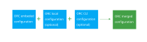
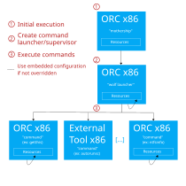
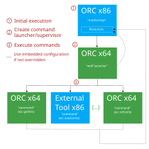

Introduction¶
DFIR ORC, where ORC stands for “Outil de Recherche de Compromission” in French, is a collection of specialized tools dedicated to reliably parse and collect critical artefacts such as the MFT, registry hives or event logs. It can also embed external tools and their configurations.
DFIR ORC collects data, but does not analyze it: it is not meant to triage machines. It cannot spy on an attacker either, as an EDR or HIDS/HIPS would. It rather provides a forensically relevant snapshot of machines running Microsoft Windows.
Along the years, it has evolved to become stable and reliable software to faithfully collect unaltered data. Meant to scale up for use on large installed bases, it supports fine-tuning to have low impact on production environments.
How to build DFIR ORC?
DFIR ORC is not usable out-of-the-box: it is a configurable framework allowing to build a binary by embedding other tools, including file system parsing tools which are also released.
Everything needed to build a functional tool using Microsoft Visual Studio (free edition) is provided. To get started building, check out this GitHub repository!
Tutorial
DFIR ORC can be quite difficult to understand the first time around. A tutorial, organized in progressive steps, can help users understand how the tool works and how to tune its configuration.
Table of Contents¶
Tutorial¶
This tutorial details the steps to obtain a configured DFIR ORC binary ready for deployment.
It explains which code to compile, how to embed a configuration, how to modify a configuration, the difference between compiling and configuring… Basically, it goes through most of the classical steps which incident responders have to follow in their daily usage of the framework.
Warning
Everything must be done in a Microsoft Windows environment. Only step 1 requires compiling with Visual Studio (the free edition is sufficient, see step 1 for details).
Unconfigured and configured binaries require administrative privileges. Commands below are designed to be run in an elevated Powershell shell. It can be adapted to work in an elevated command shell prompt.
1. Build¶
This step is the only one requiring actual compilation with Microsoft’s toolchain. Instructions to compile these files from the source code are detailed here.
Please follow this procedure before going further.
As is explained in the section Configuration Process, compiling the source code for DFIR ORC yields what is called unconfigured binaries, typically named DFIR-Orc_x86.exe (32-bit) and DFIR-Orc_x64.exe (64-bit).
An unconfigured binary contains everything needed to orchestrate the collection of artefacts (e.g. what we call WolfLauncher, illustrated here).
It also contains the embedded tool suite included by default.
Thus, it can behave kind of like the busybox tool, and be used as is to run embedded tools. In fact, it is exactly what WolfLauncher does when a configured binary is run.
Important
As configured binaries, unconfigured binaries require administrative privileges for execution.
Mini-challenge 1¶
This first step illustrates how to use unconfigured binaries to run the tools embedded by default.
Find a command line to use NTFSUtil to display information about the USN journal of disk C:.
Hint ▶
NTFSUtil needs arguments /USN \\.\c:
Answer ▶
Both command lines work.
.\DFIR-Orc_x86.exe NTFSUtil /USN "\\.\c:"
.\DFIR-Orc_x64.exe NTFSUtil /USN "\\.\c:"
2. Configure¶
Note
No compilation is required after step 1.
Why is a configuration needed? Basically, an unconfigured binary is just a set of tools, plus a collection engine. Hence, the list of artefacts to be collected, and how to collect them, has not been provided yet. This list is precisely what a configuration is! Please refer to the short section Configuration Process to read about the basics.
This step details how to obtain a configured binary from an unconfigured binary and the repository of existing configurations.
First, clone the default configuration:
git clone "https://github.com/dfir-orc/dfir-orc-config.git"
cd dfir-orc-config
Then, copy the unconfigured DFIR ORC binaries DFIR-ORC_x86.exe and DFIR-ORC_x64.exe in the tools folder:
Copy-Item <Path>\dfir-orc\build-x86\MinSizeRel\DFIR-Orc_x86.exe .\tools
Copy-Item <Path>\dfir-orc\build-x64\MinSizeRel\DFIR-Orc_x64.exe .\tools
To illustrate how to include external tools into the DFIR ORC framework, we have chosen to provide an example configuration which uses autorunsc.exe. Hence, you need to download it from the Microsoft SysInternals website.
Invoke-WebRequest "https://live.sysinternals.com/autorunsc.exe" -OutFile .\tools\autorunsc.exe
Finally, run the command below in an elevated command prompt:
.\Configure.cmd
This command yields a configured DFIR ORC binary (named DFIR-Orc.exe by default) in the output directory.
Mini-challenge 2¶
In the configuration repository, which file describes the commands which WolfLauncher (the collection engine) is going to run when the configured binary is executed ?
Hint ▶
Track autorunsc.exe, since you know it is supposed to be run.
Answer ▶
The main configuration file, or WolfLauncher configuration, is DFIR-ORC_config.xml. Basics to read and edit it are detailed in 5. Edit Embedded Configurations.
3. Test the Configuration¶
Once we have a configured DFIR ORC binary, we can start testing it!
Of course, we can use it to execute one of the embedded tools (just like the unconfigured ones):
.\output\DFIR-Orc.exe NTFSInfo /out=C_drive.csv "C:\"
This command will create a file named C_drive.csv in the current directory with the enumeration of the Master File Table of the volume C:.
In a similar manner, GetThis can be invoked from the command line:
.\output\DFIR-Orc.exe GetThis /nolimits /sample=ntdll.dll /out=ntdll.7z "C:\"
This command will create a file called ntdll.7z in the current directory, containing all files named ntdll.dll in the C: volume.
However, configurations were introduced so that users can write these command lines once and for all.
Once a tool is run, its results are stored in an archive. The content of archives are set by the configuration file. Given a configured binary, the option keys lists all the archives which can be built according to the embedded configuration.
Let’s try this on the binary obtained in step 2.
.\output\DFIR-Orc.exe /keys
This command outputs the result below:
DFIR-Orc Version 10.0.0.000
Start time : 09/26/2019 14:57:55.198 (UTC)
Computer : JEANGABOOK
Full Computer : jeangabook
User : JEANGABOOK\Jean (elevated)
System type : WorkStation
System tags : OSBuild#18362,RTM,Release#1903,Windows10,WorkStation,x64
Operating System : Microsoft Windows 10 Enterprise Edition (build 18362), 64-bit
Output directory : F:\Projects\dfir-orc-config (encoding=UTF8)
Temp directory : C:\Users\Jean\AppData\Local\Temp\WorkingTemp (encoding=UTF8)
Log file : DFIR-ORC_WorkStation_jeangabook_20190926_145755.log
Repeat Behavior : No global override set (config behavior used)
Priority : Low
[X] Archive: Main (file is DFIR-ORC_WorkStation_jeangabook_Main.7z)
[X] Command SystemInfo
[X] Command Processes
[X] Command GetEvents
[X] Command Autoruns
[X] Command NTFSInfo
[ ] Command NTFSInfoHashPE
[X] Command FatInfo
[ ] Command FatInfoHashPE
[X] Command USNInfo
[X] Command GetArtefacts
[X] Archive: Hives (file is DFIR-ORC_WorkStation_jeangabook_Hives.7z)
[X] Command GetSystemHives
[X] Command GetUserHives
[X] Command GetSamHive
[ ] Archive: Yara (file is DFIR-ORC_WorkStation_jeangabook_Yara.7z)
[X] Command GetYara
Finish time : 09/26/2019 14:57:55.198 (UTC)
Elapsed time : 0 msecs
After the usual banner with the tool running, version information and parameters, we get a list of configured archives (Main, Hives and Yara) and the list of commands which they comprise.
[X] indicates an archive (respectively a command) that will be collected (respectively run).
[ ] indicates an option or command that can be added to the collection via the /key+=Yara for instance.
The result above shows that by default, the configuration
embedded in DFIR-Orc.exe
collects an archive named Main by running all its commands except NTFSInfoHashPE and FatInfoHashPE,
collects an archive named Hives containing the outputs of all three commands listed for this archive,
does not collect the Yara archive.
It is possible to select and deselect keys using the syntax detailed in the command line documentation. As illustrated in Deployment-specific Configuration, options on the command line change the behavior of a configured binary without impacting its embedded configuration file; the changes only take effect for one execution.
For example, the following line is meant to select the Yara archive, but deselect the SAM Hive collection included in the Hives archive. Adding /keys at the end of the line allows a dry run: it just outputs what is set to be collected by the entire command line.
.\output\DFIR-Orc.exe /key+=Yara /key-=GetSamHive /keys
Mini-challenge 3¶
Write a command line allowing to only get the output of SystemInfo in the Main archive, in a folder
named \Temp\testing.
Run the command to test that it works (SystemInfo is very quick).
Hint ▶
Options involved are /out and /key. See the command line documentation.
Answer ▶
.\output\DFIR-Orc.exe /key=SystemInfo /out=\Temp\testing
Run the command line again. What does it do? Why? How can this behavior be corrected?
Hint ▶
Option /overwrite should help. See the command line documentation.
Answer ▶
.\output\DFIR-Orc.exe /key=SystemInfo /out=\Temp\testing /overwrite
DFIR-Orc.exe detects that some archives already exist (based on the file names) and does not overwrite them by default.
4. Use Local Configuration Files¶
A local configuration file is meant to provide some configuration options while not using a command line. This can be useful in some deployment scenarios.
It is an XML file which has the following skeleton, described in the section DFIR ORC Local Configuration File.
As an example, we show how to write a file to run the equivalent of the command line below.
.\output\DFIR-Orc.exe /key=SystemInfo /out=\Temp\testing
The corresponding file, named DFIR-Orc.xml and which we choose to store in \Temp\testing\, looks as follows.
<dfir-orc priority="low" powerstate="SystemRequired,AwayMode">
<output>\Temp\testing</output>
<key>SystemInfo</key>
</dfir-orc>
Running DFIR ORC with this configuration can be done with this command line:
.\output\DFIR-Orc.exe /local=\Temp\testing\DFIR-Orc.xml
Encrypting the archives with a public key requires adding a recipient element in the XML file.
<dfir-orc priority="low" powerstate="Systemrequired,AwayMode">
<output>\Temp\testing</output>
<key>SystemInfo</key>
<recipient name='certfr' archive='*' >
-----BEGIN CERTIFICATE-----
MIIC7TCCAdmgAwIBAgIQR5AF92Ti8qtEwuT3PMVrJzAJBgUrDgMCHQUAMBIxEDAO
BgNVBAMTB0NFUlQtRlIwHhcNMDQxMjMxMjIwMDAwWhcNMTQxMjMxMjIwMDAwWjAS
MRAwDgYDVQQDEwdDRVJULUZSMIIBIjANBgkqhkiG9w0BAQEFAAOCAQ8AMIIBCgKC
AQEAiufyRATXw5Kc/DUcEr/5nNygcbluyS5gkUd1pGaUqKHMSMEVOBzYqcvq3cMw
4shAL3TSgYdoOJaLG4ErvyRU87fWYRcwiHzGdFg89E3pBEWnyV3j3fR0fVB5t3MD
jbooTGI/qQGl1l3MZ+bOiHkYcIG50R5343VT5vjRLmPv16iopGczLXKkNFxN480f
BnCF8HcJesFiMIDUI+d9OWpLJNDSCerouMr75HVD47+gBKKgH2PrxWozk2L6R9gQ
l8/6xzM4VKiNt4BTGfChG8AnO8sJzPETjJaDXrIGaYVLxU4OxFh/a9x61dlM/5A/
TASXpLhXrsi+ib3YLLl+pNh+aQIDAQABo0cwRTBDBgNVHQEEPDA6gBD47GaJKs91
qsThQIQ7f8Y5oRQwEjEQMA4GA1UEAxMHQ0VSVC1GUoIQR5AF92Ti8qtEwuT3PMVr
JzAJBgUrDgMCHQUAA4IBAQBgvEE7qyLVV+Y5B0sR5VuPmfeqakOxBxLmb8VoTNKn
/7ai1XwtJeWD1vumKx5Q29GiUfVhvBgn0zhjM5syVDFCqEcp+eu6l2XbN8uvllCY
daTOT/9UylLxu1L/epiWiYtqRZOO/9i1fyqrkguIww7EjXXT3ybL5U/BakEC2Yg5
6vUoxbo2EbA1UoMWurRxYNYxyFfHpvBYXFf4uDaAFIVMtEgH5VkKyM3Kj2hi/PJH
/a30ndTWVSY/82hoRGCa+SkevR5VbDsxTqHtEHys4K+ETVTNXp29HwG+1YG7BTTc
4VdFRqUm7e3o6VUArFar8I01oHiHzqKJiu1Omm2Fkmc1
-----END CERTIFICATE-----
</recipient>
</dfir-orc>
Suppose now that the configuration file DFIR-Orc.xml is copied in the same repository as the configured binary DFIR-Orc.exe. We can then use the command line below: the executable takes into account the XML file bearing its base name present in its running directory.
.\output\DFIR-Orc.exe
Element upload is the counterpart of the output element to configure a remote repository as a destination for the archives.
Mini-challenge 4¶
Combine the steps above to find a way to confirm without creating any archive that the local configuration file is being taken into account by the following command line.
.\output\DFIR-Orc.exe
Hint ▶
As documented in this section, command-line options can be combined with a local configuration file, and supersede it.
Answer ▶
Adding the option /keys to the command line being tested allows to check what is going to be executed.
.\output\DFIR-Orc.exe /keys
This displays that only SystemInfo is set to execute, and that the output directory is \Temp\testing.
Edit the configuration file to add the command GetSamHive, and another recipient, which can only decrypt the Hives archive.
Hint ▶
It is possible to add another recipient element next to the first one.
Answer ▶
Here is one possible solution.
<dfir-orc priority="low" powerstate="Systemrequired,AwayMode">
<output>\Temp\testing</output>
<key>SystemInfo,GetSamHive</key>
<recipient name="certfr" archive="*" >
-----BEGIN CERTIFICATE-----
etc.
-----END CERTIFICATE-----
</recipient>
<recipient name="Marc" archive="Hives" >
-----BEGIN CERTIFICATE-----
etc.
-----END CERTIFICATE-------
</recipient>
</dfir-orc>
5. Edit Embedded Configurations¶
To refer to embedded tools as resources in a configuration file, a specific syntax is used. Please read Referencing Resources in Configurations before proceeding.
As an example, let us try to find the command lines matching some instructions in the sample configuration file DFIR-ORC_config.xml from the repository of existing configurations.
First, let us focus on autorunsc.exe. The file reads:
<command keyword="Autoruns">
<execute name="autorunsc.exe" run="7z:#Tools|autorunsc.exe"/>
<argument>-a * -c -h -m -s -t -accepteula</argument>
<output name="autoruns.csv" source="StdOut"/>
<output name="autoruns.log" source="StdErr"/>
</command>
This paragraph establishes that when command Autoruns is run, a temporary file named autorunsc.exe is extracted on disk from an archive resource embedded in DFIR-Orc.exe (see the second bullet point here and here for details). Then, this temporary binary is run with arguments -a * -c -h -m -s -t -accepteula. This produces two outputs; lines output on StdOut are stored in a file named autoruns.csv, while lines output on StdErr are stored in autoruns.log.
Secondly, let us detail the example of NTFSInfo. The configuration reads:
<command keyword="NTFSInfo" queue="flush">
<execute name="DFIR-ORC.exe" run="self:#NTFSInfo"/>
<argument>/config=res:#NTFSInfo_config.xml</argument>
<output name="NTFSInfo_SecDesc.7z" source="File" argument="/SecDescr={FileName}"/>
<output name="NTFSInfo_i30Info.7z" source="File" argument="/i30info={FileName}"/>
<output name="NTFSInfo.7z" source="File" argument="/out={FileName}"/>
<output name="NTFSInfo.log" source="StdOutErr"/>
</command>
This paragraph describes what should happen when the NTFSInfo command is run. As NTFSInfo is a raw, non-archived resource of the configured binary, the syntax used is self:#NTFSInfo. The configuration used by NTFSInfo (̀`res:#NTFSInfo_config.xml`) is a resource of the configured binary, named NTFSInfo_config.xml. This file has been embedded in the configured binary by ToolEmbed in 2. Configure. The following line in DFIR-ORC_embed.xml allows to match the resource to the original file.
<file name="NTFSInfo_config.xml" path=".\%ORC_CONFIG_FOLDER%\NTFSInfo_config.xml"/>
Recreating the command line can dine with a little help from this section of the documentation of NTFSInfo. Assuming that the configuration file is on the disk and in the same directory as the configured binary, this yields the following line.
.\DFIR-Orc.exe NTFSInfo /config=NTFSInfo_config.xml /SecDescr=NTFSInfo_SecDesc.7z /i30info=NTFSInfo_i30Info.7z /out=NTFSInfo.7z /logfile=NTFSInfo.log
Now that reading a WolfLauncher configuration file is less of a mystery, let’s try to modify it by adding the hives related to the AmCache. There are several other useful files to collect, but this is beyond the scope of this tutorial. The Amcache hive is systemwide, and it has to be collected along with transaction and temporary files. Thus, after searching for the configuration files involved in the SYSTEM hive collection, it seems reasonable to append our new requirements to GetSystemHives_config.xml.
Below is an excerpt of the new configuration file to be used by DFIR-Orc.exe.
<?xml version="1.0"?>
<getthis reportall="" flushregistry="yes">
<location>%SystemRoot%</location>
<samples MaxPerSampleBytes="500MB" MaxTotalBytes="2048MB">
<sample>
<ntfs_find name="SECURITY" header="regf"/>
</sample>
...
<sample>
<ntfs_find name="AmCache.hve" header="regf" />
<ntfs_find name="AmCache.hve.log1" />
<ntfs_find name="AmCache.hve.log2" />
</sample>
</samples>
</getthis>
The modified configuration has to be embedded in the configured binary somehow. There are two ways to do this.
The first possibility is to modify the file GetSystemHives_config.xml and use ToolEmbed as in 2. Configure above.
It is also possible to do this directly on a configured binary as follows.
Start by creating a directory where embedded external tools and configurations can be dumped, e.g. dump_dir.
.\DFIR-Orc.exe toolembed /dump=.\DFIR-Orc.exe /out=dump_dir
In dump_dir, find the file GetSystemHives_config.xml and modify it. Then, run the command below to obtain a new configured binary.
cd dump_dir
..\DFIR-Orc.exe toolembed /out=..\New_DFIR-Orc.exe /config=Embed.xml
Mini-challenge 5¶
Find how to change the yara rules used in DFIR ORC, and explain why it works.
Hint ▶
In the configuration repository, there is a file named ruleset.yara which
seems a good place to start. But how is it used ?
Answer ▶
Reading GetYaraSamples_config.xml reveals that it is a GetThis configuration file, which uses yara and
a resource named res:#ruleset.yara to collect samples matching any rules in this set.
Changing the file ruleset.yara and embedding it in a new configured binary is indeed the right thing to do.
6. The Final Challenge¶
A Few Q&A to Warm Up¶
Find out which of the following statements are false, and why.
DFIR-Orc_x86.exe is a configured binary, hence I can use it to run NTFSInfo.
Answer ▶
False, but nearly true. DFIR-Orc_x86.exe is the name usually given to an unconfigured binary.
Both unconfigured and configured binary can be used to run tools embedded by default such as NTFSInfo, in a busybox way.
There is no need to recompile DFIR-Orc_x86.exe and DFIR-Orc_x64.exe to add an external tool,
using ToolEmbed is sufficient to obtain a new configured binary.
Answer ▶
True.
During an incident response, I have a disconnected Windows desktop and a configured binary DFIR-Orc.exe. I want to augment the time span during which archives must complete and to collect files located in a specific place on the disk. There is nothing I can do on site.
Answer ▶
False. ToolEmbed allows to extract resources from a configured binary, modify them and reconstruct a new configured binary. This is explained in 5. Edit Embedded Configurations. This is necessary to add the collection of files using GetSamples or GetThis. However, changing the timeout can be done using option /archive_timeout on the command line. It will supersede the default value in the embedded configuration.
The Final Boss¶
Great forensicators know that sometimes quick wins can be found in Temp.
Create a new configured binary, which uses GetThis to collect specifically PE files in this directory.
To guarantee that this does not create enormous archives to transfer over a network, find how to impose
limits on the size of each file, and the total size of the cumulated samples.
Hint (list of the steps) ▶
Create a specific configuration file for GetThis, find what to put inside (some useful elements to check
out in the documentation are location [global option], samples and sample).
Then, find a way to modify DFIR-ORC_config.xml so that the new GetThis file is used. This should highlight that
the new file has to be embedded as a resource, so the last thing to do is to edit DFIR-ORC_embed.xml so that a resource
is created.
Eventually, reconfigure to obtain a new binary with ToolEmbed (cf 2. Configure).
Answer ▶
The solution presented here is not the only way to go, but doing these modifications work.
Firstly, create the following file named GetExeInTemp_config.xml, in the config directory of the repository of configurations cloned previously.
<getthis reportall="">
<location>*</location>
<samples MaxPerSampleBytes="<SomeLimitOfYourChoice>" MaxTotalBytes="<SomeOtherLimitToChoose>">
<sample>
<ntfs_find path_match="\Temp\*" header="MZ" />
</sample>
</samples>
</getthis>
Then insert the following command element in DFIR-ORC_config.xml, e.g. in the Main archive.
<command keyword="GetExeInTemp">
<execute name="DFIR-Orc.exe" run="self:#GetThis" />
<argument>/config=res:#GetExeInTemp_config.xml</argument>
<output name="ExeInTemp.7z" source="File" argument="/out={FileName}" />
<output name="ExeInTemp.log" source="StdOutErr" />
</command>
This addition requires that a (non-archived) resource named GetExeInTemp_config.xml is available when the configured binary runs; so we have to embed it. To do so, let us edit the file DFIR-ORC_embed.xml.
We assume the file GetExeInTemp.xml exists along all the others in the config/ directory. As a result, we insert the line below to the DFIR-ORC_embed.xml file.
<file name="GetExeInTemp_config.xml" path=".\%ORC_CONFIG_FOLDER%\GetExeInTemp_config.xml"/>
Eventually, reconfiguration can be done as documented in step 2. Configure.
Requirements¶
DFIR ORC requires administrative privileges. Indeed, data accessed is privileged. However, the embedded tool suite does not go through the permission system of Microsoft Windows to access files. It rather interacts at a lower level, using devices, thus preventing access denials on files already in use, locked, etc. This enables to collect critical artefacts, such as hives, event logs and pagefiles.
DFIR ORC is tested on the following platforms:
Microsoft Windows XP SP2 (32 bits)
Microsoft Windows XP SP3 (32 bits)
Microsoft Windows Server 2003 (R2) SP3 (32&64 bits)
Microsoft Windows Vista SP2 (32&64 bits)
Microsoft Windows Server 2008 SP2 (32&64 bits)
Microsoft Windows 7 SP1 (32&64 bits)
Microsoft Windows Server 2008 R2 (64 bits)
Microsoft Windows 8 (32&64 bits)
Microsoft Windows Server 2012 (64 bits)
Microsoft Windows 8.1 (32&64 bits)
Microsoft Windows 8.1 Update (32&64 bits)
Microsoft Windows Server 2012 R2 (64 bits)
Microsoft Windows 10 (32&64 bits)
Microsoft Windows Server 2016 (64 bits)
Microsoft Windows Server 2019 (64 bits)
DFIR ORC creates processes for data collection and assigns them to run within a Windows Job Object. This job object allows to control and monitor resources used by the tools (memory, IO, UI, …). DFIR ORC needs to create this job object and be able to assign processes to it.
Depending on the deployment method used and Windows versions, it is possible that the DFIR-Orc.exe process is created within a job
object. When this is the case, the process must be allowed to “break away from the job” (JOB_OBJECT_LIMIT_BREAKAWAY_OK).
If this fails, DFIR-Orc.exe will attempt to create a nested job object and run processes into this object.
Warning for Windows 7, XP SP3, Vista, and Windows Server 2003, 2008, 2008 R2
In these versions of Windows, a process can be associated with only one job: jobs cannot be nested.
The ability to nest jobs was added in Windows 8 and Windows Server 2012.
If DFIR-Orc.exe is running inside a job object that does not have the permission “break way from job”, and nested jobs are not available, then DFIR ORC will attempt to temporarily modify the job to allow its children to break away. If that attempt fails, DFIR ORC will be unable to launch processes and will fail. At this time, there is no known configuration where DFIR ORC fails for this reason but this corner case could still occur. In such a case, an appropriate error message is displayed.
More information on job objects on MSDN.
Design and Architecture¶
This part of the documentation aims to explain the basics of the inner workings of the DFIR ORC framework.
Design Principles¶
The Approach: One Binary to Run Them All¶
DFIR ORC was originally developed to address the need for reliable data collection on potentially compromised systems. Historically, teams have been using two approaches:
a script executing a collection of ad hoc tools one after the other,
a monolithic tool gathering as much data possible from available APIs.
The first approach is very prone to failures if any of the tools fails, hangs, or expects user input for some reason. It thus puts in jeopardy the complete set of collected data. Moreover, these tools usually create a huge amount of data on disk before being able to archive or compress the whole result set in one file. On the plus side, this approach benefits from the wide variety of tools available to accomplish efficiently live data collection required in the various technological areas (file systems, networking, memory analysis, etc.).
The second approach (monolithic) is prone to application crashes and represents an enormous amount of “reinventing the wheel”. It also carries the burden of having to integrate various tools and libraries into the same address space. This approach, however, allows to completely control the output format for fast and meaningful data mining.
DFIR ORC takes the best of both worlds: it reuses existing or independent tools and unites them under the management of an execution engine that allows more control. Moreover, a set of specialized tools has been developed and can also be embedded. Typically, all data-gathering activities will run under the control of a Windows Job Object putting a strict control on their execution. Processes output data which is immediately compressed into the output file, to minimize the disk usage and churn.Whenever possible, the output will be added to the archive ASAP and deleted to minimize use of temporary files.
The main design motto behind DFIR ORC
Whatever it takes, whatever happens, DFIR ORC will strive to provide valid output files in a predetermined amount of time.
Choosing Your Arsenal: Tools to Embed¶
DFIR ORC can embed other tools to create a unique file that will be executed on the target systems.
The first step is to define your data collection goals, to choose appropriate tools to run on machines.
What data do you need to collect?
File system related data (file lists, hashes, file signatures, …)
Registry
Live data: processes, network communications, kernel objects,
System configuration (network, ASEPs, …)
Logs, events
What are the target platforms?
Obsolete platforms (XP? Vista?)
Modern platforms (8.1? 10?)
How sensitive and/or personal is this information?
Next, you need to define and assemble the set of tools required to collect this information from the targeted systems.
From DFIR ORC itself with the embedded tool set:
NTFSInfo,
FATInfo,
GetThis,
RegInfo,
USNInfo,
ObjInfo,
FastFind,
NTFSUtil,
GetSectors,
DD
From third parties:
SysInternals Tools Suite (autoruns, …),
Tcpdump,
…
The flexibility allowed by the configuration enables to consider tuning tools which:
only run on specific Windows version or architecture,
have different output or command line arguments on specific Windows versions,
require files to be available (configurations, dependencies, …) upon execution.
A Configurable Framework¶
DFIR ORC is configurable. On top of the embedded tools, the operational binary DFIR-Orc.exe embeds
an XML configuration listing all the tools to run and their options. This is the reason why we call DFIR-Orc.exe a configured binary.
To be able to write a valid configuration,
the exact command line required by each tool is needed, as well as a description of the intended output.
DFIR ORC also allows analysts to organize the data collected into one or more archives. Anything can justify a choice of organization, e.g. the nature and sensitivity of the collected information. We offer some ideas of criteria below.
Sensitivity of information: typically, data containing sensitive information will be collected separately. DFIR ORC can encrypt each archive with a separate list of recipients. For each certificate of recipients provided, DFIR ORC will encrypt the session key. The PKCS#7 CMS standard is used to provide a cross-platform format for the encrypted file ;
Pace and/or volume: you may want to have separate archives for quick and easy data and for long, slow, massive collection of information. This will enable a phased analysis of the data as it arrives.
Analysis: if you delegate analysis to other teams, or collect data for other teams (potentially with a different need-to-know), you will organize this data in separate archives to ease the treatment process.
Behavior: If a tool has known issues or is new to your arsenal, you may want to segregate its execution into a separate archive to enable the command engine to impose specific limitations.
Architecture¶
Configuration Process¶
The ultimate objective of using DFIR ORC is to create a single binary file that orchestrates complex collection tasks on a system, optionally protect the result with encryption and, finally, upload them to a central collection point (SMB share, BITS server).
Compiling the source code for DFIR ORC yields what is called unconfigured binaries, typically named DFIR-Orc_x86.exe and DFIR-Orc_x64.exe.
These binaries contain the embedded specific tools developed as part of this project.
However, as explained in Design Principles, the framework is meant to build a single binary, embedding external tools and the whole
list of data to collect. The process of creating such a binary is called configuring DFIR ORC. It results in a configured binary, typically called DFIR-Orc.exe.
The configuration process takes as inputs:
optionally, a set of external tools (from your own toolset, from Sysinternals, etc.),
a WolfLauncher configuration defining the collection commands to execute and their expected results,
the configuration files needed for the tools (both external and from the pre-embedded suite) to run the commands listed in the WolfLauncher configuration file,
an Embed configuration to specify how the files listed above should be embedded in the resulting configured binary,
a Mothership, typically
DFIR-Orc_x86.exethat will be the “base” from which the configured binary is created. The Mothership is the first code to run when the configured binary is launched.
Once all these inputs are gathered, running the following ToolEmbed command creates a configured binary:
DFIR-Orc_x64.exe ToolEmbed /config=Embed.xml /out=DFIR-Orc.exe
Once the configured binary is created, it is ready for testing and, then, deployment.
To try it on a relevant set of configurations, please refer to the GitHub repository dedicated to configurations: https://github.com/dfir-orc/dfir-orc-config/.
Tools Invoked Directly From Command-line¶
Above, we go over the configuration process. It should clarify the difference between the embedded tool suite, present in both configured and unconfigured binaries, and the external tools which only configured binaries can embed.
In the embedded suite, some tools are basic, such as NTFSUtil or DD, others are more complex, like WolfLauncher.
Each tool is usable through the configured and unconfigured binaries. For instance, NTFSUtil can enumerate the file systems present on the live system, with the command:
DFIR-Orc_x64.exe NTFSUtil /enumlocs
NTFSInfo lists the files and directories of an NTFS volume with the command:
DFIR-Orc_x64.exe NTFSInfo /out=%temp%\test.csv c:\
GetThis collects the system software hive with:
DFIR-Orc_x64.exe GetThis /nolimits /sample=SOFTWARE /out=%temp%\hive.7z c:\
Most tools can be configured for more advanced scenarios (like YARA rules, complex filters or search criteria) with XML configuration files. The documentation for every embedded tool can be found here.
Deployment-specific Configuration¶
Each DFIR ORC deployment requires its own set of parameters and settings suited to the targeted installed base (upload method, temporary folder, etc.). To adapt a configured binary to these specifics, a local configuration file can be used. Of course, command-line options also work.
All these configuration files and options are evaluated by a configured binary, DFIR-Orc.exe, in the following order:

Note
Some execution parameters can be overridden at each step of the configuration. For instance, temporary (which specify the temporary working folder) can be defined in the WolfLauncher configuration, then overridden by the local configuration file and, finally, modified by a command-line switch.
DFIR ORC Execution¶
As explained in Requirements, most DFIR ORC collection tasks involving the NTFS Master File Table parser (NTFSInfo, GetThis) require administrative privilege to execute successfully.
Warning
Administrative privilege is always requested when DFIR ORC is executed. If absent, a UAC elevation prompt may be triggered depending on the system configuration.
As seen above, the first code to run when a configured binary runs is called the Mothership.
As 64-bit platform can run 32-bit code but not the other way around, DFIR-Orc_x86.exe is the usual choice.
Warning
The execution sequence documented below corresponds to the usual configuration, such as the example set originally proposed in the GitHub repository. Fiddling with Embed.xml and ToolEmbed can change what happens.
The goal of a configured binary is to launch the architecture-appropriate DFIR ORC with the WolfLauncher argument. This argument launch an embedded tool, WolfLauncher, that is the command scheduler.
DFIR ORC on 32-bit Systems¶
On 32-bit systems, the configured binary is “native” to the architecture. Thus, the Mothership (here DFIR-Orc_x86) can simply reexecute itself with the WolfLauncher as shown in the figure below.
Depending on what is specified in the WolfLauncher configuration file, it will then launch embedded tools and/or external tools to proceed with the data collection.

DFIR ORC on 64-bit Systems¶
On 64-bit systems, the Mothership not being “native” to these systems, the extraction of DFIR-Orc_x64.exe is required.
It is followed by the execution of DFIR-Orc_x64.exe WolfLauncher.
Depending on what is specified in the WolfLauncher configuration file, it will then launch embedded tools and/or external tools to proceed with the data collection.

DFIR ORC can look up and use resources from its parent and grandparent processes (i.e. the Mothership and/or WolfLauncher) without having to extract them. This avoids unnecessary file extraction to disk and allows direct use of these resources from the children tasks. This process is typically used for 64-bit systems since resources are not available in the subprocesses but only in the Mothership binary.
Configuration¶
As explained in the section Design and Architecture, the configuration of DFIR ORC specify the list of programs to run and the name of the output archive containing the resulting data.
Any functional ready-to-use binary DFIR-Orc.exe embeds such a configuration as an XML resource. This latter is referred to as a WolfLauncher configuration file.
WolfLauncher configuration can be embedded or extracted from DFIR-Orc.exe using its own ToolEmbed command, no external tool is required.
It is a usual step to extract a configuration for modification before embedding it back into DFIR-Orc.exe. But it is also possible to influence the execution of DFIR-Orc.exe, at least to some extent, using two other means.
Firstly, options can be gathered in a local configuration file to add or override embedded configuration elements.
Secondly, command-line options override both other levels of configuration.
Understanding how to configure of DFIR ORC is the key to unleashing its full potential.
To help getting started, a tutorial describes step by step a few scenarios.
Referencing Resources in Configurations¶
Syntax¶
The section Configuration Process explains the embedding of tools as resources of configured and unconfigured binaries. To reference an embedded resource, Mothership and WolfLauncher use the syntax below. Configuration files rely on these notations.
For a resource directly available “in clear text” (as opposed to inside an archive like 7zip or cab):
res:#ressource_name
For example, the string
res:#getthis_evtreferences the resource named getthis_evt in the Embed configuration file for Mothership. Such a resource is created by the following ToolEmbed XML configuration:<file name="getthis_evt" path=".\%ORC_CONFIG_FOLDER%\GetEvents_config.xml"/>
See ToolEmbed for more examples.
To reference a resource via an entry into an archive embedded in Mothership:
archive_format:#archive_name|resource_name
For example, the string
7z:#Tools|autorunsc.exewill reference the resource autorunsc.exe in the 7zip archive named Tools. Such a resource is created by the following ToolEmbed XML configuration:<archive name="Tools" format="7z" compression="Ultra"> <file name="autorunsc.exe" path=".\tools\autorunsc.exe"/> </archive>
See ToolEmbed for more examples.
Lastly, it is possible to invoke one of the embedded tools, e.g. NTFSInfo, by writing
run=self:#NTFSInfo. Theself:#string refers to the unconfigured binary used to run WolfLauncher, e.g.DFIR-Orc_x86.exe. Thus, whenrun=self:#NTFSInfois used in configurations, WolfLauncher creates a new process using its unconfigured binary,DFIR-Orc_x86.exein our example, and passes it the name of the tool as argument. Hence, the command line of the new process would beDFIR-Orc_x86.exe NTFSInfo, with maybe other arguments added in the configuration. As explained in Tools Invoked Directly From Command-line, such a line runs the embedded tool NTFSInfo.
Well-known Resources or Variables¶
Below are listed well-known resources and variables defined in DFIR ORC.
Name |
Description |
Typical content |
|---|---|---|
WOLFLAUNCHER_CONFIG |
Default DFIR ORC configuration to execute |
|
WOLFLAUNCHER_SQLSCHEMA |
DFIR ORC output’s schema |
WolfLauncherSqlSchema.xml |
FASTFIND_SQLSCHEMA |
DFIR ORC output’s schema |
|
GETSAMPLES_SQLSCHEMA |
GetSamples output’s schema |
GetSamplesSchema.xml |
GETTHIS_SQLSCHEMA |
GetThis output’s schema |
GetThisSqlSchema.xml |
IMPORTCSV_SQLSCHEMA |
ImportCSV output’s schema |
empty |
REGINFO_SQLSCHEMA |
RegInfo output’s schema |
RegInfoSqlSchema.xml |
USNINFO_SQLSCHEMA |
USNInfo output’s schema |
USNInfoSqlSchema.xml |
NTFSINFO_SQLSCHEMA |
NTFSInfo output’s schema |
NTFSInfoSqlSchema.xml |
TOOLEMBED_SQLSCHEMA |
ToolEmbed output’s schema |
empty |
OBJINFO_SCHEMA |
ObjInfo output’s schema |
ObjInfoSchema.xml |
DBGHELP_X86DLL |
Reference to the x86 dbgeng.dll resource |
|
DBGHELP_X64DLL |
Reference to the x64 dbgeng.dll resource |
|
XMLLITE_X86DLL |
XmlLite is missing on XP SP2. We embark it and this is the reference to it. |
res:#XMLLITE_X86_XPSP2 |
XMLLITE_X86_XPSP2 |
This is XP SP2’s redistribution of xmllite.dll |
..\XmlLite\xmllite.dll |
DFIR ORC Command-line Options¶
DFIR ORC cannot be solely configured using command-line options. It never was and never will be possible. DFIR ORC is configured using XML configuration files. Command-line options are too often misused, misspelled or misunderstood by users and/or administrators. DFIR ORC aims to be error resilient and delivers its output no matter what. That being said, command-line options can be used to change certain behaviors of a configured binary.
Note
Options are case insensitive.
/out=<OutputFolder> Option¶
Modifies the output location of the archives. This must be an existing directory with write access for the user running DFIR-Orc.exe.
/out=<OutputFolder>
/out=\\myServer\MyShare\OutputFolder
By default, outputs are written in the current directory a.k.a. .
This option overrides the output location setting defined by the output element in a local configuration file.
Note
This option does not affect the upload location.
/TempDir=<TempFolder> Option¶
Changes the temporary folder used for temporary files.
/tempdir=<OutputFolder>
/tempdir=%temp%\MyTemp
By default, %TEMP%\WorkingTemp\ is used.
This option overrides the directory defined in the temporary element in a local configuration file.
/Keys Option¶
This option can be used to visualize the archives and commands of a configured binary DFIR-Orc.exe.
When /Keys is used, no command is executed, no archives are created.
/Keys
An example of the output for this command is shown below.
.\DFIR-Orc.exe /Keys
DFIR-Orc Version 10.0.2.000
Start time : 10/22/2019 09:07:07.956 (UTC)
Computer : DESKTOP-ORBLVTG
User : DESKTOP-ORBLVTG\user (elevated)
System type : WorkStation
System tags : OSBuild#18362,RTM,Release#1903,Windows10,WorkStation,x64
Operating System : Microsoft Windows 10 Professional (build 18362), 64-bit
Output directory : C:\Temp\output (encoding=UTF8)
Temp directory : C:\Temp\WorkingTemp (encoding=UTF8)
Log file : DFIR-ORC_WorkStation_DESKTOP-ORBLVT_20191022_090707.log
Repeat Behavior : No global override set (config behavior used)
Priority : Low
[X] Archive: Main (file is DFIR-ORC_WorkStation_DESKTOP-ORBLVTG_Main.7z)
[X] Command SystemInfo
[X] Command Processes
[X] Command GetEvents
[X] Command Autoruns
[X] Command NTFSInfo
[ ] Command NTFSInfoHashPE
[X] Command FatInfo
[ ] Command FatInfoHashPE
[X] Command USNInfo
[X] Command GetArtefacts
[X] Archive: Hives (file is DFIR-ORC_WorkStation_DESKTOP-ORBLVTG_Hives.7z)
[X] Command GetSystemHives
[X] Command GetUserHives
[X] Command GetSamHive
[ ] Archive: Yara (file is DFIR-ORC_WorkStation_DESKTOP-ORBLVTG_Yara.7z)
[X] Command GetYara
Finish time : 10/22/2019 09:07:07.956 (UTC)
Elapsed time : 0 msecs
An [X] before an archive implies that it will be collected. However, an [X] before a command only shows the default commands run when collecting the archive. If the archive itself is not selected, the command will not be run.
In the previous example, the archives Main.7z and Hives.7z are computed but not Yara.7z.
/Key=<Keyword>, /+Key=<Keyword> and /-Key=<Keyword> Options¶
Regarding the <Keyword> value:
the list of available keywords can be obtained with the
/Keysoption,can be a comma separated list of keywords,
are case insensitive,
non-matching keywords are not executed nor generated (and no warning message displayed).
The /Key=<Keyword> option allows the selection of specific commands to be executed or archives to be generated.
/Key=<Keyword>
/Key=Main
The /+Key=<Keyword> option enables an optional archive or command (cf. archive element, command element).
/+Key=<Keyword>
/+Key=GetYara
The /-Key=<Keyword> option disables an archive generation or command execution.
/-Key=<Keyword>
/-Key=Hives,NTFSInfo
Options /+Key and /-Key can be combined and repeated on the command line. /+Key options take effect first and then the /-Key ones.
This option overrides the attributes of the archive element and the command element.
It also overrides optional settings using key, enable_key and disable_key elements in a local configuration file.
Note
“c++” syntax /Key+=<keyword> and /Key-=<keyword> is also supported.
Note
/Keys can be used in conjunction with /Key, /+Key and /-Key to visualize the command and archives actually selected to be collected.
/ChildDebug and /NoChildDebug Options¶
These options respectively enable and disable the debugger of DFIR ORC.
/ChildDebug
/NoChildDebug
The debugger is disabled by default.
This option overrides the ChildDebug attribute set in the wolf element.
/Once, /Overwrite and /CreateNew Options¶
These options control the behavior of the launcher when the output archives are already present in the output or upload location (cf. archive element).
These options apply to all archives created by the execution of DFIR-Orc.exe.
/Once
/OverWrite
/CreateNew
This option overrides the repeat attribute set in the archive element in a WolfLauncher configuration file.
/Compression=<CompressionLevel> Option¶
This option controls the level of compression for generated archives.
Allowed values are: None, Fastest, Fast, Normal, Maximum, Ultra.
The override applies to all archives created by the DFIR ORC execution.
/Compression=Fast
By default, level Normal is used.
This option overrides the compression attribute set in the archive element in a WolfLauncher configuration file.
/archive_timeout=<TimeoutValue> Option¶
This option configures the number of minutes during which the archive is allowed to run after the last command finishes. In other words, this parameter is the timeout after which the archive is canceled at the end of command execution.
/archive_timeout=10
By default, an archive creation has to complete within 5 minutes after the last command terminates.
This option overrides the archive_timeout attribute set in the archive element in a WolfLauncher configuration file.
/command_timeout=<TimeoutValue> Option¶
This option configures the time span (in minutes) during which the command engine is allowed to run. In other words, this parameter configures the total amount of time, per archive, the commands can take to execute.
/command_timeout=180
By default, after 3 hours, any pending command is killed, the archive is then properly completed and closed.
This option overrides the attribute command_timeout of the archive element in a WolfLauncher configuration file.
/tee_cleartext Option¶
This option is for testing/debugging purposes only. It creates a clear text file alongside the encrypted file when DFIR ORC encrypts its output (cf wolf recipient element).
/no_journaling Option¶
This option disables the journal format inside PKCS#7 CMS messages (for encrypted archives), thus directly creating the enveloped archive inside the CMS message (at the expense of a temporary clear text file created on disk).
/WERDontShowUI Option¶
When DFIR-Orc.exe and children crash (no matter whether child debug is enabled), it may happen that a user interface is shown to the user, asking for interaction.
This results in a loss of concurrent execution and DFIR-Orc.exe eventually hangs (when all concurrent runs are blocked by this UI). To prevent this, the WERDontShowUI option temporarily disables WER UI (Microsoft Windows Error Reporting).
When DFIR ORC ends, this parameter is reset to its previous value.
Warning
Using this option may modify twice the registry value of HKEY_CURRENT_USER\Software\Microsoft\Windows\Windows Error Reporting,DontShowUI.
By default, it is disabled (i.e. WER prompts are shown).
This option overrides the werdontshowui attribute of the wolf element.
/Priority=<Level> Option¶
To avoid impact on the user experience during the tool execution, DFIR-Orc.exe can be launched with a modified priority (typically below normal).
Available priority values are:
Priority level |
Description |
|---|---|
|
BELOW_NORMAL_PRIORITY_CLASS |
|
NORMAL_PRIORITY_CLASS |
|
ABOVE_NORMAL_PRIORITY_CLASS |
This option overrides the priority attribute of the dfir-orc element in a local configuration file.
/PowerState=<Requirements> Option¶
To avoid letting the computer sleep (a.k.a. going to StandBy or S3 power mode) when the user is away, this option can be used with the following values:
SystemRequiredDisplayRequiredUserPresentAwayMode
To only prevent sleep, recommended value for this option is: SystemRequired,AwayMode.
This option overrides the powerstate attribute of the dfir-orc element in a local configuration file.
/NoLimits[:<Command1>,<Command2>,...] Option¶
Overrides the safety limits configuration when collecting with GetThis and GetSamples subcommands.
The option /nolimits with no value means that ALL configurated commands will have no output size limits. BEWARE: this could easily use all available storage space. As such, it is recommanded to target specific overrides by indicating one or more commands (see available list with /Keys option).
For example:
1. Execute the configured DFIR-ORC but overrides limits for GetFoo and GetBar commands:
dfir-orc.exe /nolimits:GetFoo,GetBar ...
Only execute
GetFooand overrides limits for this command:
dfir-orc.exe /key=GetFoo /nolimits
dfir-orc.exe /key=GetFoo /nolimits:GetFoo
Mothership Specific Command-line Options¶
The Mothership mechanism allows DFIR ORC to be executed in any compatible context (Scheduled Task, Logon Script, Startup script, x86/x64…). The configuration allows the Mothership to launch the subsequent execution which suits the context. Specific command-line options can be used to customize this behavior.
-NoWait Option¶
With this option, the mothership executes the command engine (i.e. WolfLauncher) with appropriate options (CREATE_SUSPENDED|CREATE_BREAKAWAY_FROM_JOB) and return immediately.
This option is typically used in startup scripts which could limit the time DFIR-Orc.exe is allowed to run.
-WMI Option¶
With this option, the mothership executes the command engine (i.e. WolfLauncher) using WMI (the Win32_Process::Create method).
-PreserveJob Option¶
With this option, the mothership does not alter the job under which it executes. By default, the mothership attempts to modify the current job (if needed, typically to allow JOB_OBJECT_LIMIT_BREAKAWAY_OK).
Warning
Using this option may lead to a failure in WolfLauncher command engine if BreakAwayFromJob is not allowed. See Requirements for more details.
WolfLauncher Configuration File¶
The index of this section consists in the following XML skeleton file, which features all the elements that can appear in a real configuration file.
It is not a usable configuration, in the sense that it does not contain any attribute key or value, and can exhibit incompatible elements. Its point is to be exhaustive from the point of view of existing usable elements.
wolf Element¶
optional=no, default=N/A
Root element.
Attributes¶
- childdebug (optional=yes, default=off)
Enables (or disables) the command engine to attach as a debugger to all created processes. Upon unhandled exceptions (i.e. application crashes), the command engine will capture the memory dump of the faulty process. This memory dump will then be collected to enable the analysis of the crash.
- command_timeout (optional=yes, default=3 hours)
Configures the time (in minutes) the engine will wait for the last command(s) to complete. Upon timeout, the command engine will stop, kill any pending process and move on with archive completion.
- archive_timeout (optional=yes, default=5 minutes)
Configures the time (in minutes) the engine will wait for the archive to complete. Upon timeout, this archive will be canceled.
- werdontshowui (optional=yes, default=WER UI will appear)
Configures Windows Error Reporting to prevent blocking UI in case of a crash during DFIR ORC execution. WER previous configuration is restored at the end of DFIR ORC execution.
log Element¶
optional=yes, default=N/A, parent element: wolf
The log element can be used to create an optional log file of DFIR ORC execution. This file will be uploaded if an <upload/> element is specified in a DFIR ORC local configuration file.
The log message are passing through “sinks” like ‘console’ or ‘file’. To configure log output a sink must be specified.
Console sink element¶
optional=yes, default=N/A, parent element: log
Attributes¶
- level (optional=yes, default=critical)
Log level, one of ‘trace’, ‘debug’, ‘info’ ‘error’, ‘warning’, ‘critical’.
- backtrace (optional=yes, default=off)
Specify a log level which will trigger a log backtrace which will contain logs up to level ‘debug’. Can also have the value ‘off’.
File sink element¶
optional=yes, default=N/A, parent element: log
Attributes¶
- level (optional=yes, default=info)
Log level, one of ‘trace’, ‘debug’, ‘info’ ‘error’, ‘warning’, ‘critical’.
- backtrace (optional=yes, default=error)
Specify a log level which will trigger a log backtrace which will contain logs up to level ‘debug’. Can also have the value ‘off’.
output Element¶
optional=yes, default=N/A, parent element: file
Path to the log file. Patterns are supported as with archive element (cf archive element).
Example¶
<log>
<console level="critical" backtrace="off"></console>
<file level="error" backtrace="error">
<output disposition="truncate">ORC_{SystemType}_{FullComputerName}_{TimeStamp}.dev.log</output>
</file>
</log>
console Element¶
optional=yes, default=no console output file, parent element: wolf
With a configurated Orc in can be convenient to capture console output to a file but keeping console output visible. This elements is complementary to the usual logs as it is intended to be as human readable as possible.
output Element¶
optional=yes, default=N/A, parent element: console
Path to the console output file. Patterns are supported as with archive element (cf archive element).
Example¶
<console>
<output>ORC_{SystemType}_{FullComputerName}_{TimeStamp}.log</output>
</console>
.\DFIR-Orc.exe /console:output=ORC_W7_COMPUTER_1010.log
outline Element¶
optional=yes, default=no outline file, parent element: wolf
The outline element can be used to create an optional json file of DFIR ORC execution’s context. This file will also be uploaded if an <upload/> element is specified in a DFIR ORC local configuration file.
Attributes¶
- name (optional=no, default=N/A)
Base file name of the outline file. The same patterns can be used as in the archive file names (cf archive element).
The following patterns will be automatically substituted:
Pattern
Description
{ComputerName}
NetBIOS computer name
{FullComputerName}
Fully qualified DNS name of physical computer (per GetComputerNameEx())
{TimeStamp}
The current date and time in the following form: YYYYMMDD_HHMMSS
{SystemType}
The Windows edition type running on this computer: WorkStation, Server, DomainController
- disposition (optional=yes, default=append)
Specifies if the outline file should:
be appended to an existing file -> use “append”
be created as a new file (and logging should fail if file exists) -> use “create_new”
truncate any existing file or create a new file -> use “truncate”
Example¶
<outline disposition='truncate' >DFIR-ORC\_{SystemType}_{ComputerName}.json</outline>
outcome Element¶
optional=yes, default=no outcome file, parent element: wolf
The outcome element can be used to create an optional json file of DFIR ORC execution’s summary. This file will also be uploaded if an <upload/> element is specified in a DFIR ORC local configuration file.
Attributes¶
- name (optional=no, default=N/A)
Base file name of the outcome file. The same patterns can be used as in the archive file names (cf archive element).
The following patterns will be automatically substituted:
Pattern
Description
{ComputerName}
NetBIOS computer name
{FullComputerName}
Fully qualified DNS name of physical computer (per GetComputerNameEx())
{TimeStamp}
The current date and time in the following form: YYYYMMDD_HHMMSS
{SystemType}
The Windows edition type running on this computer: WorkStation, Server, DomainController
- disposition (optional=yes, default=append)
Specifies if the outcome file should:
be appended to an existing file -> use “append”
be created as a new file (and logging should fail if file exists) -> use “create_new”
truncate any existing file or create a new file -> use “truncate”
Example¶
<outcome disposition='truncate' >DFIR-ORC\_{SystemType}_{ComputerName}.json</outcome>
recipient Element¶
optional=yes, default=N/A, parent element: wolf
The recipient element is used to create the list of recipients able to open the CMS enveloped archives. It basically consists of a list of encoded certificates.
Attributes¶
- name (optional=no, default=N/A)
Name of the recipient
- archive (optional=no, default=N/A)
Comma separated list of archive keyword specs to match against archive names. Specifies one or more archives encrypted in a CMS PKCS#7 message (cf http://tools.ietf.org/html/rfc2315).
Example¶
<recipient name='certfr' archive='*' >
-----BEGIN CERTIFICATE-----
... value ...
-----END CERTIFICATE-----
</recipient>
upload Element¶
optional=yes, default=N/A, parent element: wolf
The upload element is used to configure an optional upload operation when an archive is created.
Attributes¶
- job (optional=yes, default=none)
Describes the upload operation.
- method (optional=no, default=N/A)
Describes the method to upload the files. Currently only “filecopy” (uses SMB) or “BITS” are allowed values.
- server (optional=no, default=N/A)
Specifies the server name (e.g. file://servername or http://servername, or https://servername) when using BITS or SMB.
- path (optional=no, default= / or \ depending on the method)
Specifies the file share or folder for the upload
- user (optional=yes, default=the current user (executing DFIR ORC))
Specifies the user name to be used to connect to the remote server.
- password (optional=yes, default=N/A)
Specifies the password to use (for the user defined above)
- authscheme (optional=yes, default=Negotiate (if a user name is specified, anonymous otherwise))
Specifies the authentication scheme for the connection. Possible scheme values are:
Anonymous
Basic
NTLM
Kerberos
Negotiate
- operation (optional=yes, default=copy)
“copy” or “move” the archives to the upload server.
- mode (optional=yes, default=sync)
“sync” or “async”: upload can be synchronous or asynchronous (asynchronous allows DFIR ORC to exit prior to BITS jobs completes). “async” is not supported for “filecopy” method.
- include (optional=yes, default=none)
Specifies a comma (or semicolon) separated list of patterns, matching the file name of archives, that determine whether an output archive from
DFIR-Orc.exewill be uploaded to the specified location. When missing, all archives are uploaded (if not explicitly excluded, see below). When specified, only archives whose name matches one of the patterns will be uploaded.
- exclude (optional=yes, default=none)
Specifies a comma (or semicolon) separated list of patterns, matching the file name of archives, that determine whether an output archive should not be uploaded. When excluded, an output archive is left intact in the output directory (i.e. regardless of the
operationattribute). Theexcludeattribute takes precedence over theincludeattribute, meaning an archive whose name matches bothincludeandexcludepatterns will be excluded.
Example¶
<upload job="DFIR-ORC" method="BITS"
server="http://MyBits.MyOrg.com"
path="upload"
user="MyORG\BITSUploadClient" password="P@ssw0rd!"
operation="move"
include="DFIR-ORC_*_Hives.7z" />
archive Element¶
optional=no, default=N/A, parent element: wolf
The archive element specifies the archives to be created during the execution of DFIR-Orc.exe WolfLauncher.
Attributes¶
- name (optional=no, default=N/A)
Configures the name of the archive
The following patterns will be automatically substituted:
Pattern
Description
{ComputerName}
NetBIOS computer name
{FullComputerName}
Fully qualified DNS name of physical computer (per GetComputerNameEx())
{TimeStamp}
The current date and time in the following form: YYYYMMDD_HHMMSS
{SystemType}
The Windows edition type running on this computer: WorkStation, Server, DomainController
- keyword (optional=no, default=N/A)
Uniquely identifies this archive
- concurrency (optional=no, default=N/A)
Configures the number of concurrent executions
- optional (optional=yes, default=archive is generated)
Marks an archive as optional (i.e. not generated by default)
- repeat (optional=no, default=Once)
Configures the behavior of the engine upon rerun. Permitted values are:
CreateNew: a new archive is created each time
DFIR-Orc.exeis run, with names suffixed by _1.7z, _2.7z, etc. An alternative is to use the {TimeStamp} pattern in the archive name.Overwrite: previous archives are overwritten by new executions of
DFIR-Orc.exe.Once: if the target file already exists (and is not empty), then this archive is skipped.
Note
This is also taken into account when associated with the upload functionality.
- compression (optional=yes, default=normal)
Configures the compression level used by the compression engine (7zip & zip only). Values can be: None, Fastest, Fast, Normal, Maximum, Ultra.
- command_timeout (optional=yes, default=3 hours)
Per archive, override the global configured time (in minutes) the engine will wait for the last command(s) to complete. Upon timeout, the command engine will stop, kill any pending process and move on with archive completion.
- archive_timeout (optional=yes, default=5 minutes)
Per archive, override the global configured time (in minutes) the engine will wait for the archive to complete. Upon timeout, this archive will be canceled.
- physicalmemory (optional=yes, default=none)
Per archive condition, do not execute commands if installed memory does not match (ex: “lt32GB” will trigger only if system has less than 32GB)
- diskfree (optional=yes, default=none)
Per archive periodic check, stop commands execution if disk free space requirement is not satisfied anymore (ex: “10GB”)
- childdebug (optional=yes, default=false)
Per archive, sets if the child process should be under the control of a debugger when running. If so, a mini dump file will be created if a crash occurs. If set to “no”, explicitly disables the debugger, any other value activates the debugger. Please note that this setting is overridden by command line option or attribute attached to the wolf element.
Example¶
<archive name='Quick\_{ComputerName}.7z' keyword='Basic' concurrency='2' repeat='Overwrite' >
<restrictions JobMemoryLimit='3G' JobCPULimit='30' ProcessMemoryLimit='1G'
ElapsedTimeLimit='360' ProcessCPULimit='10' />
...
</archive>
restrictions Element¶
optional=yes, default=N/A, parent element: wolf
This element configures the Windows job controlling the execution of subprocesses. Limits are set to the resources processes can consume. When a limit is reached, all remaining processes in the job will be terminated and the available output files will be collected into the archive.
Attributes¶
- JobMemoryLimit (optional=yes, default=unlimited)
Memory limit (working set) which the processes created can collectively commit. Can be expressed with multipliers (K,M,G). Example 3G for 3GB.
- ProcessMemoryLimit (optional=yes, default=unlimited)
Memory limit (working set) which the processes created can individually commit. Can be expressed with multipliers (K,M,G). Example 3G for 3GB.
- ElapsedTimeLimit (optional=yes, default=unlimited)
Elapsed time (in minutes) the complete execution of the commands involved in this archive can take.
- JobCPULimit (optional=yes, default=unlimited)
Limits the amount of CPU time which processes in the job can collectively consume before being stopped (in minutes).
- ProcessCPULimit (optional=yes, default=unlimited)
Limits the amount of CPU time a process can use before being stopped (in minutes).
Example¶
<restrictions JobMemoryLimit="3G" ProcessMemoryLimit="2G" ElapsedTimeLimit="360" />
command Element¶
optional=no, default=N/A, parent element: archive
The command executed is created with the command element. This section of the configuration describes:
the resources needed to execute: binary, prerequisites,
the arguments passed to the command line, and
the output expected upon completion of the task.
Attributes¶
- keyword (optional=no, default=N/A)
Uniquely identifies this task in the archive
- timeout (optional=yes, default=N/A)
Terminate the command if the timeout is reached (in minutes).
- winver (optional=yes, default=always execute)
Limits the execution of this command to one or several specific versions of Windows. The valid values of this attribute are:
winver=”X.x”: this command will only execute on Windows major version X and minor x,
winver=”X.x+”: this command will only execute on Windows version “X.x” and successors,
winver=”X.x-”: this command will only execute on Windows version “X.x” and predecessors.
- queue (optional=yes, default=queue)
Configures the behavior of the archive engine for the output of this command. The available values for this attribute are as follows.
flush: the command produces a lot of output the engine must archive immediately,
Any other value will configure the output of this command to be queued until the next flush or the end of all the commands.
- systemtype (optional=yes, default=always execute)
Configures if a specific command should be run depending on the system type. The available values for this attribute are:
WorkStation: for client workstations
Server: for general purpose servers
DomainController: for domain controllers
Values can be combined with ‘|’. For example, Server|DomainController results in executing the command on all servers.
- diskfree (optional=yes, default=none)
Stop command execution if disk free space requirement is not satisfied anymore (ex: “10GB”)
- optional (optional=yes, default=false (command not optional))
Marks a command execution as optional (i.e. not executed by default)
Example¶
<command keyword='NTFSInfo' queue='flush'>
<execute name='DFIR-Orc.exe' run='self:#NTFSInfo' />
<argument>/config=res:#ntfsinfo_basic</argument>
<output name='NTFSInfo'
source='Directory' filematch='\*.csv'
argument='/fileinfo={DirectoryName}' />
<output name='NTFSInfo.log' source='StdOut' />
</command>
execute Element¶
optional=no, default=N/A, parent element: command
Configures the program to be executed.
It can be a local command from the file system or an embedded resource.
On 64-bit platforms, the run64 attribute is evaluated first and used if available.
If not, DFIR-Orc.exe WolfLauncher evaluates the run attribute.
Similarly, on 32-bit platforms, the run32 attribute is evaluated first and used if available.
If not, DFIR-Orc.exe WolfLauncher evaluates the run attribute.
Attributes named run, run32 and run64 can use the resource syntax or directly reference a file on the live system (environment variables are expanded).
Attributes¶
- name (optional=no, default=N/A)
Provides the name of a temporary file to be extracted (if need be)
- run (optional=yes, default=N/A)
Provides the reference to the binary to execute (either on the file system or as a resource)
- run32 (optional=yes, default=N/A)
Provides the reference to the binary to execute on 32-bit platforms
- run64 (optional=yes, default=N/A)
Provides the reference to the binary to execute on 64-bit platforms
Example¶
<execute name='ipconfig.exe' run='%windir%\System32\ipconfig.exe' />
input Element¶
optional=yes, default=N/A, parent element: command
Configures the files on which the execution depends (typically a configuration file or input file). Command-line arguments can be passed to a tool using the argument attribute.
Attributes¶
- name (optional=no, default=N/A)
Name of the extracted file
- source (optional=no, default=N/A)
Describes the source for this input. Typically this is a resource of the
DFIR-Orc.exePE file.
- argument (optional=yes, default=empty)
A command line argument to specify this input file to the executed command. Order is preserved.
Example¶
<input name='NTFSInfo_Config.xml' source='res:#NTFSINFO_Config'
argument='/config={FileName}' />
output Element¶
optional=yes, default=N/A, parent element: command
Configures the outputs of the command execution. Command-line arguments to further specify the output can be passed to a tool using the argument attribute.
Attributes¶
- name (optional=no, default=N/A)
This is the file name (relative to the temp dir) of the expected output of the execution
- source (optional=no, default=N/A)
This is the type of output:
“StdOut” is the console output
“StdErr” is the error console output
“StdOutErr” represents the normal and error console outputs combined
“File” is a single output file
“Directory” is a list of files from a directory
- argument (optional=yes, default=N/A)
A command-line argument to specify this output to the executed command. Order is preserved.
- filematch (optional=yes, default=N/A)
Filters the content of the directory to a subset of expected files matching a DOS pattern (for instance *.csv).
Examples¶
<output name='NTFSInfo_AllRecords'
source='Directory' filematch='\*.csv'
argument='/fileinfo={DirectoryName}' />
<output name='USNInfo.log' source='StdOut' />
argument Element¶
optional=yes, default=N/A, parent element: command
This element will add an argument to the command line of the executed command.
Attributes¶
None
Example¶
<argument>/config=MyConfig.xml /verbose</argument>
ToolEmbed¶
ToolEmbed is used to add resources (binaries, configuration files) to a DFIR ORC binary. It takes an XML configuration file as input.
To understand why this is needed and what happens when DFIR-Orc.exe is executed, please refer to Architecture. A tutorial presents how to configure and reconfigure binaries.
In daily life, when using a repository as DFIR ORC configuration GitHub, one can directly edit configuration files and run the script Configure.cmd, which essentially sets a few environment variables and runs ToolEmbed.
ToolEmbed is also able to extract all the resources from a configured binary, thanks to the /dump option. This can be useful to quickly edit a configuration and obtain a new configured binary.The tutorial illustrates this scenario.
The layout of the XML configuration file is as follows:
Here is a typical ToolEmbed configuration file.
<toolembed>
<input>.\tools\DFIR-Orc_x86.exe</input>
<output>.\output\DFIR-Orc.exe</output>
<run32 args="WolfLauncher">self:#</run32>
<run64 args="WolfLauncher">7z:#Tools|DFIR-Orc_x64.exe</run64>
<file name="WOLFLAUNCHER_CONFIG" path=".\config\DFIR-ORC_config.xml"/>
<file name="GetHives_config.xml" path=".\config\GetHives_config.xml"/>
<file name="GetUserHives_config.xml" path=".\config\GetUserHives_config.xml"/>
<file name="GetSamHive_config.xml" path=".\config\GetSamHive_config.xml"/>
<file name="GetEvents_config.xml" path=".\config\GetEvents_config.xml"/>
<file name="NTFSInfo_config.xml" path=".\config\NTFSInfo_config.xml"/>
<file name="NTFSInfoHashPE_config.xml" path=".\config\NTFSInfoHashPE_config.xml"/>
<file name="FatInfo_config.xml" path=".\config\FatInfo_config.xml"/>
<file name="FatInfoHashPE_config.xml" path=".\config\FatInfoHashPE_config.xml"/>
<file name="GetArtefacts_config.xml" path=".\config\GetArtefacts_config.xml"/>
<file name="GetYaraSamples_config.xml" path=".\config\GetYaraSamples_config.xml"/>
<file name="ruleset.yara" path=".\config\ruleset.yara"/>
<archive name="Tools" format="7z" compression="Ultra">
<file name="DFIR-Orc_x64.exe" path=".\tools\DFIR-Orc_x64.exe"/>
<file name="autorunsc.exe" path=".\tools\autorunsc.exe"/>
</archive>
</toolembed>
Usage¶
There are two most classical ways to use ToolEmbed:
The following command allows to obtain a configured binary, using an XML configuration file specifying all necessary elements.
DFIR-Orc.exe ToolEmbed /config=DFIR-Orc_embed.xml
The line below allows to extract resources from a configured binary in a directory of choice.
DFIR-Orc.exe ToolEmbed /dump=Configured-binary.exe /out=dump-dir\
toolembed Element¶
optional=no, default=N/A
Root element.
input Element, /input=<Path> Option¶
optional=no except with /dump option, default=N/A
This element contains the path to the binary which ToolEmbed uses as a Mothership (see here). This base is augmented with new resources to create the output of ToolEmbed. This input file remains unmodified by ToolEmbed. Environment variables will be substituted.
The element is compulsory in an XML configuration file, and during a configuration operation. On the contrary, when dumping resources from a configured binary, it is irrelevant.
Example¶
<input>.\tools\DFIR-Orc_x86.exe</input>
output Element, /out=<Path> Option¶
optional=no, default=N/A
This element contains the path to the output file created by ToolEmbed. It is first created as a copy of the input file and, then, the specified resources are added. Environment variables will be substituted.
For details on the output element syntax, please refer to the output documentation.
Example¶
<output>.\output\DFIR-Orc.exe</output>
run Element, /run=<Ressource> Option¶
optional=yes, default=N/A
This element specifies the unconfigured binary which should run. See Architecture for details.
This element can be overridden by run32 or run64 elements (or options).
Attributes¶
- args (optional=yes, default=N/A)
The optional
argsattribute allows the addition of arguments. This yields a command line starting with the specified binary, followed by the optional args, then potentially followed by arguments passed on by Mothership.
Example¶
<input>.\tools\DFIR-Orc_x86.exe</input>
...
<run args="WolfLauncher">self:#</run>
This example results in the Mothership binary relaunching itself with the added argument “WolfLauncher” (which results in the execution of the code of WolfLauncher, the scheduler for DFIR ORC).
Notation self:# and resources are documented in Referencing Resources in Configurations.
run32 Element, /run32=<Ressource> Option¶
optional=yes, default=N/A
This element specifies the unconfigured binary which should run on 32-bit platforms. See Architecture for details.
When specified this element overrides a run element (or option).
Attributes¶
- args (optional=yes, default=N/A)
The optional
argsattribute allows the addition of arguments. This yields a command line starting with the specified binary, followed by the optional args, then potentially followed by arguments passed on by Mothership.
Example¶
<input>.\tools\DFIR-Orc_x86.exe</input>
...
<run32 args="WolfLauncher">self:#</run32>
This example results in the Mothership binary relaunching itself with the added argument “WolfLauncher” (the scheduler for DFIR ORC).
Notation self:# and resources are documented in Referencing Resources in Configurations.
run64 Element, /run64=<Ressource> Option¶
optional=yes, default=N/A
This element specifies the unconfigured binary which should run on 64-bit platforms. See Architecture for details.
When specified this element overrides a run element (or option).
Attributes¶
- args (optional=yes, default=N/A)
The optional
argsattribute allows the addition of an argument (before all transmitted arguments)
Example¶
<run64 args="WolfLauncher">7z:#Tools|Orc_x64.exe</run64>
This example results in the launch of Orc_x64.exe contained in the 7z archive Tools, with the added argument “WolfLauncher” (the scheduler for DFIR ORC).
Notation 7z:#Tools and resources are documented in Referencing Resources in Configurations.
file Element, /AddFile=<Path>,<Name> Option¶
optional=yes, default=N/A
The file element provides a simple way to embed a file as a resource in the destination binary.
Attributes¶
- name (optional=no, default=N/A)
The name of the resource to be created in the target binary
- path (optional=no, default=N/A)
The path to the file to be added to the resource
Example¶
<file name="WOLFLAUNCHER_CONFIG" path=".\config\DFIR-ORC_config.xml"/>
This creates a resource named WOLFLAUNCHER_CONFIG which contains the .\config\DFIR-ORC_config.xml file.
On a command line, the equivalent resource is created by using /AddFile=.\config\DFIR-ORC_config.xml,WOLFLAUNCHER_CONFIG.
pair Element, /name=<Value> Option¶
optional=yes, default=N/A
This element is used internally to allow a level of indirection between a tool binary code and the configured resources. This should not be necessary in a user-created configuration.
Attributes¶
- name (optional=no, default=N/A)
The name of the resource
- value (optional=no, default=N/A)
The string value of the resource.
Example¶
<pair name="XMLLITE_X86DLL" value="7z:#Tools|xmllite.dll" />
This line creates a resource named XMLLITE_X86DLL which contains the string “7z:#Tools|xmllite.dll”.
archive Element¶
optional=yes, default=N/A
The archive element provides the ability to embed files in a resource but in a compressed archive (to minimize the size of the resulting binary). This element is a container for file sub-elements used to define the archive (see below).
This mechanism is deemed too complex to be described on a command line, there is no equivalent option. To use it, an XML configuration file must be passed as an argument through the /config option.
Attributes¶
- name (optional=no, default=N/A)
The name attribute is the name of the resource to be created in the target binary
- format (optional=no, default=”cab”)
The archive format to use to archive the files. Allowed values are:
cab
zip
7z
- compression (optional=yes, default=”fast”)
The level of compression in the archive (for zip and 7zip format). Supported values are:
None
Fastest
Fast
Normal
Maximum
Ultra
Example¶
<archive name="Tools" format="7z" compression="Ultra">
...
</archive>
This creates a resource in the output file named “Tools” in the 7zip archive file format.
file Element (in archive)¶
The file element provides a simple way to embed a file in an archive in the configured binary.
Attributes¶
- name (optional=no, default=N/A)
The name attribute is the name of the resource to be created in the target binary
- path (optional=no, default=N/A)
The file system path to the file to be added to the resource relative to the current directory.
Example¶
<archive name="Tools" format="7z" compression="Ultra">
<file name="DFIR-Orc_x64.exe" path=".\tools\DFIR-Orc_x64.exe"/>
<file name="autorunsc.exe" path=".\tools\autorunsc.exe"/>
</archive>
This creates a resource named “Tools” in the 7zip file format. This archive will contain two files:
DFIR-Orc_x64.execopied from.\tools\DFIR-Orc_x64.exeautorunsc.execopied from.\tools\autorunsc.exe
These paths are relative to the directory where DFIR-Orc.exe toolembed is launched.
/dump[=<Path>] Option¶
optional=yes, default=N/A
This option allows to extract the resources from a configured binary (stored at the given path), in a directory specified using /out.
This option has no equivalent XML element, it just exists as a switch to revert the behavior of ToolEmbed, and when extracting resources no configuration file is needed.
DFIR-Orc.exe toolembed /dump=DFIR-Orc-1.exe /out=dumpdir\
This command writes the unconfigured binaries and configurations embedded in dumpdir\.
If this option is used without specifying a <Path>, the resources of the executed DFIR ORC binary itself are dumped.
DFIR-Orc.exe toolembed /dump /out=dumpdir\
DFIR ORC Local Configuration File¶
DFIR ORC can be locally configured to specify a limited set of configuration elements. Typically, those elements are the client’s specific configuration options (like the upload method, priority, temporary folder, etc.). The local configuration can be specified using:
The
/local=<LocalConfigFile>command-line optionA file in the same directory as DFIR ORC, with the same base name and .xml extension, e.g.:
<SomeDirectory>\\DFIR-Orc.exe
<SomeDirectory>\\DFIR-Orc.xml
The index of this sections consists in the following XML skeleton file, which features all the elements that can appear in a real configuration file. It is not a usable configuration, in the sense that it does not contain any attribute key or value, and can exhibit incompatible elements. Its point is to be exhaustive from the point of view of existing usable elements.
dfir-orc Element¶
optional=no, default=N/A
Root element
Attributes¶
- priority (optional=yes, default=normal)
Configures Windows process (and thread) priority class. Available values for this attribute are: Low, Normal & High.
- powerstate (optional=yes, default=unmodified power state)
Configures DFIR ORC’s main thread power state to optionally prevent the system from going to sleep when DFIR ORC is running. Allowed value is a comma separated list of
SystemRequired
Displayrequired
UserPresent
AwayMode.
When only looking to prevent sleep, recommended value for this option is SystemRequired,AwayMode. More information on power states: https://docs.microsoft.com/en-us/windows/desktop/api/winbase/nf-winbase-setthreadexecutionstate
temporary Element¶
optional=yes, default=%temp%, parent element: dfir-orc
This element configures the location of temporary files created by the tool. The inner text of this element contains the name of the folder. Environment variables will be substituted.
Attributes¶
None
Example¶
<temporary>%Temp%\WorkingTemp</temporary>
output Element¶
optional=no, default=’.’, parent element: dfir-orc
This element configures the folder where the various archives will be created. A local drive or a remote SMB share can be specified (in the latter, the upload syntax should be privileged to reduce network congestion). Environment variables will be substituted.
Attributes¶
None
Example¶
<output>%Temp%</output>
upload Element¶
optional=yes, default=no upload, parent element: dfir-orc
The upload element is used to configure an optional upload operation when an archive is created.
Attributes¶
- job (optional=yes, default=none)
Describes the upload operation.
- method (optional=no, default=N/A)
Describes the method to upload the files. Currently only “filecopy” (uses SMB) or “BITS” are allowed values.
- server (optional=no, default=N/A)
Specifies the server name (e.g. file://servername or http://servername, or https://servername) when using BITS or SMB.
- path (optional=no, default= / or \ depending on the method)
Specifies the file share or folder for the upload
- user (optional=yes, default=the current user (executing DFIR ORC))
Specifies the user name to be used to connect to the remote server.
- password (optional=yes, default=N/A)
Specifies the password to use (for the user defined above)
- authscheme (optional=yes, default=Negotiate (if a user name is specified, anonymous otherwise))
Specifies the authentication scheme for the connection. Possible scheme values are:
Anonymous
Basic
NTLM
Kerberos
Negotiate
- operation (optional=yes, default=copy)
“copy” or “move” the archives to the upload server.
- mode (optional=yes, default=sync)
“sync” or “async”: upload can be synchronous or asynchronous (asynchronous allows DFIR ORC to exit prior to BITS jobs completes). “async” is not supported for “filecopy” method.
- include (optional=yes, default=none)
Specifies a comma (or semicolon) separated list of patterns, matching the file name of archives, that determine whether an output archive from
DFIR-Orc.exewill be uploaded to the specified location. When missing, all archives are uploaded (if not explicitly excluded, see below). When specified, only archives whose name matches one of the patterns will be uploaded.
- exclude (optional=yes, default=none)
Specifies a comma (or semicolon) separated list of patterns, matching the file name of archives, that determine whether an output archive should not be uploaded. When excluded, an output archive is left intact in the output directory (i.e. regardless of the
operationattribute). Theexcludeattribute takes precedence over theincludeattribute, meaning an archive whose name matches bothincludeandexcludepatterns will be excluded.
- delete_smb_share (optional=yes, default=none)
Currently only available for BITS over SMB. When set to “true” the connection to the share will be deleted at the end of jobs (with the use of net use /del). This option should only be needed when the share is served by Samba.
Example¶
<upload job="DFIR-ORC" method="BITS"
server="http://MyBits.MyOrg.com"
path="upload"
user="MyORG\BITSUploadClient" password="P@ssw0rd!"
operation="move"
include="DFIR-ORC_*_Hives.7z" />
recipient Element¶
optional=yes, default=N/A, parent element: dfir-orc
The recipient element is used to create the list of recipients able to open the enveloped CMS archives. It basically consists of a list of encoded certificates. This element is used to add a recipient’s certificate to the list of possible recipients for individual archives. This element implies encryption of the archives specified in its compulsory archive attribute.
Attributes¶
- name (optional=no, default=N/A)
Name of the recipient
- archive (optional=no, default=Does not encrypt any archive)
Comma separated list of archive keyword specs to match against archive names. Specifies one or more archives encrypted in a CMS PKCS#7 message (cf http://tools.ietf.org/html/rfc2315 )
Example¶
<recipient name='certfr' archive='*' >
-----BEGIN CERTIFICATE-----
MIIC7TCCAdmgAwIBAgIQR5AF92Ti8qtEwuT3PMVrJzAJBgUrDgMCHQUAMBIxEDAO
BgNVBAMTB0NFUlQtRlIwHhcNMDQxMjMxMjIwMDAwWhcNMTQxMjMxMjIwMDAwWjAS
MRAwDgYDVQQDEwdDRVJULUZSMIIBIjANBgkqhkiG9w0BAQEFAAOCAQ8AMIIBCgKC
AQEAiufyRATXw5Kc/DUcEr/5nNygcbluyS5gkUd1pGaUqKHMSMEVOBzYqcvq3cMw
4shAL3TSgYdoOJaLG4ErvyRU87fWYRcwiHzGdFg89E3pBEWnyV3j3fR0fVB5t3MD
jbooTGI/qQGl1l3MZ+bOiHkYcIG50R5343VT5vjRLmPv16iopGczLXKkNFxN480f
BnCF8HcJesFiMIDUI+d9OWpLJNDSCerouMr75HVD47+gBKKgH2PrxWozk2L6R9gQ
l8/6xzM4VKiNt4BTGfChG8AnO8sJzPETjJaDXrIGaYVLxU4OxFh/a9x61dlM/5A/
TASXpLhXrsi+ib3YLLl+pNh+aQIDAQABo0cwRTBDBgNVHQEEPDA6gBD47GaJKs91
qsThQIQ7f8Y5oRQwEjEQMA4GA1UEAxMHQ0VSVC1GUoIQR5AF92Ti8qtEwuT3PMVr
JzAJBgUrDgMCHQUAA4IBAQBgvEE7qyLVV+Y5B0sR5VuPmfeqakOxBxLmb8VoTNKn
/7ai1XwtJeWD1vumKx5Q29GiUfVhvBgn0zhjM5syVDFCqEcp+eu6l2XbN8uvllCY
daTOT/9UylLxu1L/epiWiYtqRZOO/9i1fyqrkguIww7EjXXT3ybL5U/BakEC2Yg5
6vUoxbo2EbA1UoMWurRxYNYxyFfHpvBYXFf4uDaAFIVMtEgH5VkKyM3Kj2hi/PJH
/a30ndTWVSY/82hoRGCa+SkevR5VbDsxTqHtEHys4K+ETVTNXp29HwG+1YG7BTTc
4VdFRqUm7e3o6VUArFar8I01oHiHzqKJiu1Omm2Fkmc1
-----END CERTIFICATE-----
</recipient>
key Element¶
optional=yes, default=N/A, parent element: dfir-orc
The key element allows to select only specific commands to be executed or archives to be generated. All non-matching keywords or archives are not executed or generated. This element is exclusive with enable_key and disable_key.
Attributes¶
None
Example¶
<dfir-orc>
<key>ORC_Quick</ key>
<key>GetRam_winpmem1,Flashback</key>
</dfir-orc>
enable_key and disable_key Elements¶
optional=yes, default=N/A, parent element: dfir-orc
The enable_key element will enable an optional archive or command (cf. archive element , command element).
The disable_key element will disable an archive generation or command execution. Elements enable_key and disable_key can be combined and repeated. All enable_key elements take effect before the disable_key elements. Keywords are case insensitive. The data in the element can be a comma separated list of keywords.
Attributes¶
None
Example¶
<dfir-orc>
<disable_key>DFIR-ORC_Detail</disable_key>
<enable_key>GetRam_winpmem1</enable_key>
</dfir-orc>
log Element¶
optional=yes, default=N/A, parent element: dfir-orc
The log element can be used to create an optional log file of DFIR ORC execution. This file will be uploaded if an <upload/> element is specified in a DFIR ORC local configuration file.
The log message are passing through “sinks” like ‘console’ or ‘file’. To configure log output a sink must be specified.
Console sink element, /log:console,... Option¶
optional=yes, default=N/A, parent element: log
level Attribute, /log:console,level=<Level>,... Option¶
optional=yes, default=critical, parent element: console
Log level is one of ‘trace’, ‘debug’, ‘info’ ‘error’, ‘warning’, ‘critical’.
backtrace Attribute, /log:console,backtrace=<Level>,... Option¶
optional=yes, default=off, parent element: console
Specify a log level which will trigger a log backtrace which will contain logs up to level ‘debug’.
Value is one of ‘trace’, ‘debug’, ‘info’ ‘error’, ‘warning’, ‘critical’, off.
File sink element, /log:file,... Option¶
optional=yes, default=N/A, parent element: log
The logging can be written to the file at the end of the tool execution. This implies that tool progress cannot be followed from log file using “tail
level Attribute, /log:file,level=<Level>,... Option¶
optional=yes, default=info, parent element: file
Log level is one of ‘trace’, ‘debug’, ‘info’ ‘error’, ‘warning’, ‘critical’.
backtrace Attribute, /log:file,backtrace=<Level>,... Option¶
optional=yes, default=error, parent element: file
Specify a log level which will trigger a log backtrace which will contain logs up to level ‘debug’.
Value is one of ‘trace’, ‘debug’, ‘info’ ‘error’, ‘warning’, ‘critical’, off.
output Element, /log:file,output=Path>,... Option¶
optional=yes, default=N/A, parent element: file
Path to the log file. Patterns are supported as with archive element (cf archive element).
Syslog sink element, /log:syslog,... Option¶
optional=yes, default=N/A, parent element: log
Redirect high level logs to a syslog server.
Currently ‘syslog’ use is restricted to WolfLauncher.
level Attribute, /log:syslog,level=<Level>,... Option¶
optional=yes, default=info, parent element: syslog
Log level is one of ‘trace’, ‘debug’, ‘info’ ‘error’, ‘warning’, ‘critical’.
backtrace Attribute, /log:syslog,backtrace=<Level>,... Option¶
optional=yes, default=off, parent element: syslog
Specify a log level which will trigger a log backtrace which will contain logs up to level ‘debug’.
Value is one of ‘trace’, ‘debug’, ‘info’ ‘error’, ‘warning’, ‘critical’, off.
host Attribute, /log:syslog,host=<ip4_or_ip6>,... Option¶
optional=no, default=N/A, parent element: syslog
Address of the syslog server
port Attribute, /log:syslog,port=<port>,... Option¶
optional=yes, default=514, parent element: syslog
Port of the syslog server.
Example¶
<log>
<console level="critical" backtrace="off"></console>
<file level="error" backtrace="error">
<output disposition="truncate">ORC_{SystemType}_{FullComputerName}_{TimeStamp}.dev.log</output>
</file>
<syslog>
<host>127.0.0.1</host>
<port>514</port>
</syslog>
</log>
dfir-orc.exe \
/log:console,level=critical,backtrace=off \
/log:file,level=debug,backtrace=error,output="dfir-orc.log" \
/log:syslog,host=127.0.0.1,port=514 ...
Embedded Tool Suite¶
The DFIR ORC framework relies on a suite of tools to parse and collect artefacts in a reliable manner. This part of the documentation provides details about their behavior and configuration.
Utility tools embedded in DFIR ORC binaries are listed below. There is another tool which is not related to collection per se: ToolEmbed.
FatInfo: Collects FAT metadata from the file system (file names, hashes, authenticode data, etc.)
FastFind: Locate and report on Indicators of Compromise
GetSamples: Automated sample collection
GetSectors: Collects MBR, VBR and partition slack space
GetThis: Collects sample data from the file system (files, ADS, Extended Attributes, etc.)
NTFSInfo: Collects NTFS metadata (file entries, timestamps, file hashes, authenticode data, etc.)
NTFSUtil: NTFS Master File Table inspector
ObjInfo: Collects the named object list (named pipes, mutexes, etc.)
RegInfo: Collects registry related information (without mounting hives)
USNInfo: Collects USN journal
Common Options & Properties¶
Supported Versions¶
File system related tools are entirely implemented in native C++, compiled with Visual Studio 2017 Update 9 and do not require any installation prior to execution on the currently supported versions of Windows.
Help¶
Getting help can be done using /help or /?, for configured and unconfigured binaries.
DFIR-Orc.exe /help
DFIR-Orc_x64.exe NTFSUtil /?
For any tool embedded by default, the same options apply. For example, both of the following commands display the help menu for NTFSUtil:
DFIR-Orc_x64.exe NTFSUtil /help
DFIR-Orc.exe NTFSUtil /?
Table of Contents of Common Options & Properties¶
Implementation Details About Parsers¶
MFT Parser¶
To circumvent strict ACLs or restrictive sharing status of files, we have implemented a Master File Table (MFT) parser allowing to directly open the volume itself (\\.\C:) and read disk geometry and information.
From here, it is possible to locate the boot sector that provides information about the location of the $MFT
extents (or segments). The MFT can then be read, record by record.
The MFT records are parsed to read attributes like $FILE_NAME and $DATA ones. Using this data, NTFS metadata information can be deduced. One of the immediate benefits of using an MFT parser is the ability to compute cryptographic hashes of locked or secured (DACLed) files, as well as being able to read their contents.
USN Parser¶
The USN parser is based on a specific FSCTL called FSCTL_ENUM_USN_DATA.
FSCTL_ENUM_USN_DATA does not walk through the change journal. It is a fallback path for when a change journal does not record all the information requested by an application. This call walks through the MFT to identify files changed between two USN identifiers.
If the identifiers specified are zero and MAXLONGLONG, this effectively walks through every file on the volume (whether USN is active or not).
The USN parser is now deprecated and should not be used (it was the first parser implemented).
The MFT parser provides multiple benefits over the USN parser:
Much faster
Less fragile to malware interfering (does not rely on CreateFile or NtOpenFile)
Feature complete
Configuring Locations¶
A location is an access path to a specific NTFS volume. Typically, an access path can be:
a mounted volume path, such as:
\\.\HarddiskVolume6,E:\,\\?\Volume{3f0e57c9-debc-403d-b614-feb223750981},\\.\Harddisk0Partition4;
a system storage path, such as
\\.\STORAGE#Volume#...;
a physical drive path, such as
\\.\PHYSICALDRIVE0,offset=512,size=2199023255040,sector=512;
an interface path, such as
\\.\IDE#DiskVBOX_HARDDISK...offset=105906176,size=37474009088,sector=512,\\.\USBSTOR#Disk&Ven_Kingston&...,offset=1048576,size=62007541760,sector=512,\\.\SCSI#Disk&Ven_Msft&...,offset=1048576,size=136362065920,sector=512;
a disk image path, such as
MyImage.dd.
an environment variable or a dynamic variable, such as
%SYSTEMDRIVE%{UserProfiles}
Paths, file names and namespaces notations are documented on the MSDN.
Note
When using the drive letter notation, a specific folder inside the volume can also be specified. This will cause the tools to collect information recursively only for entries that are subentities of the selected folders (the selected folder is excluded).
For some tools of the embedded tool suite (GetThis, NTFSInfo, FastFind,…), the location has to be specified.
Multiple locations to be inspected can either be passed as parameters on the command line:
DFIR-Orc.exe NTFSInfo c: f:\Users \\.\PhysicalDrive0
or as a set of location elements in an XML configuration file with the following syntax:
<location>C:</location>
<location>F:\Users</location>
<location>\\.\PhysicalDrive0</location>
Environment variables are supported.
The special wildcard * can be used to inspect all mounted NTFS volumes on the system.
DFIR-Orc.exe NTFSInfo *
The equivalent XML syntax is:
<location>*</location>
The locations specified in a file are all resolved before starting any actual parsing. Then, the most general locations to parse are determined.
Possible location attributes documented below such as altitude and shadows are taken into account globally: their value apply on all locations. The last occurrence within an XML file sets the global value of the attribute.
Locations¶
Locations for Mounted Volumes¶
Locations are simply added using full path names:
<location>C:\Windows</location>
<location>D:\MyFiles</location>
<location>G:\Documents</location>
<location>{UserProfiles}\Downloads</location>
File System Entries are enumerated recursively for the specified locations.
The MFT parser has the ability to parse a mounted volume without using the drive letter convention. Typically, one can refer to a volume using the volume ID convention:
\\?\Volume{4564119e-eb6c-11e0-92aa-442a60da9b94}
This syntax can be used as a command-line argument:
DFIR-Orc.exe NTFSInfo \\?\Volume{4564119e-eb6c-11e0-92aa-442a60da9b94}
It can also appear in an XML configuration file:
<location>\\?\Volume{4564119e-eb6c-11e0-92aa-442a60da9b94}</location>
Mounted volumes can also be specified using the following syntax:
\\?\GLOBALROOT\Device\HarddiskVolume3
Locations for Physical Drives¶
The MFT parser has the ability to parse the physical drive (non-mounted volumes).
When the syntax \\.\PhysicalDrive0 is used, then the partitions of the disk are enumerated and all NTFS volumes are parsed.
One can also refer to a specific NTFS partition on a drive using the following convention:
\\.\PhysicalDrive0,part=3
In this example, 0 is the physical drive number and 3 is the enumerated partition number.
This syntax can be used as a command-line argument:
.\DFIR-Orc.exe NTFSInfo \\.\PhysicalDrive0,part=3
or in a configuration file as follows:
<location>\\.\PhysicalDrive0,part=3</location>
In case the partition table is invalid or missing, one can use the following syntax:
<location>\\.\PhysicalDrive0,offset=1048576,size=214748364800,sector=512</location>
When using this notation
offset=1048576 represents the location of the NTFS volume in bytes,
size=214748364800 is the size in bytes of the partition (optional),
sector=512 is the size in bytes of the physical sector (optional).
Warning
Please note that the order matters: offset must come before size and then sector.
Locations for Disk Images (.dd)¶
The MFT parser has the ability to parse full disk images.
On a command line, the appropriate syntax is:
DFIR-Orc.exe NTFSInfo "F:\TestCases\disk_image.dd"
while in a configuration file, one can use:
<location>F:\TestCases\disk_image.dd</location>
The partition table of the image is located, parsed, and then all NTFS partitions are parsed.
Locations for Volumes and Partitions of an Image (.dd)¶
The MFT parser can parse partitions of raw or dd images. This requires the presence of the NTFS signature in the header of the image.
The syntax below can be used as a command-line argument:
DFIR-Orc.exe NTFSInfo "F:\TestCases\d_image.dd"
or in a configuration file as follows:
<location>F:\TestCases\d_image.dd</location>
When dealing with the image of a disk, parsing can be done by specifying the partition:
DFIR-Orc.exe NTFSInfo "F:\TestCases\d_image.dd,part=N"
This command will parse the N-th partition in the order of the table.
The following command is also available, to parse the volume located at <Offset>, whose size is <Length> bytes, with sectors of <Size> bytes.
DFIR-Orc.exe NTFSInfo "F:\TestCases\d_image.dd,offset=<Offset>,length=<Length>,sector=<Size>"
Warning
Please note that the order of offset, size and sector has to be respected.
Locations for Volume Shadow Copies¶
Explicit Volume Shadow Copy¶
The MFT parser has the ability to parse volume shadow copies (VSS).
On a command line, one can use:
DFIR-Orc.exe NTFSInfo \\?\GLOBALROOT\Device\HarddiskVolumeShadowCopy10
and in a configuration file, the following line works:
<location>\\?\GLOBALROOT\Device\HarddiskVolumeShadowCopy10</location>
Automatic Shadow Copies Addition¶
The volume shadow copies can be enumerated and added to the list of parsed locations.
This feature can be enabled by adding the attribute shadows="yes" in a location element:
<location shadows="yes">c:\</location>
The location must be a mounted volume: parsing shadow copies is not supported for physical drive, raw disk images, or interfaces.
Using shadows="yes" activates VSS parsing, not using it (rather than shadows="no") does not activate parsing. As noted in introduction, the presence of this attribute in an XML file sets the option globally.
The wildcard * is also supported:
<location shadows="yes">*</location>
It is also possible to select ‘newest’, ‘mid’, ‘oldest’ or specific GUID of a shadow copy:
<location shadows="newest,oldest,{04c16363-68ec-4f94-a956-abd80375c89f}">*</location>
The /shadows option can also be used on command lines and applies to all mounted volumes otherwise selected.
Shadow copy parser engine¶
As of v10.2.0, DFIR-Orc supports two engines for parsing volume shadow copy files that can be specified with the shadows_parser attribute.
Until DFIR-Orc v10.2.0 the shadow copies were parsed using a volume created by Microsoft’s volsnap.sys named like \\?\GLOBALROOT\Device\HarddiskVolumeShadowCopy10. An immediate drawback was that the offline DFIR-Orc mode did not handle shadow copies. A future one could be that Microsoft restricts the access to the shadow copy volumes.
This why a custom shadow copy parser has been embedded and is now used as default.
To use the Microsoft parser instead specify shadows_parser="microsoft".
<location shadows="yes" shadows_parser="microsoft">c:\</location>
Locations for Offline MFT¶
The MFT parser can be used to parse the Master File Table in an offline manner, that is to say, the volume does not have to be parsed - or even present. The following command allows to dump the MFT:
DFIR-Orc.exe GetThis /sample=$Mft /out=d:\temp C:
Then the result can be passed to NTFSInfo. This allows the MFT to be parsed without malware potentially intervening in the parsing (though it could still tamper with the capture).
The syntax is as follows:
DFIR-Orc.exe NTFSInfo d:\temp\$MFT_data
or when using the XML configuration file:
<location>d:\temp\$MFT_data</location>
Location variables¶
Environment variables (ex: SYSTEMROOT) are resolved when executing DFIR-Orc.
The syntax is as follows:
<location>%SYSTEMROOT%</location>
DFIR-Orc can also define some dynamic variable like UserProfiles.
<location>{UserProfiles}\Downloads</location>
UserProfiles: This variable will be expanded to the paths stored inHKLM/SOFTWARE/Microsoft/Windows NT/CurrentVersion/ProfileList. Once expanded it will have the same behavior as with multiple <Location>… for each a user profile directory.
Usage¶
altitude Attribute, /Altitude=<Strategy> Option¶
The location altitude defines the strategy used to translate a given location into the optimal access path to the volume. There are three strategies available for the altitude selection:
Lowest(default): translates the location to the lowest-level access path available for the volume,Highest: translates the location to the highest-level access path available for the volume,Exact: uses the given location as the exact access path and does not attempt altitude translation.
For instance, if the location provided is C: and the altitude is set to choose the lowest-level access path available, then the tools internally translate the mounted volume path into an interface path (e.g., \\.\IDE#DiskVBOX_HARDDISK...), if available, and use the latter to collect data.
Selecting the lowest possible altitude is useful for avoiding potential malware hooks in the driver stack.
Note
There are some cases where the lowest possible altitude is not the interface path. This typically happens when using Full Volume Encryption software such as BitLocker. In this case, the physical drive and interface paths cannot be used and the altitude selector remains at the mounted volume level in order to read the decrypted data.
Warning
Some volume encryption solutions do not alter the NTFS Volume Boot Record, tricking the altitude selector into believing the volume is a non-encrypted NTFS volume. This situation results in the choice of a wrong access path translation, thus preventing normal data collection. To avoid such problems in this specific case only, altitude selection should be set to use the Exact strategy and the location should be a mounted volume path.
Altitude selection can either be configured via the command line
/Altitude=Exact|Highest|Lowest
or via the altitude attribute of the location element:
<location altitude="highest">C:\Windows</location>
Note
Even if the attribute altitude can be set on all location element, only the last occurrence in an XML file is taken into account for the complete set of location elements.
knownlocations Attribute, /knownlocations Option¶
Some tools (NTFSInfo, FastFind, GetSamples, USNInfo, GetThis) provides the /knownlocations option in command line or the equivalent <knownlocations/> element in their XML configuration file.
This option collects information on the following locations of interest:
Identifier |
Typical path |
|---|---|
CSIDL_PROGRAMS |
Start Menu\Programs |
CSIDL_FAVORITES |
<user name>\Favorites |
SIDL_STARTUP |
Start Menu\Programs\Startup |
SIDL_BITBUCKET |
<desktop>\Recycle Bin |
CSIDL_STARTMENU |
<user name>\Start Menu |
CSIDL_DESKTOPDIRECTORY |
<user name>\Desktop |
CSIDL_COMMON_STARTMENU |
All Users\Start Menu |
CSIDL_COMMON_STARTUP |
All Users\Startup |
CSIDL_COMMON_DESKTOPDIRECTORY |
All Users\Desktop |
CSIDL_APPDATA |
<user name>\Application Data |
CSIDL_LOCAL_APPDATA |
<user name>\Local Settings\Application Data (non roaming) |
CSIDL_ALTSTARTUP |
non localized startup |
CSIDL_COMMON_ALTSTARTUP |
non localized common startup |
CSIDL_COMMON_FAVORITES |
|
CSIDL_INTERNET_CACHE |
|
CSIDL_COOKIES |
|
CSIDL_HISTORY |
|
CSIDL_COMMON_APPDATA |
All Users\Application Data |
CSIDL_WINDOWS |
GetWindowsDirectory() |
CSIDL_PROGRAM_FILES |
C:\Program Files |
CSIDL_PROFILE |
%USERPROFILE% |
CSIDL_PROGRAM_FILESX86 |
C:\Program Files |
CSIDL_COMMON_ADMINTOOLS |
All Users\Start Menu\Programs\Administrative Tools |
CSIDL_ADMINTOOLS |
<user name>\Start Menu\Programs\Administrative Tools |
%Path% |
Each directory in %Path% is added |
%ALLUSERSPROFILE% |
All User profile |
%temp% |
%temp% is added if it exists |
%tmp% |
%tmp% is added if it exists |
%APPDATA% |
For more information, please refer to the reference page for KnownLocations.
Note
Known locations cannot be used as a location value.
shadows Attribute, /shadows Option¶
This option enable the processing of the shadow copy volumes from all the specified location. Multiple of the following values can be assigned:
no(default): Disable every volume shadow copy processing.yes: enable every volume shadow copy processing.<empty>(shadows without value): Same asyes.oldest: process eldest volume shadow copy.mid: process the “mid-N” volume shadow copy between the oldest and the newest.newest: process only the most recent volume shadow copy.GUID: process only the volume shadow copy with the specified GUID (Shadow Copy ID given byvssadmin list shadows).
Example enabling the processing of the newest and oldest volume shadow copy:
/Shadows=oldest,newest
or via the shadows attribute of the location element:
<location shadows="oldest,newest">*</location>
See also above.
exclude Attribute, /Exclude="<DriveList>" Option¶
Specify volume(s) to exclude from any processing. This can be particularly helpful when location value is wildcard ‘*’. It is also possible to exclude a “normal” volume when only its shadow copy volumes must be processed.
Example processing all volumes but the ‘D’:
<location exclude="D:">*</location>
Example processing only volume shadow copy from the system drive but not the mounted volume itself:
<location exclude="%SYSTEMDRIVE%" shadows="yes">%SYSTEMDRIVE%</location>
Finally a XML configuration can be overloaded using the command line to remove exclusion:
/Exclude=""
Or specify another one:
/Exclude="C:"
Configuring the Yara Scanner¶
FastFind, RegInfo and GetThis can use libyara to scan for matches on a disk.
- This scan can be configured with a
<yara />element:
A typical XML line for a yara element:
<yara source="IOC.yara" block="2M" timeout="120" overlap="8192" />
source Attribute¶
Comma-separated or semicolon-separated list of yara files. This list can be actual file names or references to embedded resources or both. When specifying file names, the paths are relative to the folder from which the configured binary is executed.
source="res:#MyYaraContent,rules\ruleset.yara"
scan_method Attribute¶
When scanning files, the Yara engine can read them in blocks or as one big chunk of data. Available methods are:
blocksto read and scan files in blocks of size given by the block attribute, andfilemappingto read and scan files in one chunk using a pagefile-backed file mapping. This is not the same behavior as theyarac.exebinary which uses a file-backed mapping implying a sharing lock on the file which would be hazardous during live system scanning.
scan_method="blocks"
Note
The filemapping value for this option is discouraged as it will consume a lot of memory for the scanning process when dealing with large files.
block Attribute¶
Integer specifying the size in bytes of the buffer Yara will use to scan each file. The following multipliers can be suffixed to this number: K, M, G (for kilobyte, megabyte and gigabyte respectively).
block="2M"
Note
One should be aware that if a rule needs a file in its entirety to find a match (such as the Hash module or the filesize variable), the size given by this attribute should be at least the file size or matches will become unreliable.
overlap Attribute¶
Integer specifying the size of the overlapping block created to scan for content that may match bytes in the region between two blocks. The following multipliers can be suffixed to this number: K, M, G (for kilobyte, megabyte and gigabyte respectively).
overlap="4K"
timeout Attribute¶
Number of seconds after which the Yara engine will abort a file scan. This limit applies to each file individually.
timeout="120"
Configuring Attributes of ntfs_find and ntfs_exclude Elements¶
Search Algorithm and Result of a Search¶
FastFind, RegInfo and GetThis can select NTFS file system entries based on multiple indicators to allow the precise definition of wanted items. Those indicators are specified by using two elements:
ntfs_findto search for an indicator,ntfs_excludeto reject a match.
The search is conducted as follows. Each ntfs_find element yields a (possibly combined) search clause, and the global search is conducted for records matching at least one clause.
Then, amongst matching records, those verifying any of the exclusion clauses yield by ntfs_exclude elements are eliminated.
When using several ntfs_find elements, a match is found if the artefact matches one of the elements. For instance
<ntfs_find name="qfe.dat" />
<ntfs_find size="104857600" />
indicates files should either be named “qfe.dat” OR their size should be 104857600 bytes to trigger a detection.
When using several ntfs_exclude elements, a match is discarded if the artefact matches one of the elements. For instance
<ntfs_exclude name="qfe.dat" />
<ntfs_exclude size="104857600" />
indicates files are rejected if they are either named “qfe.dat” OR their size is 104857600 bytes.
Within an element ntfs_find or ntfs_exclude, attributes of different classes can be combined to specify an “AND” condition. This combined condition is evaluated on MFT records.
For instance
<ntfs_find name="qfe.dat" size="104857600" />
indicates files should be named “qfe.dat” AND their size should be 104857600 bytes to trigger a detection. Furthermore
<ntfs_exclude name="qfe.dat" size="104857600" />
indicates files are rejected if they are named “qfe.dat” AND their size is 104857600 bytes.
For every record matching a clause, each NTFS attribute involved in a match is registered. Indeed, conditions can be imposed on various types of record features, such as $DATA streams and extended attributes.
For instance, if a match is on an ADS name, only the $DATA corresponding to this ADS is registered and not the other record attributes.
The search eventually results in the set of registered NTFS artefacts which are not eliminated by any ntfs_exclude element.
Warning
The search algorithm defined above does not depend on the place of the ntfs_find and ntfs_exclude elements within an XML file; in particular, a ntfs_exclude element does impact all artefacts to be collected by an XML configuration file, independently of its position with respect to other elements. Therefore, an ntfs_exclude element should alwys be placed at the utmost level to emphasize their scope. Typically, in GetThis, ntfs_exclude elements should be placed under the <samples> element.
How the resulting set of NTFS artefacts is used depends on the tool using ntfs_find and ntfs_exclude.
In general, only the NTFS attributes used for a record match are reported/collected. The only exception is that the resulting set must have at least a name and data. If a name is missing, the tool will use the first $FILE_NAME attribute. If a data is missing, the default (unnamed) $DATA is used.
For instance, for GetThis, if the only condition used is on the file name, the resulting set will have a name but no data so the tool will also retrieve the default $DATA (the file contents). This is detailed below.
Possible Attributes of a ntfs_find Element¶
The list below enumerates the attributes that can be used to describe search indicators. The conditions are tested against MFT records. When an NTFS artefact matches a condition, it is registered. The whole MFT record has to match all conditions expressed in the scope of one element.
Note
*_regex elements should use the ECMA-script syntax.
The conditions listed below are matched against each $FILE_NAME attribute.
The artefact registered is the $FILE_NAME attribute matching the condition.
nameThe file name coincides with the supplied string.
name="qfe.dat"
name_matchThe file name matches the supplied expression.
name_match="q*.dat"
name_regexThe file name matches the regular expression.
name_regex="q.*\.dat"
pathThe full path of the file coincides with the supplied string.
path="\Windows\System32\drivers\mgr.sys"
path_matchThe full path of the file matches the supplied string.
path_match="\Windows\System32\*\mgr.s?s"
path_regexThe full path of the file matches the regular expression.
path_regex="\\Windows\\System32\\.*\\mgr\.s.s"
The conditions listed below are matched against each $DATA attribute.
The artefact registered is the $DATA attribute matching the condition.
sizeThe size of the file equals the supplied integer. Multipliers can be used:
1K for 1024 bytes,
1M for 1024 kilobytes,
1G for 1024 megabytes.
size="5M"
size_gtThe size of the file is greater than the supplied integer.
size_gt="5M"
size_geThe size of the file is greater than or equal to the supplied integer.
size_ge="5M"
size_ltThe size of the file is less than the supplied integer.
size_lt="5M"
size_leThe size of the file is less than or equal to the supplied integer.
size_le="5M"
adsThe name of an ADS coincides with the supplied string.
ads="MyAds"
ads_matchThe file has an ADS which matches the supplied string.
ads_match="My?ds"
ads_regexThe file has an ADS which matches the regular expression specified.
ads_regex="My.ds" ea_regex="My.A"
The conditions listed below are matched against each $DATA attribute actually stored data.
The artefact registered is the $DATA attribute matching the condition.
md5The MD5 hash of a data stream is the supplied value.
md5="b092e1d683fc21cea137dba2a8b4b08b"
sha1The SHA1 hash of a data stream is the supplied value.
sha1="be0ccf54cdb3ec100de233b393d936d2ee1c33a3"
sha256The SHA256 hash of a data stream is the supplied value.
sha256="4cdb3ec100de233b393d936d2ee1c33a3..."
headerThe header of a data stream coincides with the supplied string (ANSI encoding). Up to 128 bytes can be specified.
header="MZ"
header_hexThe header of a data stream coincides with the supplied bytes, written in hexadecimal. “0x” prefix can be used and is optional. Up to 128 bytes can be specified.
header_hex="ccf54cdb"
header_regexThe header of a data stream matches the regular expression, against
header_lengthbytes from the file. The value has to be at least that of the minimal string matching the expression, or no hits are found. For example,header_regex="MZ" header_len="1"does not match any file.header_regex="M[X-Y]"
header_lengthThis attribute has to be used along
header_regex. It specifies the length of the header to read to make the comparison (in bytes).header_length="1024"
containsA data stream contains the specified string (written in ASCII and case-sensitive).
contains="Hello World"
contains_hexA data stream contains a specific binary array.
contains_hex="0x0BADF00DBAADF000D"
yara_ruleA data stream verifies one rule amongst a comma or semicolon separated list of yara rules. The rule specification may use “*” or “?” to match arbitrary characters.
yara_rule="is_dll;apt??_rat"
The conditions listed below are matched against each attribute in the MFT record. The artefact registered is the attribute matching the condition.
attr_nameThe name of an attribute coincides with the supplied string
attr_name="$I30"
attr_matchAttribute name matches the supplied string
attr_match="?I30"
attr_regexAttribute name matches the regular expression
attr_regex=".I30"
attr_typeAttribute type is one of:
$STANDARD_INFORMATION
$ATTRIBUTE_LIST
$FILE_NAME
$OBJECT_ID
$SECURITY_DESCRIPTOR
$VOLUME_NAME
$VOLUME_INFORMATION
$DATA
$INDEX_ROOT
$INDEX_ALLOCATION
$BITMAP
$REPARSE_POINT
$EA_INFORMATION
$EA
$LOGGED_UTILITY_STREAM
$FIRST_USER_DEFINED_ATTRIBUTE
$END
Or a custom integer value.
attr_type="$STANDARD_INFORMATION" attr_type="16"
For the conditions listed below, the artefact registered is the content of any extended attribute ($EA) associated to the record - that is to say, pairs of names and values.
eaThe name associated to a value in an extended attribute of the file coincides with the supplied string.
ea="MyEA"
ea_matchThe name associated to a value of an extended attribute of the file matches the supplied string.
ea_match="My?A"
ea_regexThe name associated to a value of an extended attribute of the file matches the regular expression.
ea_regex="My.*"
Important
At the end of the evaluation of a clause, when a record matches, the artefacts justifying the match have been registered. This artefact list can be completed with other elements:
If there was no condition on the record name, there is no name amongst the artefacts registered. However, a name is needed to refer to the other artefacts registered (e.g. for GetThis). In this case, the name is chosen to be the first non-short file name listed in the record.
If there was no condition on data streams or attributes, namely, if only file names are constrained, there is no registered artefact with actual content. In this case, the default
$DATAstream of the record is added to the list when it exists. This allows GetThis to collect it.
Possible Attributes of a ntfs_exclude Element¶
ntfs_exclude elements can be used to exclude specific matches.
As explained in the first section of this page,
when a record matches all attributes of an exclusion term, all NTFS artefacts related to this record are excluded from the matching set.
All ntfs_find attributes are supported by ntfs_exclude except extended attributes related ones (ea, ea_match, ea_regex).
Warning
As previously explained, the search algorithm defined above does not depend on the placement of the ntfs_find and ntfs_exclude elements; in particular, an ntfs_exclude element does impact all artefacts to be collected, independently of its position with respect to other elements.
Order of Evaluation of Attributes in Clauses¶
Important
Attributes evaluation order is based on cost. For instance, size is a very cheap indicator to evaluate whereas hash value is very expensive. If both are present, the evaluator will first test file size and then (if size matches) will evaluate the file’s hash value. This means that coupling a size indicator to a hash one will dramatically enhance the performance of the search.
The evaluation order is as follows:
File Name:
name
name_match
name_regex
Path:
path
path_match
path_regex
$DATA name or size:
ads
ads_match
ads_regex
size
size_eq
size_gt
size_ge
size_lt
size_le
Verify if any of the record names are in the selected location (i.e. one of the specified directories in locations)
Attribute:
attr_type
attr_name
attr_match
attr_regex
ea
ea_match
ea_regex
$DATA content:
header
header_hex
header_regex & header_len
contains
contains_hex
MD5, SHA1, SHA256
yara_rule
Typical Usage Examples¶
To specify the registry hives of the system, the element would be
<ntfs_find path="\Windows\System32\config\SOFTWARE" header="regf"/>
<nffs_find path="\Windows\System32\config\SYSTEM" header="regf"/>
To search for all user registry hives, one can use
<ntfs_find path_match="\Users\*\NTUSER.DAT"/>
<ntfs_find path_match="\Documents and Settings\*\NTUSER.DAT"/>
For instance, you could be interested in getting all fields named explorer.exe except the one located in \Windows\explorer.exe. This can be done as follows:
<ntfs_exclude path="\Windows\explorer.exe" />
<ntfs_find name="explorer.exe" />
The following lines search for Windows catalogs, while excluding known ones:
<ntfs_find path_match="\Windows\System32\catroot\*\*.cat" />
<ntfs_exclude size="138618" md5="d2182e5de2b13d2e68ee66d1bb44fe34" />
To search for a file name qfe.dat which has a data stream whose sha1 is 7894ec01651ff3fcdf9d117f416875bbaef03b6d, which has an extended attribute with a value named toto and whose size is not 104857600, one can write
<ntfs_find name="qfe.dat" ea="toto" sha1="7894ec01651ff3fcdf9d117f416875bbaef03b6d"/>
<ntfs_exclude size="104857600" />
For a record with the matching file name, the NTFS artefacts registered in this case are all the data streams matching the sha1, on top of the content of matching extended attributes. All of these artefacts are eliminated if the size associated with the record is “104857600”, and they are all treated by the tool using the configuration file otherwise.
Configuring Console Output, Logging¶
Multiple log output are available and they can be use simultaneously. Existing output are console, file and limited syslog.
Syslog use is currently limited to WolfLauncher high level logs.
Usage¶
In XML configuration file, the console output and the file output are configured within the log element.
log Element¶
optional=yes, default=N/A, parent element: wolf
The log element can be used to create an optional log file of DFIR ORC execution. This file will be uploaded if an <upload/> element is specified in a DFIR ORC local configuration file.
The log message are passing through “sinks” like ‘console’ or ‘file’. To configure log output a sink must be specified.
Console sink element, /log:console,... Option¶
optional=yes, default=N/A, parent element: log
level Attribute, /log:console,level=<Level>,... Option¶
optional=yes, default=critical, parent element: console
Log level is one of ‘trace’, ‘debug’, ‘info’ ‘error’, ‘warning’, ‘critical’.
backtrace Attribute, /log:console,backtrace=<Level>,... Option¶
optional=yes, default=off, parent element: console
Specify a log level which will trigger a log backtrace which will contain logs up to level ‘debug’.
Value is one of ‘trace’, ‘debug’, ‘info’ ‘error’, ‘warning’, ‘critical’, off.
File sink element, /log:file,... Option¶
optional=yes, default=N/A, parent element: log
The logging can be written to the file at the end of the tool execution. This implies that tool progress cannot be followed from log file using “tail
level Attribute, /log:file,level=<Level>,... Option¶
optional=yes, default=info, parent element: file
Log level is one of ‘trace’, ‘debug’, ‘info’ ‘error’, ‘warning’, ‘critical’.
backtrace Attribute, /log:file,backtrace=<Level>,... Option¶
optional=yes, default=error, parent element: file
Specify a log level which will trigger a log backtrace which will contain logs up to level ‘debug’.
Value is one of ‘trace’, ‘debug’, ‘info’ ‘error’, ‘warning’, ‘critical’, off.
output Element, /log:file,output=Path>,... Option¶
optional=yes, default=N/A, parent element: file
Path to the log file. Patterns are supported as with archive element (cf archive element).
Syslog sink element, /log:syslog,... Option¶
optional=yes, default=N/A, parent element: log
Redirect high level logs to a syslog server.
Currently ‘syslog’ use is restricted to WolfLauncher.
level Attribute, /log:syslog,level=<Level>,... Option¶
optional=yes, default=info, parent element: syslog
Log level is one of ‘trace’, ‘debug’, ‘info’ ‘error’, ‘warning’, ‘critical’.
backtrace Attribute, /log:syslog,backtrace=<Level>,... Option¶
optional=yes, default=off, parent element: syslog
Specify a log level which will trigger a log backtrace which will contain logs up to level ‘debug’.
Value is one of ‘trace’, ‘debug’, ‘info’ ‘error’, ‘warning’, ‘critical’, off.
host Attribute, /log:syslog,host=<ip4_or_ip6>,... Option¶
optional=no, default=N/A, parent element: syslog
Address of the syslog server
port Attribute, /log:syslog,port=<port>,... Option¶
optional=yes, default=514, parent element: syslog
Port of the syslog server.
Example¶
<log>
<console level="critical" backtrace="off"></console>
<file level="error" backtrace="error">
<output disposition="truncate">ORC_{SystemType}_{FullComputerName}_{TimeStamp}.dev.log</output>
</file>
<syslog>
<host>127.0.0.1</host>
<port>514</port>
</syslog>
</log>
dfir-orc.exe \
/log:console,level=critical,backtrace=off \
/log:file,level=debug,backtrace=error,output="dfir-orc.log" \
/log:syslog,host=127.0.0.1,port=514 ...
noconsole Attribute, /noconsole Option¶
This option disabled console output.
<logging noconsole=""/>/noconsole
verbose Attribute, /verbose Option¶
Enables verbose output. XML is deprecated.
<logging verbose=""/>/verbose
debug Attribute, /debug Option¶
Enables debug logging for Console and File log output. XML is deprecated.
<logging debug=""/>/debug
Example of debug logging:
2021-02-08T17:43:41.200Z [I] WolfLauncher v10.1.0-rc3-115-ge4123652(orc.git 66613f2cdbc7fd9241eb9acabfab7a6ac19a242b
Typical Usage Example¶
.\DFIR-Orc.exe NTFSInfo /noconsole /debug /log:file,level=error,output=c:\temp\ntfsinfo.log
This example does not output anything to the console (quiet mode), log information directly into an attached debugger and create “c:\temp\ntfsinfo.log” containing the console output.
The equivalent XML syntax is:
<logging file="c:\temp\ntfsinfo.log" noconsole="" debug="" />
Configuring Process Priority¶
To minimize the tools impact on the workload of the analyzed systems, all tools accept the /low command-line option.
This sets the process priority class to BELOW_NORMAL_PRIORITY_CLASS.
The main thread priority is set to THREAD_PRIORITY_BELOW_NORMAL.
Configuring Tool Output¶
DFIR ORC tools configure their output in a unified way. The syntax is simple and straightforward:
Command line argument:
/out=<MyOutput>XML configuration file:
<output>MyOutput</output>
Where <MyOutput> can be a file (usually CSV), a directory or an archive.
Note
The option /out can vary in some tools typically when they have more than one output like NTFSInfo (see MyTool.exe -h for details).
File Output¶
The simplest form of output:
MyTool.exe /out=c:\temp\foo.csv
In this example, if C:\temp directory doesn’t exist, it is created. If the directory already exists, it must be writable. If the output file already exists, it is overwritten.
The CSV file is only written to every 1048576 bytes (or 1 MB) and at the end of the tool execution. This implies that tool progress cannot be followed using tools like “tail -f”.
The following tools do not support this output:
Directory Output¶
Directory output takes the form:
MyTool.exe /out=c:\temp\test
In this example, if C:\temp\test directory doesn’t exist, it is created. If a parent directory doesn’t exist, it is also created. Already existing directories must be writable.
The following tools do not support this output:
Archive Output¶
The simplest form of output for an archive is:
MyTool.exe /out=c:\temp\foo.zip
In this example, if C:\temp directory doesn’t exist, it is created. If the directory already exists, it must be writable. If the output archive already exists, it is overwritten.
The archive format is selected based on extension of “foo”:
Foo.zip selects the zip format.
Foo.7z selects the LZMA/7zip format (www.7zip.org).
Foo.cab selects the MSCF Microsoft cabinet format.
The following tools do not follow this output syntax:
Compression (only for zip and 7z Format)¶
The level of compression in the archive can be specified using either an XML configuration file (with a compression attribute) or a command-line option (with the /compression option).
Supported values are:
None
Fastest
Fast
Normal
Maximum
Ultra
<output compression="fast">MyOutput.7z</output>
MyTool.exe /out=c:\temp\foo.zip /compression=Normal
Password (only for zip and 7z Format)¶
Warning
The only tools supporting this option are GetThis and GetSamples.
The output archive can be password protected by providing either the /password option or a password attribute for the output element in an XML configuration file.
<output password="avproof">MyOutput.7z</output>
MyTool.exe /out=MyOutput.7z /password="avproof"
This password should not be regarded as a security feature but can be used to evade anti-viruses when collecting malicious samples. In order to encrypt archives, one should use the corresponding feature in wolf_config.
File Character Encoding¶
To reduce output file size and ease file analysis on Linux systems (that seems to have issues with UTF16), the default encoding for CSV is UTF8.
The command-line options /utf8 and /utf16 can be used to explicitly control the encoding of the output.
Also, XML configuration files elements output can have an optional attribute encoding:
<output encoding="utf16">c:\temp</output>
Or
<output encoding="utf8">c:\temp\test.csv</output>
FatInfo¶
Description¶
FatInfo is intended to collect details on data stored on FAT mounted volumes and raw disk images. Basically, the tool enumerates the file system entries and outputs user-chosen details to collect in one or more CSV files.
Output¶
FatInfo can output data into a CSV file, a folder or an archive. When provided with a folder or an archive, it creates one file per FAT volume instead of a unique file, and creates a file named volstats.csv in the output archive or directory.
Each CSV file contains the following information on files and folders present on the FAT system:
- Volume Identification:
ComputerName: Name of the computer
VolumeID: Id of the volume
- Standard Information:
File: Name of the file
ParentName: Name of the parent folder
FullName: Full-path name
Extension: Optional file name extension (split path)
Attributes: FAT file system attributes
SizeInBytes: File size in bytes
- Date Information:
CreationDate: File creation date “mm/dd/yyyy hh:mm:ss.000”
LastModificationDate: File last write date “mm/dd/yyyy hh:mm:ss.000”
LastAccessDate: File last read access date
RecordInUse: Boolean which indicates if this record was in use or free (i.e. deleted)
Short Name (8.3) if any
- Cryptographic/Authenticode Information:
MD5: Cryptographic MD5 hash (in hex)
SHA1: Cryptographic SHA1 hash (in hex)
SHA256: Cryptographic SHA256 hash (in hex)
PeMD5: Authenticode (PE) file MD5 hash
PeSHA1: Authenticode (PE) file SHA1 hash
PeSHA256: Authenticode (PE) file SHA256 hash
- AuthenticodeStatus: Status of the authenticode signature for the file. Possible values are:
Unknown: Status failed to be determined
Empty string: File is not a PE
SignedVerified: File is signed and the signature verified
CatalogSignedVerified: File hash is listed in a catalog
SignedNotVerified: File signature does not verify
NotSigned: No signature or catalog could be found for this file
AuthenticodeSigner: Signer’s certificate (value of the first occurrence of the attributes szOID_COMMON_NAME, szOID_ORGANIZATIONAL_UNIT_NAME, szOID_ORGANIZATION_NAME, or szOID_RSA_emailAddr)
AuthenticodeSignerThumbprint: Signer’s certificate hash
AuthenticodeCA: Signer’s root CA certificate (value of the first occurrence of the attributes szOID_COMMON_NAME, szOID_ORGANIZATIONAL_UNIT_NAME, szOID_ORGANIZATION_NAME, or szOID_RSA_emailAddr)
AuthenticodeCAThumbprint: Signer’s root CA certificate hash
SecurityDirectory: Base64 encoded security directory of the PE file (if present)
- Version Information:
FileOS: VersionInfo OS tag
FileType: VersionInfo type
Version: VersionInfo file version
CompanyName: VersionInfo company name
ProductName: VersionInfo product name
OriginalFileName: VersionInfo original file name
- PE Header Related Information:
Platform: PE Header platform
TimeStamp: PE Header timestamp
SubSystem: PE Header SubSystem
FirstBytes: First 16 bytes (in hex) of the file content.
An output for logging purposes can be used with the syntax found in Configuring Console Output.
Usage¶
FatInfo can be used from command line or with an XML configuration file. Both provide (mostly) identical access to FatInfo functionality even if the configuration files allow for more complexity.
- Example of command-line parameters:
This syntax is intended for simple user-friendly usage.
DFIR-Orc.exe FatInfo F: /out=c:\TEMP\FAT.csv /logfile=c:\TEMP\FatInfo.log /Dates,File,ParentName,SizeInBytes
- Example of XML configuration file:
XML configuration files can be easier for detailed and more complex usage of FatInfo.
<fatinfo>
<output>c:\TEMP\CompleteUSN.csv</output>
<logging file="c:\TEMP\FatInfo.log" />
<location>F:\</location>
<columns>
<default>Dates</default>
<default>File</default>
<default>ParentName</default>
<default>SizeInBytes</default>
</columns>
</fatinfo>
The XML configuration file is provided by using the parameter /config:
DFIR-Orc.exe FatInfo /config=c:\TEMP\FatInfoConfig.xml
Note
All output-related parameters (in the configuration file and in the command line) can use environment variables.
fatinfo Element¶
optional=no, default=N/A
Root element.
Attributes¶
- resurrect (optional=yes, default=”true”),
/ResurrectRecordsoption: Configures the parser to include deleted records. This can, by design, yield unpredictable results (as we are using unreliable or partially deleted information). One can generally assume that resident attributes for those entries are valid, unlike non-resident attributes that are most likely quickly invalidated after the entry deletion. Deactivating this feature in XML can be done by writing
resurrect="no".
- resurrect (optional=yes, default=”true”),
- computer (optional=yes, default=”Name of the machine on which the tool runs”),
/Computer=<ComputerName>option: Substitutes the content of the ComputerName column with a provided string.
- computer (optional=yes, default=”Name of the machine on which the tool runs”),
- popsysobj (optional=yes, default=False),
/PopSysObj: Probes available system objects and looks for hidden FAT filesystem. This can lead to unexpected behavior.
- popsysobj (optional=yes, default=False),
output Element, /out=<Path> Option¶
optional=yes, default=FatInfo.csv
For details on the output element syntax, please refer to the output documentation.
location Element¶
optional=no, default=N/A
Specifies the parsed system. For details on the syntax, please refer to the configuring locations documentation.
When using the command line, this element must be provided in the form of a comma-separated list, as an argument at the end of the command:
DFIR-Orc.exe FatInfo <Location1>,<Location2>
columns Element, /<Column1>,... Option¶
optional=yes, default=Default (Alias defined below)
Information to collect in the output. Column selection is specified using a comma-separated list of included columns.
The following examples output the file name, its parent full-path, and its MD5 hash:
Command-line parameter:
/File,ParentName,MD5
XML elements:
<columns> <default>File,ParentName,MD5</default> </columns>
More than one column selection can be specified, for example:
/File,ParentName,SizeInBytes /SHA1,MD5
Or in XML form:
<columns>
<default>File,ParentName,SizeInBytes</default>
<default>SHA1,MD5</default>
</columns>
This allows groups of columns to be specified in a more convenient way.
Aliases for a set of related columns can be used, to simplify the syntax.
For instance, using the alias “Default” adds the following columns in the output CSV file:
File, ParentName,
Extension, Attributes, SizeInBytes,
CreationDate, LastModificationDate, LastAccessDate, and
RecordInUse
As an example, the following configuration yields all the columns regrouped under the alias, and MD5.
<columns>
<default>Default</default>
<default>MD5</default>
</columns>
Note
The command DFIR-Orc.exe FatInfo /? will print all column definitions along with the definition of aliases.
add or omit Element, /(+|-)<ColumnSelection>:criteria=<value> Option¶
optional=yes, default=N/A
FatInfo allows to selectively add or remove column content, depending on whether a specific criterion is met for a file. This can help reduce resource consumption for some columns (e.g. MD5, AuthenticodeStatus).
The available criteria for FatInfo column filters are
HasVersionInfo: if file has a VERSION_INFO resource
HasPE: if file has a valid PE header
ExtBinary: if file has an executable extension (like .exe, .dll, .scr, .sys, …)
ExtArchive: if the file has a archive extension (like .zip, .cab, …)
Ext=.Ext1,.Ext2,…: if file has extension in .Ext1,.Ext2,…
SizeLT=<Size>, SizeGT=<Size>: if file is smaller or bigger than a specified size. Note that size can be expressed in KB (i.e. SizeGT=25K…) or in MB (i.e. SizeLT=5M etc…).
A filter is typically defined by three elements:
Add or omit
Criteria
Affected Column
Example 1:
/+SHA1:SizeLT=1M
This only computes a value put in the column SHA1 if the file size is smaller than 1 MB.
Equivalent XML syntax:
<columns>
<add SizeLT="1M">SHA1</add>
</columns>
Example 2:
/-MD5:ExtArchive
This does not compute MD5 if the file has an archive extension (.cab, .zip).
Equivalent XML syntax:
<columns>
<omit ExtArchive="">MD5</omit>
</columns>
Important
It is important to note that the following rules are applied when defining columns:
All rules are evaluated for each file record. Among other things, this implies that some resource-consuming criteria (like HasPE) can impact the overall performance.
The last rule to match for a file determines if a column is evaluated (when “add” is used) or not (when “omit” is used). This implies that the order in which they appear matters.
For example, the following filters
<columns>
<add SizeLT="1M">SHA1</add>
<omit ExtArchive="">SHA1</omit>
</columns>
imply that if a file is smaller than 1MB but has an .zip extension, then its SHA1 is not computed. However, if the order was to be reversed, its SHA1 would be computed and added to the CSV file, since the last matching rule would be the add filter.
Typical Usage Examples¶
Quick Discovery of Volume Content¶
To quickly enumerate the file system entries of FAT volumes attached to a system, the typical command line would be
DFIR-Orc.exe FatInfo /default /out=VolumeEntries.csv *
The equivalent XML syntax would be
<fatinfo>
<output>VolumeEntries.csv</output>
<location>*</location>
<columns>
<default>Default</default>
</columns>
</fatinfo>
This syntax extracts all required information from the FAT records and does not require any extra information to be pulled from the disk. This is the subset of information that can be systematically collected on systems.
Getting Detailed Information on Binaries¶
To obtain detailed information about binaries, based on the presence of version information, the typical syntax would be
DFIR-Orc.exe FatInfo /Default /+Details:HasVersionInfo /out=Details.csv F:
Equivalent XML Syntax:
<fatinfo walker="MFT">
<output>Details.csv</output>
<location>F:\</location>
<columns>
<default>Default</default>
<add HasVersionInfo=""></add>
</columns>
</fatinfo>
Getting Windows PE Binaries Details¶
To obtain detailed information about files that contain code, based on the presence of a valid PE Header, and excluding computing cryptographic hashes for big files, the typical syntax would be
DFIR-Orc.exe FatInfo /Default /+Hashes,Details:HasPE /-Hashes:SizeGT=1MB F:
Equivalent XML Syntax:
<fatinfo>
<location>F:\</location>
<columns>
<default>Default</default>
<add HasPE="">Hashes,Details</add>
<omit SizeGT="1M">Hashes</omit>
</columns>
</fatinfo>
FastFind¶
Description¶
The purpose of FastFind is to check for the presence of known indicators on large installed bases.
Since FastFind aims to analyze thousands of systems, it requires minimal interaction. To achieve this goal, FastFind uses an XML configuration file embedded as a resource to specify the indicators to look for. FastFind can leverage a collection of indicators to enable sophisticated indicator search.
FastFind can
look up mounted file systems for known files using multiple indicators,
look up registry hives from known signature (keys, values, …), and
look up Windows object directory for known objects (Pipes, Events, …).
FastFind does not
find sophisticated rootkits,
collect data for ulterior analysis, and
find traces of any other system compromise (i.e. it only searches for specific known threats).
FastFind is a standalone executable: it does not require any installation prior to execution. It is currently supported by the following Windows versions:
Windows XP SP2 (Win32, x64),
Windows Server 2003 SP3 (Win32, x64),
Windows Vista SP1, SP2 (Win32, x64),
Windows Server 2008 SP1, SP2 (Win32, x64),
Windows Server 2012 (Win32, x64),
Windows 7 RTM, SP1 (Win32, x64),
Windows 8 RTM (Win32, x64),
Windows Server 2012 NTFS volumes (Win32, x64),
Windows 8.1 RTM (Win32, x64),
Windows Server 2012 R2 (x64),
Windows Server 2016,
Windows Server 2019, and
Windows 10 RTM … 1903 (Win32, x64).
FastFind is using the same MFT parser as NTFSInfo but specifically targets indicator lookup. For details on the MFT parser, please refer to MFT parser configuration for details.
Output¶
Upon successful execution, FastFind outputs the result of its findings in an XML file, with one element per file system, registry or Windows object match. It can also output up to two CSV files: one for the file system matches and one for the object matches.
Here is a sample XML output from the tool:
<fast_find computer="JEANGABOOK" os="Microsoft Windows 10 Enterprise Edition (build 18362), 64-bit" role="WorkStation">
<output>C:\temp\FastFind_output.xml</output>
<filesystem>
<filefind_match description="SHA256=E3B0C44298FC1C149AFBF4C8996FB92427AE41E4649B934CA495991B7852B855">
<record frn="0x00080000000E75BC" volume_id="0xD2501A75501A6091" snapshot_id="{00000000-0000-0000-0000-000000000000}">
<standardinformation creation="2019-09-30 13:29:17.691" lastmodification="2019-09-30 13:33:16.007" lastaccess="2019-09-30 13:33:16.007" lastentrychange="2019-09-30 13:38:18.941" attributes="A............" />
<filename fullname="\temp\test.xml" creation="2019-09-30 13:29:17.691" lastmodification="2019-09-30 13:29:17.691" lastaccess="2019-09-30 13:29:17.691" lastentrychange="2019-09-30 13:29:17.691" />
<data filesize="0" MD5="D41D8CD98F00B204E9800998ECF8427E" SHA1="DA39A3EE5E6B4B0D3255BFEF95601890AFD80709" SHA256="E3B0C44298FC1C149AFBF4C8996FB92427AE41E4649B934CA495991B7852B855" />
</record>
</filefind_match>
<filefind_match description="Name matches gdi*.dll">
<record frn="0x0000000000000000" volume_id="0xB80097BC00978054" snapshot_id="{00000000-0000-0000-0000-000000000000}">
<i30 fullname="\Windows\SysWOW64\gdi32full.dll" parentfrn="0x00030000000789D7" creation="2019-07-30 12:01:07.896" lastmodification="2019-07-30 12:01:07.927" lastaccess="2019-07-30 12:04:46.430" lastentrychange="2019-07-30 12:05:26.670" />
</record>
</filefind_match>
</filesystem>
<registry>
<hive volume_id="0xB80097BC00978054" snapshot_id="{00000000-0000-0000-0000-000000000000}" hive_path="\Windows\System32\config\SOFTWARE">
<regfind_match description="KeyPath is \Microsoft\Windows\CurrentVersion\Run, Name is SecurityHealth">
<value key="\Microsoft\Windows\CurrentVersion\Run" value="SecurityHealth" type="REG_EXPAND_SZ" lastmodified_key="2019-10-02 15:14:29.043" data_size="88" />
</regfind_match>
</hive>
</registry>
<object>
<object_match description="SymbolicLink'name is Partition0">
<object type="SymbolicLink" name="Partition0" path="\Device\Harddisk0\Partition0" link_target="\Device\Harddisk0\Partition0" link_creationtime="2019-10-10 00:17:49.107" />
</object_match>
<object_match description="Driver'name is CNG">
<object type="Driver" name="CNG" path="\Driver\CNG" link_target="\Driver\CNG" />
</object_match>
</object>
</fast_find>
The output XML file is separated in three sections: filesystem, registry and object.
File System Match¶
In the XML file, each file system match is enclosed inside a filefind_match element. This element has an attribute description that reports the rule which matched.
In both CSV and XML outputs, the following information is retrieved for a file system match:
CSV ColumnName |
XML Attribute |
Description |
|---|---|---|
ComputerName |
computer ( |
Name of the computer |
VolumeID |
volume_id ( |
Id of the volume |
SnapshotID |
snapshot_id ( |
Snapshot associated with this entry |
FRN |
frn ( |
FRN of this entry |
ParentFRN |
parentfrn ( |
FRN of the parent directory |
FullName |
fullname ( |
Full pathname for this entry |
SizeInBytes |
filesize ( |
File size in bytes |
Description |
description ( |
The rule that matched this entry |
CreationDate |
creation ( |
File creation date (yyyy-MM-dd hh:mm:ss.SSS) |
LastModificationDate |
lastmodification ( |
File last write date (yyyy-MM-dd hh:mm:ss.SSS) |
LastAccessDate |
lastaccess ( |
File last read access date (yyyy-MM-dd hh:mm:ss.SSS) |
LastAttrChangeDate |
lastentrychange ( |
File last attribute change date (yyyy-MM-dd hh:mm:ss.SSS) |
FileNameCreationDate |
creation ( |
File name (hard link) creation date (yyyy-MM-dd hh:mm:ss.SSS) |
FileNameLastModificationDate |
lastmodification ( |
File name (hard link) last modification date (yyyy-MM-dd hh:mm:ss.SSS) |
FileNameLastAccessDate |
lastaccess ( |
File name (hard link) last read access date (yyyy-MM-dd hh:mm:ss.SSS) |
FileNameLastAttrChangeDate |
lastentrychange ( |
File name (hard link) last attribute change date (yyyy-MM-dd hh:mm:ss.SSS) |
MD5 |
MD5 ( |
Cryptographic MD5 hash |
SHA1 |
SHA1 ( |
Cryptographic SHA1 hash |
SHA256 |
SHA256 ( |
Cryptographic SHA256 hash |
Registry Match¶
In the XML output file, each parsed hive, whether FastFind found a match in it or not, is listed in a hive element.
If a match was found, it is enclosed inside a regfind_match element.
This element has an attribute description that reports the rule which matched.
The following information is retrieved for a file system match:
XML Attribute |
Description |
|---|---|
computer ( |
Name of the computer |
volume_id ( |
Id of the volume |
snapshot_id ( |
Snapshot associated with this entry |
hive_path ( |
Full path of the hive |
description ( |
The rule that matched this entry |
key ( |
Registry key (full path) |
value ( |
Key value |
type ( |
Type of the key data |
lastmodified_key ( |
Registry key last modification date (yyyy-MM-dd hh:mm:ss.SSS) |
data_size ( |
Size of the data |
Windows Object Match¶
In the XML file, each object match is enclosed inside an object_match element. This element has an attribute description that reports the rule which matched.
In both CSV and XML outputs, the following information is retrieved for a file system match:
CSV ColumnName |
XML Attribute |
Description |
|---|---|---|
ComputerName |
computer ( |
Name of the computer |
OperatingSystem |
os ( |
OS version (full string) |
Description |
description ( |
The rule that matched this entry |
ObjectType |
type ( |
Type of the object (Mutex Driver etc.) |
ObjectName |
name ( |
Name of the object |
ObjectPath |
path ( |
Path of the object |
LinkTarget |
link_target ( |
Target for the symbolic link (when the object is a symbolic link) |
LinkCreationTime |
link_creationtime ( |
Link creation date (yyyy-MM-dd hh:mm:ss.SSS) |
As for every tool, an output for logging is also available from the command line. The syntax can be found in Configuring Console Output.
Usage¶
FastFind can be used from the command line using the following syntax:
DFIR-Orc.exe FastFind /config=fastfind.xml /out=fastfind_output.xml
/config=<Path> Option¶
optional=no, default=N/A
Takes an XML configuration file as argument.
A typical XML configuration file looks like the following:
<fastfind version="Test 2.0">
<filesystem>
<location shadows="yes">%SystemDrive%</location>
<yara source="yara.rules" block="2M" timeout="120" overlap="8192" scan_method="filemapping" />
<ntfs_find size="694160" md5="1CECAFE147F1CC3E2B9804B8CDA593C9"/>
<ntfs_find name="ntdll.dll" yara_rule="is_dll"/>
<ntfs_find name_match="gdi*.dll"/>
<ntfs_exclude path="\Windows\System32\ntdll.dll"/>
<ntfs_exclude path_match="\Windows\System32\gdi*.dll"/>
<ntfs_exclude sha1="c766364efd9c9b5aa3a7140a69f0cf5b147bc476"/>
<ntfs_exclude size="14966411"/>
<ntfs_exclude contains="bcryptprimitives.pdb"/>
</filesystem>
<registry>
<location>%SystemDrive%\</location>
<hive name="NTUSER">
<ntfs_find name="NTUSER.DAT"/>
<registry_find key_path="\Software\Microsoft\Internet Explorer\Main" value="Check_Associations" data="no"/>
</hive>
<hive name="SOFTWARE">
<ntfs_find name="SOFTWARE"/>
<registry_find key_path="\Microsoft\Windows\CurrentVersion\Run" value="SecurityHealth"/>
</hive>
</registry>
<object>
<object_find type="Mutant" name="foo"/>
<object_find type="File" name="foobar"/>
</object>
</fastfind>
The XML configuration file for FastFind contains:
A root element
<fastfind>with aversionattribute that is displayed when the tool runs (typically identifying the campaign),A section
<filesystem>to look for specific files,A section
<registry>to look for registry keys or values,A section
<object>to look for windows objects.
In each of these sections, three additional elements can be specified:
locations to specify where to look for, following the syntax described in Configuring Locations,
yara rules, following the syntax described in Configuring Yara scanner, and
- a collection of indicators to search for:
ntfs_findandntfs_excludeelements for file system indicators. The syntax is detailed in the ntfs_find documentation,registry_findelements for registry indicators. The syntax is detailed in the RegInfo,object_findelements for object indicators. The syntax is detailed in the ObjInfo.
The <filesystem> element accept the following ‘resurrect’ attribute to specify that deleted entries should be parsed.
resurrect (optional=yes, default=no),
/ResurrectRecords=<yes|no|resident>Option
The MFT parser can be configured to include deleted records. This option can provide information about recently deleted file system entries.
This can, by design, incur unpredictable results (as we are using unreliable or partially deleted information).
One can generally assume that resident attributes for those entries are valid unlike nonresident attributes that are most likely quickly invalidated after the entry deletion.
Use the option value resident to limit parsed deleted entries to resident ones.
Value |
Description |
|---|---|
yes |
Enable deleted records recovery |
resident |
Enabled deleted resident records only recovery |
no |
Do not try to recover deleted records |
Others available command line options are:
/out=<Path> Option¶
optional=yes, default=N/A
This option allows to specify a XML file or a directory to output results.
For details on the /out option syntax, please refer to the output documentation.
Whether this option is used or not, the tool outputs its result to the console.
/filesystem=<Path> Option¶
optional=yes, default=N/A
Adds matching indicator information about the file system in a CSV file. File name provided in <Path> value must have a .csv extension and if a full path is not specified, file is created in the current directory.
/object=<Path> Option¶
optional=yes, default=N/A
Adds matching indicator information about Windows objects in a CSV file. File name provided in <Path> value must have a .csv extension and if a full path is not specified, file is created in the current directory.
/SkipDeleted Option¶
optional=yes, default=Inactive
Ignores deleted files. They are matched against by default.
/Names=<File1>,... Option¶
optional=yes, default=N/A
Adds one or more filenames to the list of indicators.
/Names=MyFile.txt,My*.sys,*.txt#EAName
/Version=<VersionString> Option¶
optional=yes, default=N/A
Specifies a version string. Overrides the value in XML file.
/Version="Diskpart V1.0"
/Yara=<YaraFile1>,... Option¶
optional=yes, default=N/A
This option allows to provide a comma-separated or semicolon-separated list of yara files. Those rules are added to the ones specified in the configuration file if they exist.
GetThis¶
Description¶
GetThis was originally developed to assist with malicious sample collection but quickly evolved into a general purpose file collection tool.
GetThis is using the same MFT parser as NTFSInfo, but specifically targeted to sample collection. For details on the MFT parser used in GetThis, please refer to MFT parser configuration for details.
While enumerating the specified file systems, GetThis searches for specific file indicators to collect. Once a potential sample is identified, it creates a copy of this file in the output directory (or archive). This tool also has the ability to collect information about Alternate Data Streams, Extended Attributes and “any” NTFS attribute. Various conditions and patterns can be defined to restrict the search to interesting matches. The complete search algorithm is detailed in Configuring Attributes of ntfs_find and ntfs_exclude Elements.
GetThis has the ability to bypass file system locks and permissions and therefore allows collection of
in-use registry files,
Pagefile, Hyberfil,
event log files,
files with restrictive ACLs,
files opened with exclusive rights (i.e. non-shared),
malware using file-level API hooking.
The copy is made by locating file extents (a.k.a. segments) on disk directly via the volume handle to avoid sharing violation and strict DACLs issues.
To prevent interference from anti-virus software, it is recommended to store the samples in a password-protected archive. The encryption occurs in memory when the data is extracted from the disk, before any temporary file is created (i.e. clear text samples do not hit the disk). To use this feature, please refer to this documentation: Password (only for zip and 7z Format).
Output¶
When collecting a sample, GetThis creates a file in the output directory (or archive) with the logic below to compute its file name:
White space characters are replaced with underscore (_).
(Deprecated) In case a XOR pattern was provided, a prefix is added to the file name with XOR_<XORPATTERN> to be able to unXOR the sample later.
The file name is prefixed with the File Reference Number (a.k.a. FRN) of the parent of the file. This helps identifying samples from the same folder, while preserving a reasonable length for the sample names.
One of the keywords
data,stringsorrawis appended at the end of the sample name, depending on what is retrieved. If the resulting file name already exists in the output directory, the suffix_1_datais added (and then_2_dataand so on).
For example, when the full-path name of a sample is C:\Windows\System32\kernel32.dll, the collected sample is named: 0000000000000026_kernel32.dll_data (where 0000000000000026 is the FRN for C:\windows\system32).
The same sample collected with the deprecated XOR pattern 0x0BADF00D is named XOR_0BADFOOD_0000000000000026_kernel32.dll_data.
Along with the sample, GetThis collects information about the location of a matching NTFS record, the file it describes and hashes to help identify the collected content. To fully grasp the NTFS attributes collected and represented in the columns in cases more complicated than files, please refer to Configuring Attributes of ntfs_find and ntfs_exclude Elements.
This information is, by default, stored in a CSV file named GetThis.csv, which is organized as follows:
ColumnName |
Description |
|---|---|
ComputerName |
Name of the computer |
VolumeID |
Id of the volume |
ParentFRN |
FRN of the parent directory |
FRN |
FRN of this entry |
FullName |
Full path name for this entry |
SampleName |
Name of the corresponding sample |
SizeInBytes |
File size in bytes |
MD5 |
Cryptographic MD5 hash |
SHA1 |
Cryptographic SHA1 hash |
FindMatch |
The content of the ntfs_find conditions (or /sample command line option) which were satisfied for the element to be collected |
ContentType |
Type can be |
CreationDate |
File creation date (yyyy-MM-dd hh:mm:ss.SSS) |
LastModificationDate |
File last write date (yyyy-MM-dd hh:mm:ss.SSS) |
LastAccessDate |
File last read access date (yyyy-MM-dd hh:mm:ss.SSS) |
LastAttrChangeDate |
File last attribute change date (yyyy-MM-dd hh:mm:ss.SSS) |
FileNameCreationDate |
File name (hard link) creation date (yyyy-MM-dd hh:mm:ss.SSS) |
FileNameLastModificationDate |
File name (hard link) last modification date (yyyy-MM-dd hh:mm:ss.SSS) |
FileNameLastAccessDate |
File name (hard link) last read access date (yyyy-MM-dd hh:mm:ss.SSS) |
FileNameLastAttrModificationDate |
File name (hard link) last attribute change date (yyyy-MM-dd hh:mm:ss.SSS) |
AttrType |
Type of the collected NTFS attribute |
AttrName |
Name of the collected NTFS attribute |
AttrID |
ID of the collected NTFS attribute |
SnapshotID |
Snapshot associated with this entry |
SHA256 |
Cryptographic SHA256 hash |
SSDeep |
Fuzzy hash SSDeep |
YaraRules |
List of the yara rules matching with the sample |
An output for logging purposes can be used with the syntax found in Configuring Console Output.
Usage¶
GetThis can be used in two mutually exclusive manners, etiher with command-line parameters or with an XML configuration file. The XML syntax is to be preferred as it provides a better access to GetThis functionalities, especially the limit settings and yara rules.
A typical command-line parameter syntax looks like the following:
DFIR-Orc.exe GetThis /sample=git.exe /out=git.7z "C:\Program Files\git\bin" /nolimits
A typical XML configuration file looks like the following:
<getthis>
<location>%SystemDrive%\</location>
<yara block="20M" overlap="2M" timeout="20" source="GetThisSample.yara" />
<samples MaxPerSampleBytes="50MB" MaxSampleCount="15000" MaxTotalBytes="1024MB" >
<sample name="git" MaxPerSampleBytes="50MB" MaxSampleCount="150" MaxTotalBytes="150MB">
<ntfs_find path="\Program Files\git\bin\git.exe" />
</sample>
<sample name="WSTCODEC" MaxPerSampleBytes="50MB" MaxSampleCount="150" MaxTotalBytes="150MB">
<ntfs_find path="\Windows\System32\DRIVERS\WSTCODEC.SYS" />
</sample>
<sample name="notdll" MaxPerSampleBytes="80MB">
<ntfs_find name_match="\*.dll" yara_rule="is_not_dll" />
</sample>
</samples>
</getthis>
In this example, all samples collected using the <ntfs_find path="\Program Files\Git\bin\git.exe" /> indicator will be added to a 7zip folder named “git”, modulo the restrictions set in the attributes, which are documented below.
The XML configuration file is supplied to GetThis with the /config option:
DFIR-Orc.exe GetThis /config=<TypicalConfig>.xml
getthis Element¶
optional=no, default=N/A
Root element.
Attributes¶
- nolimits (optional=yes, default=Inactive),
/nolimitsoption: Specifies that there should be no limit when collecting the samples. The option
/nolimitstakes no value. In an XML file, the attribute is writtennolimits="".
- nolimits (optional=yes, default=Inactive),
Warning
Limits must be explicitly set, either by using nolimits or by using a meaningful combination of attributes of samples. Details are provided below.
resurrect (optional=yes, default=no),
/ResurrectRecords=<yes|no|resident>Option
The MFT parser can be configured to include deleted records. This option can provide information about recently deleted file system entries.
This can, by design, incur unpredictable results (as we are using unreliable or partially deleted information).
One can generally assume that resident attributes for those entries are valid unlike nonresident attributes that are most likely quickly invalidated after the entry deletion.
Use the option value resident to limit parsed deleted entries to resident ones.
Value |
Description |
|---|---|
yes |
Enable deleted records recovery |
resident |
Enabled deleted resident records only recovery |
no |
Do not try to recover deleted records |
- reportall (optional=yes, default=Inactive),
/reportalloption: When using limits, GetThis potentially does not collect files that would have been collected otherwise. Nevertheless, the
reportalloption can be added so that the output CSV file contains information about all matching data from the disk, and not just the collected ones. When using the command line, this switch can be activated with the option/reportall, which takes no value. In an XML file, the attribute is writtenreportall="".
- reportall (optional=yes, default=Inactive),
- flushregistry (optional=yes, default=Inactive),
/flushregistryoption: GetThis is collecting data as it lies on the disk. If the file is currently being written or if part of the “current” state of the data is present in an application or in NTFS cache structures, then the collected data may be incorrect, incomplete or appear corrupted. GetThis is not an appropriate tool to collect volatile information with high fidelity. You must expect that collection of pagefiles, registry hives, etc., can lead to corrupt or incomplete files. When using this attribute, GetThis calls
RegFlushKeyfor bothHKEY_USERSandHKEY_LOCAL_MACHINEand can help retrieve more reliable hives. In an XML file, useflushregistry="".
- flushregistry (optional=yes, default=Inactive),
- hash (optional=yes, default=”MD5,SHA1”),
/hash="<Hash1,...>"option: Comma-separated list of hashes to compute for the collected samples. MD5 and SHA1 cannot be suppressed. There is only one other possible hash algorithm for the time being: SHA256.
- hash (optional=yes, default=”MD5,SHA1”),
- fuzzyhash (optional=yes, default=None),
/fuzzyhash="<FHash1,...>"option: Comma-separated list of fuzzy hashes to compute for the collected samples. Possible values is SSDeep.
- fuzzyhash (optional=yes, default=None),
Important
The hash and fuzzyhash options are ignored when using /XOR.
output Element, /out=<Path> Option¶
optional=yes, default=.\GetThis.7z
This element can also be specified from the command line. For details on the output element syntax, please refer to the output documentation.
A XOR pattern can be provided to be applied to the collected sample (whether it is in a folder or in an archive), the syntax is the following:
XML element:
<output XOR="0x0BADF00D">
PathToDirOrArchive
</output>
Command-line option:
/out=PathToDirOrArchive /XOR=0x0BADF00D
Note
The /XOR option is DEPRECATED. To prevent interference from anti-viruses, one should use a password-protected archive.
location Element¶
optional=no, default=N/A
Selectively collect samples in specific folders inside volumes. For this purpose, one can use any syntax described in Configuring Locations.
When using the command line, this element must be provided as a comma-separated list, as an argument at the end of the command:
DFIR-Orc.exe GetThis /sample=git.exe /out=git.7z <Location1>, <Location2>
yara Element or /yara=<Path> Option¶
optional=yes, default=N/A
Used to specify yara rules. Please refer to Configuring the Yara Scanner for details on the yara element.
The option should indicate the path to a file containing yara rules.
samples Element¶
optional=no, default=N/A
Describes the samples to collect.
Attributes¶
Specifying Limits¶
To help control the amount of data collected, GetThis requires limits to be specified to the number and size of samples that can be collected. Those can be specified using three attributes:
- MaxSampleCount (optional=yes, default=N/A),
/MaxSampleCount="<Integer>"Option: Maximum number of matching files to be collected. This value is an integer.
- MaxSampleCount (optional=yes, default=N/A),
- MaxPerSampleBytes (optional=yes, default=N/A),
/MaxPerSampleBytes="<Integer>"Option: Collects matching files smaller than the specified size. The expected value is an integer that can be followed by one of these units: B, KB, MB, GB.
- MaxPerSampleBytes (optional=yes, default=N/A),
- MaxTotalBytes (optional=yes, default=N/A),
/MaxTotalBytes="<Integer>"Option: Matching files are collected until their uncompressed cumulated file size reaches the specified value. The expected value is an integer that can be followed by one of these units: B, KB, MB, GB.
- MaxTotalBytes (optional=yes, default=N/A),
Limits can be set globally on the samples element or locally on the sample element, documented below. When limits are evaluated, the closest attributes are taken into account first, and then the more general ones. If any criterion is not met, then the sample is not collected; otherwise, the sample is collected, and all the evaluated attributes take it into account for future restrictions.
Important
The tool does not run unless limits are explicitly waived (using nolimits) or a combination of the samples attributes that determine the maximum size of the collection.
<samples MaxPerSampleBytes="500MB" MaxSampleCount="150" >
<sample name="git" MaxPerSampleBytes="50MB" >
<ntfs_find path="\Program Files\Git\bin\git.exe" />
</sample>
<sample name="WSTCODEC" MaxSampleCount="15" >
<ntfs_find path="\Windows\System32\DRIVERS\WSTCODEC.SYS" />
</sample>
</samples>
In this example, GetThis does not collect more than 150 files, but stops collecting the WSTCODEC group when 15 of them are found. Additionally, a single match in the git group cannot be larger than 50 MB and no single file bigger than 500 MB is collected.
When examining the XML file example at the top of this section, one can notice that
the restriction imposed on the size of an individual sample is bound to 80 MB by the last
sampleelement and 50 MB by the globalsampleselement. This still bounds any sample to 50 MB.every time a sample is collected for the first
sampleelement, its size is added to the total number of bytes collected for in the context of thissampleelement, but is also added to the number of bytes collected in the context of the globalsampleselement.
Retrieved Content: the Content Attribute¶
The content attribute allows to define an algorithm to retrieve the data to be collected.
In more details, GetThis relies on the MFT parser to find NTFS attributes matching constraints defined by ntfs_find and ntfs_exclude elements. The default data getting collected from a matching NTFS attribute is specified in Configuring Attributes of ntfs_find and ntfs_exclude Elements. The content attribute can be used to influence the way in which the collection of this data is realized. However, it does not influence which NTFS attribute is being collected: the content requirement is applied to alternate data streams and extended attributes in the same way as it is applied to the default $DATA stream of files.
Value |
Description |
|---|---|
data |
(Default value) Collects the data for the attribute |
strings |
Collects only the strings (ASCII & Unicode) with min and max ranges. It is possible to specify a minimum and maximum length with the syntax |
raw |
Collects the data “as is” from the disk (i.e. compressed if data is NTFS compressed) |
The syntax is as follows:
<samples content="data" >
<sample name="git" content="strings" >
<ntfs_find path="\Program Files\Git\bin\git.exe" />
</sample>
<sample name="WSTCODEC" content="strings:min=5,max=512" >
<ntfs_find path="\Windows\System32\DRIVERS\WSTCODEC.SYS" />
</sample>
</samples>
For the first element, strings of the samples get collected, with the default parameters. The output does not contain any formatting, just one line per string found. Empty lines represent buffers with no valid strings found. The second element results in the collection of the strings of at least 5 and at most 512 ASCII/Unicode characters of matching samples.
Important
The output is UTF-8 encoded.
Depending on the content specified, the retrieved samples are suffixed as follows:
_data for the complete data of the attribute,
_strings when only strings are copied,
_raw when raw data is collected.
When using the command line, this switch can be activated with the option /content.
ntfs_exclude Element¶
optional=yes, default=N/A
This element allows to exclude NTFS attributes from all the searches configured in the XML file. The complete specification of the search algorithm and the syntax to use are detailed in Configuring Attributes of ntfs_find and ntfs_exclude Elements. While the most classical use of this element is path-related, a lot more precise NTFS constraints can be configured.
Warning
The scope of an ntfs_exclude element is the whole configuration file.
sample Element, /sample=<FileName> Option¶
optional=no, default=N/A
This element regroups ntfs_find elements.
This element can have the same attributes as samples: MaxSampleCount, MaxPerSampleBytes, MaxTotalBytes and content.
Within a given sample element, the same restrictions apply.
The samples matching this group can be stored in a single folder inside the output archive (or folder).
The folder name is specified using the name attribute. This can be leveraged during triage.
When used as an option on the command line, the supported values are:
/sample=<FileName.txt> for to look for a file named FileName.txt,
/sample=<FileName.txt:AnADS> for to look for a file named FileName.txt that has a $DATA attribute named “AnADS” (aka Alternate Data Stream) , and
/sample=<FileName.txt#AnEA> for to look for a file named FileName.txt that has a $EA attribute (a.k.a Extended Attribute) with a value called “AnEA”.
Warning
When using the option, a file name, rather than a file path, is required.
ntfs_find Element¶
optional=no, default=N/A
It is this element which specifies a set of rules to identify the NTFS attributes to be collected. The complete specification of the search algorithm and the syntax to use are detailed in Configuring Attributes of ntfs_find and ntfs_exclude Elements. While the most classical use of this element is path-related, it is possible to search for alternate data streams, extended attributes, streams with specific hashes, etc.
Additional Command-line Usage¶
Important
The /extract option is DEPRECATED. It is documented for the sake of completeness.
GetThis supports cabinet extraction with support for XOR pattern recognition.
Syntax is:
Output file specification:
/extract=PathToCab.7zOutput Directory:
/out=c:\temp
The typical extraction syntax is:
DFIR-Orc.exe GetThis /extract=c:\Data\Samples.cab /out=c:\temp
Note
There is no need to specify a XOR pattern. If the content is XORed by GetThis, names are prefixed by XOR_XORPATTERN. In this case, the XOR_PATTERN is used to XOR file content before being written to output directory.
Typical Usage Examples¶
Samples with Wildcards¶
The typical command line to collect all samples matching “ker*.dll” on the system drive would be:
DFIR-Orc.exe GetThis /nolimits /sample=ker*.dll /out=%TEMP% %SystemDrive%\
Equivalent XML Syntax:
<getthis nolimits="">
<output>%TEMP%</output>
<location>%SystemDrive%\</location>
<samples>
<sample>
<ntfs_find name_match="ker*.dll" />
</sample>
</samples>
</getthis>
Samples from an Alternate Data Stream¶
The typical command line to collect all samples, residing in an Alternate Data Stream named calc.exe in any file of the file system is:
DFIR-Orc.exe GetThis /nolimits /sample=*:calc.exe /out=%TEMP% %SystemDrive%\
Equivalent XML Syntax:
<getthis nolimits="" >
<output>%TEMP%</output>
<location>%SystemDrive%\</location>
<samples>
<sample name="calc" >
<ntfs_find ads="calc.exe" />
</sample>
</samples>
</getthis>
The syntax for Alternate Data Stream sample collection is typically:
DFIR-Orc.exe GetThis /sample=HostFileName.txt:Malware*.exe
In this example, GetThis looks for any ADS matching Malware*.exe in a record named HostFileName.txt.
Samples from an Extended Attribute¶
The syntax for Extended Attribute sample collection is typically:
DFIR-Orc.exe GetThis /sample=HostFileName.txt#Malware*.exe
Equivalent XML Syntax:
<getthis nolimits="" >
<output>%TEMP%</output>
<location>%SystemDrive%\temp</location>
<samples>
<sample name="Malware" >
<ntfs_find name="HostFileName.txt" ea_match="Malware*.exe" />
</sample>
</samples>
</getthis>
In this example, GetThis looks for any extended attribute matching Malware*.exe in a record named HostFileName.txt.
GetSamples¶
Description¶
GetSamples was developed to add automatic sample collection. DFIR ORC collects multiple artefacts, which in turn allow the analyst to pivot and determine which files to examine. GetSamples was created to identify and collect these files beforehand, to minimize the chances of having to get back to the analyzed system.
Typically, targets include binaries registered in ASEP (AutoStart Extension Points), startup folders, loaded in processes, etc.
Important
GetSamples is not an automated malicious files collection tool. It is, however, an automated collection tool that could happen to collect a malicious file because it matched the collection heuristics.
GetSamples goes through 3 distinct steps.
Determine a list of candidate binaries
by using
autorunsc.exefrom SysInternals,by enumerating loaded binaries (processes and their loaded modules), and
by enumerating loaded drivers.
Apply collection heuristics:
Currently, the only heuristic is to exclude signed binaries (we welcome submissions to improve here).
Generate a GetThis configuration file and run the tool.
Output¶
Note
For verbose logging output refer to Configuring Console Output.
Usage¶
GetSamples can be used from the command line, using options or an XML configuration file. Such a file can also be embedded in a configured binary. Command-line switches and XML configurations provide (mostly) identical access to the functionalities of GetSamples, even if the configuration files allow for more complexity.
Example of command-line parameters:
DFIR-Orc.exe GetSamples /MaxPerSampleBytes=16MB /MaxTotalBytes=512MB /MaxSampleCount=200000 /out=GetSamples.7z
Example of XML configuration file:
<GetSamples>
<Output>GetSamples.7z</Output>
<Samples MaxPerSampleBytes="16MB" MaxTotalBytes="512MB" MaxSampleCount="200000" />
</GetSamples>
The XML configuration file is provided by using the parameter /config:
DFIR-Orc.exe GetSamples /config=GetSamples.xml
Note
All output-related parameters (in the configuration file and on the command line) can use environment variables.
GetSamples Element¶
optional=no, default=N/A
Root element.
Attributes¶
- nolimits (optional=yes, default=Inactive),
/nolimitsoption: Specifies that there should be no limit when collecting the samples. The option
/nolimitstakes no value. In an XML file, the attribute is writtennolimits="".
- nolimits (optional=yes, default=Inactive),
Important
Since GetSamples relies on GetThis, the same constraint on limits exists in both tools: limits or their absence have to be specified for the tool to run. This can either be done using the nolimits attribute or option, or by setting upper limits in the samples element.
Output Element, /out=<Path> Option¶
optional=no, default=N/A
Configures where the samples get stored. It silently relies on GetThis using a dynamically generated configuration.
The syntax is similar to the output element or /out option used in other tools, described in the output documentation.
This is mandatory: if no output element (or /out option) is specified, no sample will be collected.
SampleInfo Element, /SampleInfo=<Path> Option¶
optional=yes, default=N/A
- This triggers the collection of information about samples in a file, such as:
whether the considered binary is signed and if its signature is verified,
whether the binary was loaded,
whether the binary is listed in an ASEP (AutoStart Extension Points), and
whether the binary is currently part of a running process (or a started driver).
The syntax is similar to the output element or /out option for a file output, described in the output documentation. Only CSV format is supported.
Example:
<sampleinfo encoding="utf16">Output.csv</sampleinfo>
TimeLine Element, /TimeLine=<Path> Option¶
optional=yes, default=N/A
- This triggers the collection of timeline-related information for loaded modules. The file contains
the time of creation (if available),
the ProcessId loading the modules,
the ParentId of the process (if available), and
the module file name.
The syntax is similar to the output element or /out option for a file output, described in the output documentation. Only CSV format is supported.
Example:
<timeline encoding="utf8">Timeline.csv</timeline>
Samples Element¶
optional=no (ignored if nolimits has been specified), default=N/A
Describes the samples to collect limitations.
Attributes¶
- MaxSampleCount (optional=see warning, default=N/A),
/MaxSampleCount="<Integer>"Option: Maximum number of matching files to be collected. This value is an integer.
- MaxSampleCount (optional=see warning, default=N/A),
- MaxPerSampleBytes (optional=see warning, default=N/A),
/MaxPerSampleBytes="<Integer>"Option: Collects matching files smaller than the specified size. The expected value is an integer that can be followed by one of these units: B, KB, MB, GB. This attribute cannot be the only limiting attribute to be set.
- MaxPerSampleBytes (optional=see warning, default=N/A),
- MaxTotalBytes (optional=see warning, default=N/A),
/MaxTotalBytes="<Integer>"Option: Matching files are collected until their uncompressed cumulated file size reaches the specified value. The expected value is an integer that can be followed by one of these units: B, KB, MB, GB.
- MaxTotalBytes (optional=see warning, default=N/A),
Warning
Limits must be explicitly set, either by using nolimits or by using a meaningful combination of attributes of samples.
Autoruns Element, /Autoruns[=<Path>] Option¶
optional=yes, default=N/A
This option has multiple purposes but it is mainly used to make DFIR ORC execute and store Autoruns results.
Here is the complete usage of Autoruns:
<Autoruns></Autoruns>or/Autoruns: extracts and runs autorunsc.exe to collect ASEP (AutoStart Extension Points) information.<Autoruns>$path</Autoruns>or/Autoruns=<path>:If the specified XML file exists, the file is loaded and used to generate the configuration for GetThis instead of running autoruns.
If the file does not exist,
autorunsc.exeis run and its XML output is placed in the specified file.
GetThisConfig Element, /GetThisConfig=<Path> Option¶
optional=yes, default=N/A
The configuration file generated for GetThis is output. This will be used to store the dynamically generated XML file provided to GetThis. It can be examined later.
Example:
<GetThisConfig>GetThisConfig.xml</GetThisConfig>
GetThisArgs Element, /GetThisArgs="<Arg1 Arg2 ...>"¶
optional=yes, default=N/A
Command-line arguments to be forwarded to GetThis.
Example:
<GetThisArgs>/flushregistry /nolimits</GetThisArgs>
TempDir Element, /TempDir=<Path>¶
optional=yes, default=N/A
The specified directory must be used to store temporary files.
See the command-line documentation.
Example:
<TempDir>D:\Temp</TempDir>
NoSigCheck Element, /NoSigCheck Option¶
optional=yes, default=N/A
Does not check sample signatures (those returned by autoruns output will still be checked).
Example:
<NoSigCheck/>
GetSectors¶
Description¶
GetSectors is designed to collect low-level disk data, i.e. data not related to the file system. As such, it can typically be used to collect the boot sector, the boot code, the partition tables, slack space on the disk (typically the available sectors after the last partition), etc.
Output¶
GetSectors generates the requested dump(s) in an archive or a folder. The tool also generates a CSV file, GetSectors.csv, which contains the metadata about the dump(s) with the following columns.
Value |
Description |
|---|---|
ComputerName |
The computer name |
Disk |
The disk from which the dump is extracted |
DumpDescription |
The type of dump (MBR, GPT primary header,…) |
DumpName |
The dump file name in output |
DumpOffset |
The starting offset of the dumped region (on the disk) |
DumpSize |
The size of the dump in bytes |
ReadingTime |
Time to read the dumped region |
DiskInterfaceUsed |
Actual device used to read the dump region |
DiskSectorSize |
The disk sector size in bytes |
The dump name inside the output directory/archive is generated by the concatenation of
the disk name (where “\\” is replaced by “_”),
“_off_” followed by the offset of the data collected (in bytes),
“_len_” followed by the length of the data collected (in bytes),
a description of the dump:
Value
Description
EFI-partition
Full UEFI partition
MBR
Master Boot Record
VBR-of-<Partition Description>
Volume Boot Record
VBR-backup-of-<Partition Description>
Volume Boot Record backup
IPL-of-<Partition Description>
Initial Program Loader
GPT-primary-header
Primary GPT header
Disk-slack-space
Slack space located after the last partition on disk
Custom-sample
Custom portion of disk
Dump file extension is .bin.
As an example, __._PhysicalDrive0_off_0_len_512_MBR.bin is the name of a MBR dump.
An output for logging purposes can be used with the syntax found in Configuring Console Output.
Usage¶
A typical syntax to use GetSectors looks like the following:
DFIR-Orc.exe GetSectors /LegacyBootCode /SlackSpace /Out=BootCode.7z
DFIR-Orc.exe GetSectors /UefiFull /Out=UefiFull.7z
Note
In order to specify something for the tool to dump, at least one option amongst /LegacyBootCode, /UefiFull, /SlackSpace or /Custom must be specified.
/Disk=<Device> Option¶
optional=yes, default=Windows boot disk
Specifies the name of the disk device to read sectors from. A disk image file can also be used.
/Disk=\\.\PhysicalDrive0
/Disk=D:\MyImage.dd
Access path examples are also proposed in Configuring Locations but some are not allowed or do not make sense.
/LegacyBootCode Option¶
optional=yes, default=N/A
Predefined logic to dump MBR, VBRs and IPLs (cf. https://en.wikipedia.org/wiki/Booting).
/UefiFull Option¶
optional=yes, default=Off
Dumps the entire EFI partition.
/UefiFullMaxSize Option¶
optional=yes, default=400M
Used in combination of the /UefiFull option to specify a maximum size to dump. A larger partition will be truncated.
/SlackSpace Option¶
optional=yes, default=Off
Predefined logic to dump sectors samples outside any partition.
/SlackSpaceDumpSize=<Size> Option¶
optional=yes, default=5MB
Maximum size, in bytes, of the collected slackspace (disk unallocated space starting after the end of the last partition).
This option is only used when the /SlackSpace option is active.
/Custom Option¶
optional=yes, default=Off
Dumps a specific disk extent. Must be followed with /CustomOffset and/or /CustomSize.
/CustomOffset=<Size> Option¶
optional=yes, default=0
Specifies the specific disk extent offset in bytes.
/CustomSize=<Size> Option¶
optional=yes, default=512
Specifies the specific disk extent size in bytes.
/Out=<Path> Option¶
optional=yes, default=.\GetSectors.7z
Specifies the name of the result container. The container can be a folder or an archive (7z, zip, cab). For more details on this option, please refer to the output documentation.
/NotLowInterface Option¶
optional=yes, default=False
The tool does not try to obtain a low interface on the disk device using the setupAPI functions.
Indeed, GetSectors attempts to use the lowest user mode accessible means to open the specified disk (usually, the bus interface); /NotLowInterface disables this behavior.
NTFSInfo¶
Description¶
NTFSInfo is intended to collect details on data stored on NTFS mounted volumes, raw disk images or Volume Shadow Copies. Basically, the tool enumerates the file system entries and outputs user-specified details to collect in one or more CSV file.
NTFSInfo can walk the file system using two different techniques: the USN journal enumeration or raw MFT parsing. Their implementation is detailed in parser implementation details.
While the two parsers (MFT and USN) enumerate the file system entries, there are key differences between the two approaches:
- USN parser creates one line per USN record returned. The MFT parser, however, can potentially create multiple lines per MFT record:
One line per
$FILE_NAMEattribute (hard links)One line per
$DATAattribute (ADSs)
One can identify the lines referencing the same MFT record by looking at the FRN column.
For example, below, FRN 0x00DB00000002442B, which has two names (one long, one short) and one Alternate Data Stream, NTFSInfo output looks like:
File
FRN
GETTHI~2.ZIP
0x00DB00000002442B
GETTHI~2.ZIP:Zone.Identifier
0x00DB00000002442B
GetThis (3).zip
0x00DB00000002442B
GetThis (3).zip:Zone.Identifier
0x00DB00000002442B
If several attributes (whether
$FILE_NAMEor$DATA) are present inside the USN record, only one line is written by the USN parser. In particular, the$FILE_NAMEattribute is selected by the system and not the tool.
The USN parser can enumerate Alternate Data Streams in the ADS column, one line per ADS. However, only the MFT parser will provide details on the ADS itself (size, hashes, PE Header, etc.). The USN parser will only detail the default stream.
Output¶
NTFSInfo can collect up to five different types of information:
Data is stored in CSV files.
If no output option is specified, only the FileInfo information is collected in NTFSInfo.csv.
Note
For verbose logging output refer to Configuring Console Output.
FileInfo¶
This file contains the following information on files and folders:
- Volume Identification:
ComputerName: Name of the computer
VolumeID: Id of the volume
- Standard Information:
FullName: Full-path name
File: Name of the file
ParentName: Name of the parent folder
Extension: Optional file name extension (split path)
Attributes: FAT file system attributes
SizeInBytes: File size in bytes
- Date Information:
CreationDate: File creation date “mm/dd/yyyy hh:mm:ss.000”
LastModificationDate: File last write date “mm/dd/yyyy hh:mm:ss.000”
LastAccessDate: File last read access date
LastAttrChangeDate: Last Attribute change date (MFT information changed) “mm/dd/yyyy hh:mm:ss.000”
FileNameCreationDate: File name (hard link) creation date
FileNameLastAccessDate: File name (hard link) access date
FileNameLastDataModificationDate: File name (hard link) last date data was modified
FileNameLastAttrModificationDate: File name (hard link) last date MFT attribute was modified
FirstBytes: First 16 bytes (in hex) of the
$DATAattribute content.- Security:
OwnerSID: SID of the owner for this entry
Owner: Name of the owner for this entry
SecDescrID ID of security descriptor for the file
- PE Header related information:
Platform: PE Header platform
TimeStamp: PE Header timestamp
SubSystem: PE Header SubSystem
- Version Information:
FileOS: VersionInfo OS tag
FileType: VersionInfo type
Version: VersionInfo file version
CompanyName: VersionInfo company name
ProductName: VersionInfo product name
OriginalFileName: VersionInfo original file name
- ShortName:
Short Name (8.3) if any
- Cryptographic/Authenticode Information:
MD5: Cryptographic MD5 hash (in hex)
SHA1: Cryptographic SHA1 hash (in hex)
SHA256: Cryptographic SHA256 hash (in hex)
PeMD5: Authenticode (PE) file MD5 hash
PeSHA1: Authenticode (PE) file SHA1 hash
PeSHA256: Authenticode (PE) file SHA256 hash
- AuthenticodeStatus: Status of the authenticode signature for the file. Possible values are:
Unknown: Status failed to be determined
Empty string: File is not a PE
SignedVerified: File is signed and the signature verified
CatalogSignedVerified: File hash is listed in a catalog
SignedNotVerified: File signature does _not_ verify
NotSigned: No signature or catalog could be found for this file
AuthenticodeSigner: Signer’s certificate (value of the first occurrence of the attributes szOID_COMMON_NAME, szOID_ORGANIZATIONAL_UNIT_NAME, szOID_ORGANIZATION_NAME, or szOID_RSA_emailAddr)
AuthenticodeSignerThumbprint: Signer’s certificate hash
AuthenticodeCA: Signer’s root CA certificate (value of the first occurrence of the attributes szOID_COMMON_NAME, szOID_ORGANIZATIONAL_UNIT_NAME, szOID_ORGANIZATION_NAME, or szOID_RSA_emailAddr)
AuthenticodeCAThumbprint: Signer’s root CA certificate hash
SecurityDirectory Base64 encoded security directory of the PE file (if present)
- Alternate Storage areas:
ADS: Alternate Data Stream Information
ExtendedAttribute: Colon separated names of the extended attributes (
$EAattribute content)
- Reference Numbers
USN: Update Sequence Number (last USN added in the journal for this entry)
FRN: File Reference Number (version index of the entry in the MFT)
RecordInUse: Boolean which indicates if this record was in use or free (i.e. deleted)
FilenameFlags: Type of file name (POSIX=0,WIN32=1,DOS83=2)
FilenameID: Attribute ID for this
$FILE_NAMEDataID: Attribute ID for this
$DATAStatus: File lock status (per CreateFile return value, if available)
OwnerID: Owner ID for this entry (ID for quotas, not security)
FilenameIndex: Index of this
$FILE_NAMEin this recordDataIndex: Index of this
$DATAin this recordSnapshotID: Snapshot associated with this entry
SSDeep: Fuzzyhash SSDeep
SignedHash: Signed hash inside the security directory of the PE
The Attributes column may contain the following flags:
Flag
Letter used (in this order)
FILE_ATTRIBUTE_ARCHIVE
A
FILE_ATTRIBUTE_COMPRESSED
C
FILE_ATTRIBUTE_DIRECTORY
D
FILE_ATTRIBUTE_ENCRYPTED
E
FILE_ATTRIBUTE_HIDDEN
H
FILE_ATTRIBUTE_NORMAL
N
FILE_ATTRIBUTE_OFFLINE
O
FILE_ATTRIBUTE_READONLY
R
FILE_ATTRIBUTE_REPARSE_POINT
L
FILE_ATTRIBUTE_SPARSE_FILE
P
FILE_ATTRIBUTE_SYSTEM
S
FILE_ATTRIBUTE_TEMPORARY
T
FILE_ATTRIBUTE_VIRTUAL
V
FILE_ATTRIBUTE_DEVICE
d
FILE_ATTRIBUTE_NOT_CONTENT_INDEX
I
FILE_ATTRIBUTE_INTEGRITY_STREAM
s
FILE_ATTRIBUTE_NO_SCRUB_DATA
B
FILE_ATTRIBUTE_EA
e
FILE_ATTRIBUTE_PINNED
p
FILE_ATTRIBUTE_UNPINNED
u
FILE_ATTRIBUTE_RECALL_ON_OPEN
o
FILE_ATTRIBUTE_RECALL_ON_DATA_ACCESS
a
Detailed documentation of these flags can be found at: https://docs.microsoft.com/en-us/windows/win32/fileio/file-attribute-constants
AttrInfo¶
This file contains NTFS attributes related information. The output CSV file contains the following information:
Value |
Description |
|---|---|
ComputerName |
Name of the computer |
VolumeID |
ID of the volume |
FRN |
FRN for this attribute |
HostFRN |
FRN hosting this attribute (if HostFRN != FRN then this attribute is hosted in a child MFT record) |
Type |
Type of the attribute |
Name |
Attribute name |
Form |
Resident or NonResident |
Size |
Attribute size |
Flags |
Attribute flags |
Instance |
Unique instance for this attribute in the file record |
Index |
Attribute index for this attribute type |
LowestVCN |
Lowest virtual cluster number (VCN) covered by this attribute record. |
SnapshotID |
ID of the snapshot |
The Type column can have the following values:
$UNUSED$STANDARD_INFORMATION$ATTRIBUTE_LIST$FILE_NAME$OBJECT_ID$SECURITY_DESCRIPTOR$VOLUME_NAME$VOLUME_INFORMATION$DATA$INDEX_ROOT$INDEX_ALLOCATION$BITMAP$REPARSE_POINT$EA_INFORMATION$EA$LOGGED_UTILITY_STREAM$FIRST_USER_DEFINED_ATTRIBUTE$END
The Flags attribute can have the following values:
ATTRIBUTE_FLAG_COMPRESSION_MASK (0x00FF)
ATTRIBUTE_FLAG_SPARSE (0x8000)
ATTRIBUTE_FLAG_ENCRYPTED (0x4000)
I30Info¶
This file contains information from the volume $I30 attributes (directories) stored $FILE_NAME copies:
Value |
Description |
|---|---|
ComputerName |
Name of the computer |
VolumeID |
ID of the volume |
CarvedEntry |
"Y" or "N" depending on whether this entry was carved |
FRN |
File Reference Number (version index of the entry in the MFT) |
ParentFRN |
FRN of the parent directory |
Name |
File name |
FilenameID |
Attribute ID for this |
FileNameCreationDate |
File name (hard link) creation date |
FileNameLastModificationDate |
File name (hard link) access date |
FileNameLastAccessDate |
File name (hard link) last date data was modified |
FileNameLastAttrModificationDate |
File name (hard link) last date MFT attribute was modified |
SnapshotID |
ID of the VSS snapshot |
TimeLine¶
This file contains information one “date/time” per line. This file is not sorted.
Value |
Description |
|---|---|
ComputerName |
Name of the computer |
VolumeID |
ID of the volume |
KindOfDate |
Nature of the date reported. |
TimeStamp |
Timestamp for this event |
FRN |
File Reference Number |
FilenameID |
ID of the |
SnapshotID |
ID of the VSS snapshot |
The KindOfDate column can hold the following values:
CreationTime
LastModificationTime
LastAccessTime
LastChangeTime
FileNameCreationDate
FileNameLastModificationDate
FileNameLastAccessDate
FileNameLastAttrModificationDate
SecDescr¶
This file contains Security Descriptors information (as stored in the $SDS data stream for the volume):
Value |
Description |
|---|---|
ComputerName |
Name of the computer |
VolumeID |
ID of the volume |
ID |
ID of this Security Descriptor (as referred to by SecDescrID in FileInfo column) |
Hash |
Hash (not a Cryptographic hash) |
SDDL |
Security descriptor in SDDL format |
SecDescrSize |
Declared size of the security descriptor (per GetSecurityDescriptorLength) |
NormalisedSize |
Normalised size of the SD (per ConvertStringSecurityDescriptorToSecurityDescriptor) |
DataSize |
Actual stored blob size in |
SnapshotId |
VSS Snapshot ID |
Usage¶
NTFSInfo can be used from command line or with XML configuration file. Both provide (mostly) identical access to NTFSInfo functionality even if the configuration files allow for more complexity.
Command-line parameters example:
DFIR-Orc.exe NTFSInfo "%SystemDrive%\Program Files" /fileinfo=%TEMP%\test.csv /logfile=%TEMP%\NTFSInfo.log /Dates,File,ParentName,USN,FRN,LastAttrChangeDate,ADS,SizeInBytes
XML configuration file example:
<ntfsinfo walker="MFT">
<fileinfo>%TEMP%\test.csv</fileinfo>
<logging file="%TEMP%\NTFSInfo.log" />
<location>%SystemDrive%\Program files</location>
<columns>
<default>Dates</default>
<default>File</default>
<default>ParentName</default>
<default>USN,FRN</default>
<default>LastAttrChangeDate</default>
<default>ADS</default>
<default>SizeInBytes</default>
</columns>
</ntfsinfo>
The XML configuration file is provided by using the parameter /config:
DFIR-Orc.exe NTFSInfo /config=%TEMP%\NTFSInfoConfig.xml
Note
All output related parameters (in the configuration file and in the command line) can use environment variables.
ntfsinfo Element¶
optional=no, default=N/A
Root element.
Attributes¶
walker (optional=no, default=MFT),
/WalkerOption:
NTFSInfo can only use one parser per execution. The choice of the parser is very important as it impacts the CSV output.
Value |
Description |
|---|---|
USN |
The USN parser can be faster under certain circumstances and is maintained only for completeness. |
MFT |
The MFT parser is the most complete with detailed ADS and hard links in the output. |
Important
The USN Parser option is DEPRECATED
The USN Parser can be very slow on recent NTFS volumes.
Configuring the parser to parse deleted entries
resurrect (optional=yes, default=no),
/ResurrectRecords=<yes|no|resident>Option
The MFT parser can be configured to include deleted records. This option can provide information about recently deleted file system entries.
This can, by design, incur unpredictable results (as we are using unreliable or partially deleted information).
One can generally assume that resident attributes for those entries are valid unlike nonresident attributes that are most likely quickly invalidated after the entry deletion.
Use the option value resident to limit parsed deleted entries to resident ones.
Value |
Description |
|---|---|
yes |
Enable deleted records recovery |
resident |
Enabled deleted resident records only recovery |
no |
Do not try to recover deleted records |
computer (optional=yes, default=”Name of the machine on which the tool runs”),
/Computer=<ComputerName>Substitutes the content of the ComputerName column with a provided string.
popsysobj (optional=yes, default=False),
/PopSysObjProbes available system objects and looks for hidden NTFS filesystem. This can lead to unexpected behavior.
location Element¶
Specify the parsed system. For details on the syntax, please refer to the configuring locations documentation.
When using the command line, this element must be provided in the form of a space separated list, as an argument at the end of the command:
DFIR-Orc.exe NTFSInfo <Location1> <Location2>
FileInfo Element, /FileInfo=<Path> Option¶
optional=yes, default=NTFSInfo.csv
FileInfo contains general file information about the files in one or more volumes.
The syntax is similar to the output element or \out option used in other tools, described in the output documentation.
When provided with a directory or an archive, it creates one file per NTFS volume instead of one unique file.
If no output option is specified, only the FileInfo information is collected in a file called NTFSInfo.csv.
Note
The option /out has the same behavior as /fileinfo.
AttrInfo Element, /AttrInfo=<Path> Option¶
optional=yes, default=N/A
AttrInfo contains detail information about the attributes in $MFT.
The syntax is similar to the output element or \out option used in other tools, described in the output documentation.
When provided with a directory or an archive, it creates one file per NTFS volume instead of one unique file.
I30info Element, /I30info=<Path> Option¶
optional=yes, default=N/A
I30Info contains detailed information about the data stored inside $I30 attributes.
The syntax is similar to the output element or \out option used in other tools, described in the output documentation.
When provided with a directory or an archive, it creates one file per NTFS volume instead of one unique file.
TimeLine Element, /TimeLine=<Path> Option¶
optional=yes, default=N/A
TimeLine contains a unique view of all dated information in $MFT ($STANDARD_INFORMATION and $FILE_NAME)
The syntax is similar to the output element or \out option used in other tools, described in the output documentation.
When provided with a directory or an archive, it creates one file per NTFS volume instead of one unique file.
SecDescr Element, /SecDescr=<Path> Option¶
optional=yes, default=N/A
SecDescr contains the security descriptors for the parsed volumes.
The syntax is similar to the output element or \out option used in other tools, described in the output documentation.
When provided with a directory or an archive, it creates one file per NTFS volume instead of one unique file.
Columns Element¶
optional=yes, default=N/A
This element is a container for sub-elements that allow to define the information NTFSInfo must collect or not.
Default Element (in Columns), /<DefaultColumnSelection>,... Option¶
optional=yes, default=Default (see “Default” alias)
NTFSInfo allows fine grained selection of information collected in FileInfo output CSVs. This allows groups of columns to be specified in a way you find convenient.
Selection is specified using a comma-separated list of columns.
The following example will output the file name, its parent full-path, and its MD5 hash.
Command-line parameter:
/File,ParentName,MD5
XML elements:
<columns>
<default>File,ParentName,MD5</default>
</columns>
Note
Option or Element can be specified multiple times
Here is a complete list of the available columns:
Column name
Description
ADS
Alternate Data Stream Information
Attributes
FAT file system attributes
AuthenticodeCA
Authority of signer of this file’s signature
AuthenticodeCAThumbprint
Thumbprint of the authority of the signer of this file’s signer
AuthenticodeSigner
Signer of this file’s signature
AuthenticodeSignerThumbprint
Thumbprint of the signer of this file’s signer
AuthenticodeStatus
Status of this file regarding authenticode signature (SignedVerified,SignedNotVerified,NotSigned)
CompanyName
VersionInfo company name
ComputerName
Computer name
CreationDate
File creation date
DataID
$DATAAttribute Instance IDDataIndex
Index of this
$DATAin this recordEASize
Size in bytes of the extended attributes (if present)
ExtendedAttribute
Extended Attribute Information
Extension
Optional file name extension (split path)
File
Name of the file
FileNameCreationDate
Indicates when this file created using this name
FilenameFlags
$FILE_NAMEAttribute Flags (POSIX=0, WIN32=1, DOS83=2)FilenameID
$FILE_NAMEAttribute Instance IDFilenameIndex
Index of this
$FILE_NAMEin this recordFileNameLastAccessDate
Indicates when this file was last read using this name
FileNameLastAttrModificationDate
Indicates when this file’s attributes were last modified using this name
FileNameLastModificationDate
Indicates when this file’s data was last modified using this name
FileOS
VersionInfo OS tag
FileType
VersionInfo type
FirstBytes
First bytes of the data stream
FRN
File Reference Number
FullName
Full-path name
LastAccessDate
File last read date (pre-vista)
LastAttrChangeDate
Last Attribute Change Date
LastModificationDate
File last write date
MD5
Cryptographic MD5 hash (in hex)
OriginalFileName
VersionInfo original file name
Owner
File owner
OwnerId
File owner’s unique ID
OwnerSid
File owner’s SID
ParentFRN
Parent Folder Reference Number
ParentName
Name of the parent folder
PeMD5
MD5 of PE file
PeSHA1
SHA1 of PE file
PeSHA256
SHA256 of a PE file
Platform
PE Header platform
ProductName
VersionInfo product name
RecordInUse
Indicates if the record is in use (or freed/deleted)
SecDescrID
ID of security descriptor for the file
SecurityDirectory
Base64 encoded security directory of the PE file (if present)
SHA1
Cryptographic SHA1 hash (in hex)
SHA256
SHA256
ShortName
Short Name (8.3) if any
SignedHash
The signed hash inside the security directory of the PE
SizeInBytes
File size in bytes
SnapshotID
Snapshot associated with this entry
SSDeep
Fuzzyhash SSDeep
SubSystem
PE Header SubSystem
TimeStamp
PE Header timestamp
USN
Update Sequence Number
Version
VersionInfo file version
VolumeID
Volume ID
Instead of column names, aliases can also be used. They simplify the syntax by regrouping a set of related columns.
Here is a complete list of available aliases:
Alias
Columns name
Default
File, ParentName, Extension, SizeInBytes, Attributes, CreationDate, LastModificationDate, LastAccessDate, LastAttrChangeDate, FileNameCreationDate, FileNameLastModificationDate, FileNameLastAccessDate, FileNameLastAttrModificationDate, USN, FRN, ParentFRN, ExtendedAttribute, ADS, FilenameID, DataID, RecordInUse, OwnerId, FilenameFlags, SecDescrID, FilenameIndex, DataIndex, SnapshotID
DeepScan
File, ParentName, Extension, SizeInBytes, Attributes, CreationDate, LastModificationDate, LastAccessDate, ShortName, MD5, SHA1, Owner, Version, CompanyName, ProductName, OriginalFileName, Platform, TimeStamp, SubSystem, FileType, FileOS
Details
Version, CompanyName, ProductName, OriginalFileName, Platform, TimeStamp, SubSystem, FileType, FileOS
Hashes
MD5, SHA1, SHA256
Fuzzy
SSDeep
PeHashes
PeSHA1, PeSHA256, PeMD5
Dates
CreationDate, LastModificationDate, LastAccessDate, LastAttrChangeDate, FileNameCreationDate, FileNameLastModificationDate, FileNameLastAccessDate, FileNameLastAttrModificationDate
RefNums
USN, FRN, ParentFRN
Authenticode
AuthenticodeStatus, AuthenticodeSigner, AuthenticodeSignerThumbprint, AuthenticodeCA, AuthenticodeCAThumbprint, SignedHash
All
LastModificationDate, LastAccessDate, LastAttrChangeDate, FileNameCreationDate, FileNameLastModificationDate, FileNameLastAccessDate, FileNameLastAttrModificationDate, USN, FRN, ParentFRN, ExtendedAttribute, ADS, FilenameID, DataID, RecordInUse, ShortName, MD5, SHA1, FirstBytes, OwnerId, OwnerSid, Owner, Version, CompanyName, ProductName, OriginalFileName, Platform, TimeStamp, SubSystem, FileType, FileOS, FilenameFlags, SHA256, PeSHA1, PeSHA256, SecDescrID, EASize, SecurityDirectory, AuthenticodeStatus, AuthenticodeSigner, AuthenticodeSignerThumbprint, AuthenticodeCA, AuthenticodeCAThumbprint, PeMD5, FilenameIndex, DataIndex, SnapshotID, SSDeep, SignedHash
Note
The command DFIR-Orc.exe ntfsinfo /? will print all column definitions along with the definition of aliases.
add and omit Elements (in Columns), /(+|-)<ColumnSelection>:criteria=<value> Option¶
optional=yes, default=N/A
NTFSInfo allows to selectively add or remove columns content depending on a filter. Filtering column content can help reduce resource consumption for some columns (e.g. MD5, AuthenticodeStatus).
A filter is built on an action, a criterion and the targeted column.
Available criteria:
Criteria
Description
HasVersionInfo
The file has a VERSION_INFO resource
HasPE
The file has a valid PE header
ExtBinary
The file has an executable extension (like .exe, .dll, .scr, .sys, …)
ExtArchive
The file has a archive extension (like .zip, .cab, …)
Ext=.Ext1,.Ext2,…
The file has extension in .Ext1,.Ext2,…
SizeLT=size, SizeGT=size
The file is smaller or bigger than a specified size. Note that size can be expressed in KB (i.e. SizeGT=25K…) or in MB (i.e. SizeLT=5M etc…)
Available actions:
Action
Description
add / +
Computes the column content
remove / -
Do not compute the column content
Example 1: only computes the column SHA1 if the file size is smaller than 1 MB.
Command-line parameter:
/+SHA1:SizeLT=1M
XML element:
<columns> <add SizeLT="1M">SHA1</add> </columns>
Example 2: do not compute MD5 if the file has an archive extension (.cab, .zip).
Command-line parameter:
/-MD5:ExtArchive
XML element:
<columns> <omit ExtArchive="">MD5</omit> </columns>
Important
Rules to know when defining columns:
All rules are evaluated for each file record. Among other things, this implies that some resource-consuming criteria (like HasPE) can impact overall performance.
Last matching rule for a file determines if a column is evaluated (if “add” is used) or not (if “omit” is used). This implies that the order in which they appear matter.
For example:
<columns>
<add SizeLT="1M">SHA1</add>
<omit ExtArchive="">SHA1</omit>
</columns>
The filter implies that if a file is smaller than 1 MB but has an .zip extension, then its SHA1 is not computed. However, if the order was to be reversed, its SHA1 will be computed and added to the CSV file because the last matching rule will be the add filter.
Typical Usage Examples¶
Quick Discovery of Volume Content¶
To quickly enumerate the file system entries of NTFS volumes attached to a system, the typical command line would be:
DFIR-Orc.exe NTFSInfo /default /fileinfo=VolumesEntries.csv *
The equivalent XML syntax would be:
<ntfsinfo walker="MFT">
<fileinfo>VolumesEntries.csv</fileinfo>
<location>*</location>
<columns>
<default>Default</default>
</columns>
</ntfsinfo>
This syntax extracts all required information from the MFT record and does not require any extra information to be pulled from the disk. This is the subset of information that can be systematically collected on systems.
Getting Detailed Information on Binaries¶
To obtain detailed information about binaries, based on the presence of version information and on the system drive, the typical syntax would be:
DFIR-Orc.exe NTFSInfo /Default /+Details:HasVersionInfo /out=Details.csv %SystemDrive%\
Equivalent XML Syntax:
<ntfsinfo walker="MFT">
<fileinfo>Details.csv</fileinfo>
<location>%SystemDrive%\</location>
<columns>
<default>Default</default>
<add HasVersionInfo="">Details</add>
</columns>
</ntfsinfo>
Getting Windows PE Binaries Details¶
To obtain detailed information about files that contain code, based on the presence of a valid PE Header and on the system drive, and excluding computing cryptographic hashes for big files, the typical syntax would be:
DFIR-Orc.exe NTFSInfo /Default /+Details:HasPE /+Hashes:HasPe /-Hashes:SizeGT=1MB %SystemDrive%\
Equivalent XML Syntax:
<ntfsinfo walker="MFT">
<fileinfo>%TEMP%\test.csv</fileinfo>
<location>%SystemDrive%\</location>
<columns>
<default>Default</default>
<add HasPE="">Hashes,Details</add>
<omit SizeGT="1M">Hashes</omit>
</columns>
</ntfsinfo>
NTFSUtil¶
Description¶
NTFSUtil is intended to be used as a Swiss Army knife NTFS tool to provide a collection of useful features to investigate NTFS-related information. Currently, NTFSUtil covers the following functionalities:
USN journal controlled expansion,
location inspection,
MFT record inspection, and
NTFS volume data dump.
Usage¶
/USN Option¶
NTFSUtil can be used to display current USN journal configuration using the syntax below.
DFIR-Orc.exe NTFSUtil /USN \\.\c:
The output is as follows.
NTFSUtil - various NTFS related utilities Version 10.0.0.000
Start time : 10/02/2019 18:39:11.878 (UTC)
Computer : DESKTOP-8B106QG
Volume name : \\.\C:
Maximum size : 32 MB, (33554432 bytes)
Allocation delta: 8 MB, (8388608 bytes)
Finish time : 10/02/2019 18:39:11.878 (UTC)
Elapsed time : 0 msecs
USN journal configuration can be modified with the /configure syntax.
The available arguments are the following:
/MaxSize=<MaxSize>can be used to set the USN journal maximum size to <MaxSize> bytes and has to be combined with/Delta=<AllocDelta>./SizeAtLeast=<Size>can be used to set the USN journal maximum size to be at least <Size> bytes (the size of the journal is modified only if current value is smaller than <Size>, the tool does nothing otherwise). This option has to be combined with/Delta=<AllocDelta>./Delta=<AllocDelta>, which sets the USN journal allocation delta size to <AllocDelta> bytes, and should complete options above.
For all these options, the usual file size multipliers can be used (1K, 1M, 1G).
The USN option of NTFSUtil is quite different from all other tools proposed in the embedded tool suite. Indeed, they write on the disk.
The ambition is to be able to safely increase the size of the USN journal by setting a new maximum size if (and only if) the new setting expands the size of the journal.
Obviously, this only makes sense when planning to collect the USN journal sometime in the future.
For example, the command line below
.\DFIR-Orc.exe NTFSUtil /USN \\.\C: /configure /SizeAtLeast=40M /Delta=512K
outputs
.\DFIR-Orc.exe NTFSUtil /USN \\.\C: /configure /SizeAtLeast=100M /Delta=12M
NTFSUtil - various NTFS related utilities Version 10.0.2.000
Start time : 10/03/2019 11:40:07.492 (UTC)
Computer : DESKTOP-8B106QG
Volume name : \\.\C:
Maximum size : 40 MB, (41943040 bytes)
Allocation delta: 10 MB, (10485760 bytes)
Configure USN : Successfully configured USN journal for volume \\.\C:
Maximum size : 100 MB, (104857600 bytes)
Allocation delta: 12 MB, (12582912 bytes)
Finish time : 10/03/2019 11:40:07.523 (UTC)
Elapsed time : 31 msecs
or with a different value:
.\DFIR-Orc.exe NTFSutil /USN \\.\C: /configure /SizeAtLeast=20M /Delta=12M
NTFSUtil - various NTFS related utilities Version 10.0.2.000
Start time : 10/03/2019 11:45:09.260 (UTC)
Computer : DESKTOP-ORBLVTG
Volume name : \\.\c:
Maximum size : 100 MB, (104857600 bytes)
Allocation delta: 12 MB, (12582912 bytes)
Configure USN : USN journal for volume \\.\c: is bigger than sizeatleast
Maximum size : 100 MB, (104857600 bytes)
Allocation delta: 12 MB, (12582912 bytes)
Finish time : 10/03/2019 11:45:09.260 (UTC)
Elapsed time : 0 msecs
It seems that augmenting the delta allocation size can behave differently depending on Windows versions. It is not a bug of NTFSUtil, just the absence of more detailed documentation about the underlying API used.
/vss Option¶
NTFSUtil can display information about volume shadow copies (VSS) present on the system.
The code to deal with VSS depends on the architecture. As a result, the following behavior is expected on a 64-bit system.
.\DFIR-Orc.exe NTFSUtil /vss
NTFSUtil - various NTFS related utilities Version 10.0.0.000
Start time : 10/03/2019 12:00:54.220 (UTC)
Computer : DESKTOP-8B106QG
WARNING (hr=0x80042302): Failed to initialise VSS service, most likely cause: you are running a 32 bits process on x64 system
ERROR (hr=0x80042302): Failed to list volume shadow copies.
To mimic what happens when DFIR-Orc.exe uses WolfLaucher to choose an architecture-appropriate unconfigured binary, it is possible to run the command below.
.\DFIR-Orc_x64.exe NTFSUtil /vss
NTFSUtil - various NTFS related utilities Version 10.0.0.000
Start time : 10/03/2019 12:23:07.755 (UTC)
Computer : DESKTOP-8B106QG
VSS Snapshot :
-> guid : {DDE981E2-0B1D-41D8-8CA5-BA4D87B7D2CA}
-> device instance : \\?\GLOBALROOT\Device\HarddiskVolumeShadowCopy1
-> volume name : \\?\Volume{4cada720-c048-4361-96f8-56ae661f8fca}\
-> creation time : 2019-07-24 09:36:44.481
-> attributes : VSS_VOLSNAP_ATTR_PERSISTENT|VSS_VOLSNAP_ATTR_CLIENT_ACCESSIBLE|VSS_VOLSNAP_ATTR_NO_AUTO_RELEASE|VSS_VOLSNAP_ATTR_DIFFERENTIAL|VSS_VOLSNAP_ATTR_AUTORECOVER
VSS Snapshot :
-> guid : {A90EC9F3-2125-4C12-9579-0F5ACEE8E6A4}
-> device instance : \\?\GLOBALROOT\Device\HarddiskVolumeShadowCopy2
-> volume name : \\?\Volume{4cada720-c048-4361-96f8-56ae661f8fca}\
-> creation time : 2019-07-24 09:37:07.722
-> attributes : VSS_VOLSNAP_ATTR_PERSISTENT|VSS_VOLSNAP_ATTR_CLIENT_ACCESSIBLE|VSS_VOLSNAP_ATTR_NO_AUTO_RELEASE|VSS_VOLSNAP_ATTR_DIFFERENTIAL|VSS_VOLSNAP_ATTR_AUTORECOVER
Finish time : 10/03/2019 12:23:07.978 (UTC)
Elapsed time : 219 msecs
When another option (e.g. /enumlocs) treats VSS, the same behavior is expected.
/enumlocs Option¶
NTFSUtil can enumerate the available locations on a live system. This can help select the locations and be familiar with the various possibilities offered by the MFT parser.
DFIR-Orc.exe NTFSUtil /enumlocs
The output looks as follows.
NTFSUtil - various NTFS related utilities Version 10.0.0.000
Start time : 10/03/2019 15:23:45.247 (UTC)
Computer : DESKTOP-8B106QG
WARNING (hr=0x80042302): Failed to initalise VSS service, most likely cause: you are running a 32 bits process on x64 system
WARNING (hr=0x80042302): VSS functionatility is not available
WARNING (Fonction incorrecte, hr=0x80070001): IOCTL_STORAGE_QUERY_PROPERTY does not support StorageAccessAlignmentProperty for this device "\\.\HarddiskVolume16"
WARNING (Fonction incorrecte, hr=0x80070001): IOCTL_STORAGE_QUERY_PROPERTY does not support StorageAccessAlignmentProperty for this device "\\?\Volume{bd14675a-c284-11e9-8e1b-fb1948d83d59}"
Serial Number 0x40B699C7B699BDBA
DiskInterfaceVolume : \\.\SCSI#Disk&Ven_TOSHIBA&Prod_MQ01ACF050#4&132ac043&0&000000#{53f56307-b6bf-11d0-94f2-00a0c91efb8b},offset=1048576,size=523238912,sector=512 - NTFS - Valid (serial : 0x40b699c7b699bdba)
PhysicalDriveVolume : \\.\PHYSICALDRIVE0,offset=1048576,size=523238912,sector=512 - NTFS - Valid (serial : 0x40b699c7b699bdba)
MountedVolume : \\.\HarddiskVolume1 - NTFS - Valid (serial : 0x40b699c7b699bdba)
Serial Number 0x4A9B3EE8
DiskInterfaceVolume : \\.\SCSI#Disk&Ven_TOSHIBA&Prod_MQ01ACF050#4&132ac043&0&000000#{53f56307-b6bf-11d0-94f2-00a0c91efb8b},offset=524288000,size=104857088,sector=512 - FAT32 - Valid (serial : 0x4a9b3ee8)
PhysicalDriveVolume : \\.\PHYSICALDRIVE0,offset=524288000,size=104857088,sector=512 - FAT32 - Valid (serial : 0x4a9b3ee8)
MountedVolume : \\.\HarddiskVolume2 - FAT32 - Valid (serial : 0x4a9b3ee8)
Serial Number 0x60669DB9669D9080 "C:\"
DiskInterfaceVolume : \\.\SCSI#Disk&Ven_TOSHIBA&Prod_MQ01ACF050#4&132ac043&0&000000#{53f56307-b6bf-11d0-94f2-00a0c91efb8b},offset=645922816,size=499461914112,sector=512 - NTFS - Valid (serial : 0x60669db9669d9080)
PhysicalDriveVolume : \\.\PHYSICALDRIVE0,offset=645922816,size=499461914112,sector=512 - NTFS - Valid (serial : 0x60669db9669d9080)
MountedVolume : \\?\Volume{4cada720-c048-4361-96f8-56ae661f8fca} - NTFS - Valid (serial : 0x60669db9669d9080)
MountedVolume : \\.\HarddiskVolume4 - NTFS - Valid (serial : 0x60669db9669d9080)
Serial Number 0x692A9CF683CEB91 "D:\"
DiskInterfaceVolume : \\.\USBSTOR#Disk&Ven\_&Prod_USB_DISK_2.0&Rev_PMAP#90007947C54F9A42&0#{53f56307-b6bf-11d0-94f2-00a0c91efb8b},offset=1048576,size=7745830912,sector=512 - NTFS - Valid (serial : 0x692a9cf683ceb91)
PhysicalDriveVolume : \\.\PHYSICALDRIVE1,offset=1048576,size=7745830912,sector=512 - NTFS - Valid (serial : 0x692a9cf683ceb91)
MountedVolume : \\.\HarddiskVolume16 - NTFS - Valid (serial : 0x692a9cf683ceb91)
MountedVolume : \\?\Volume{bd14675a-c284-11e9-8e1b-fb1948d83d59} - NTFS - Valid (serial : 0x692a9cf683ceb91)
Finish time : 10/03/2019 15:23:45.357 (UTC)
Elapsed time : 110 msecs
Explanations as to why the VSS-related message appears can be found in the paragraph /vss Option.
On a 64-bit system, using DFIR-Orc_x64.exe /enumlocs will list the device instances for each snapshot:
Serial Number 0x60669DB9669D9080 "C:\"
DiskInterfaceVolume : \\.\SCSI#Disk&Ven_TOSHIBA&Prod_MQ01ACF050#4&132ac043&0&000000#{53f56307-b6bf-11d0-94f2-00a0c91efb8b},offset=645922816,size=499461914112,sector=512 - NTFS - Valid (serial : 0x60669db9669d9080)
PhysicalDriveVolume : \\.\PHYSICALDRIVE0,offset=645922816,size=499461914112,sector=512 - NTFS - Valid (serial : 0x60669db9669d9080)
MountedVolume : \\?\Volume{4cada720-c048-4361-96f8-56ae661f8fca} - NTFS - Valid (serial : 0x60669db9669d9080)
MountedVolume : \\.\HarddiskVolume4 - NTFS - Valid (serial : 0x60669db9669d9080)
Snapshot : \\?\GLOBALROOT\Device\HarddiskVolumeShadowCopy1 - NTFS - Valid (serial : 0x60669db9669d9080)
Snapshot : \\?\GLOBALROOT\Device\HarddiskVolumeShadowCopy2 - NTFS - Valid (serial : 0x60669db9669d9080)
The third and fourth warning messages come from a known bug to be addressed shortly, pertaining to an API change to query for hardware properties. When this message appears, physical sector size defaults to the logical sector size returned by the IOCTL_DISK_GET_DRIVE_GEOMETRY_EX call.
/loc Option¶
This option displays location details as they are interpreted by the readers. This syntax can be used with any of the provided location (see Configuring Locations).
This option takes as argument the location about which details are desired.
.\DFIR-Orc.exe NTFSUtil /loc \\.\PhysicalDrive0
NTFSUtil - various NTFS related utilities Version 10.0.0.000
Start time : 10/02/2019 18:50:13.579 (UTC)
Computer : DESKTOP-8B106QG
Volume name : \\.\PhysicalDrive0
\\.\PhysicalDrive0 is a physical drive device
\\.\PhysicalDrive0 contains the following partition table:
Partition NTFS - number : 1 - start offset : 0x100000 - end offset : 0x1f3ffe00 - size : 0x1f2ffe00 - flags : SYSTEM
Partition ESP - number : 2 - start offset : 0x1f400000 - end offset : 0x257ffe00 - size : 0x63ffe00 - flags : NONE
Partition MICROSOFT_RESERVED - number : 3 - start offset : 0x25800000 - end offset : 0x267ffe00 - size : 0xfffe00 - flags : NONE
Partition NTFS - number : 4 - start offset : 0x26800000 - end offset : 0x7470bffe00 - size : 0x744a3ffe00 - flags : NONE
Location \\.\PhysicalDrive0 is parsed as:
PhysicalDrive_0_Offset_1048576
PhysicalDrive_0_Offset_524288000
PhysicalDrive_0_Offset_629145600
PhysicalDrive_0_Offset_645922816
Finish time : 10/02/2019 18:50:13.593 (UTC)
Elapsed time : 0 msecs
/record=<FRN> Option¶
NTFSUtil can provide detailed information about MFT records. The drive name has to be provided as an argument.
For instance, the command line below provides details about a directory TOOLS/, the 70th record
of drive D:.
DFIR-Orc.exe NTFSUtil /record=70 D:
NTFSUtil - various NTFS related utilities Version 10.0.0.000
Start time : 10/03/2019 15:22:49.280 (UTC)
Computer : DESKTOP-8B106QG
Volume name : D:
WARNING (Fonction incorrecte, hr=0x80070001): IOCTL_STORAGE_QUERY_PROPERTY does not support StorageAccessAlignmentProperty for this device "\\.\D:"
RECORD 0x0001000000000046 (in use)
ATTRIBUTES[04]:
ID=00: Name="",Type=$STANDARD_INFORMATION,Form=R
ID=02: Name="",Type=$FILE_NAME,Form=R
ID=03: Name="",Type=$OBJECT_ID,Form=R
ID=01: Name="$I30",Type=$INDEX_ROOT,Form=R
$STANDARD_INFORMATION:
FileAttributes : .............
CreationTime : 2019-10-02 18:37:11.630
LastModificationTime: 2019-10-03 12:23:30.964
LastAccessTime : 2019-10-03 12:23:30.964
LastChangeTime : 2019-10-03 15:10:53.093
OwnerID : 0
SecurityID : 265
$FILE_NAMES[01]:
[00]FileName : "TOOLS"
[00]ParentDirectory : 0x0001000000000028
[00]CreationTime : 2019-10-02 18:37:11.630
[00]LastModificationTime: 2019-10-02 18:37:11.630
[00]LastAccessTime : 2019-10-02 18:37:11.630
[00]LastChangeTime : 2019-10-02 18:37:11.630
[00]FileNameFlags : FILE_NAME_WIN32|FILE_NAME_DOS83
[00]FileNameID : 2
$INDEX_ROOT("$I30")
IndexedAttributeType: 30 ($FILE_NAME)
SizePerIndex : 4096
BlocksPerIndex : 1
[00]IndexedAttrOwner : 0x0001000000000047
[00]FileName : "autorunsc.exe"
[00]ParentDirectory : 0x0001000000000046
[00]CreationTime : 2019-10-02 18:37:11.755
[00]LastModificationTime: 2019-10-02 18:37:14.022
[00]LastAccessTime : 2019-10-02 18:37:14.022
[00]LastChangeTime : 2019-10-02 18:37:14.022
[00]FileNameFlags : FILE_NAME_WIN32
[01]IndexedAttrOwner : 0x0001000000000047
[01]FileName : "AUTORU~1.EXE"
[01]ParentDirectory : 0x0001000000000046
[01]CreationTime : 2019-10-02 18:37:11.755
[01]LastModificationTime: 2019-10-02 18:37:14.022
[01]LastAccessTime : 2019-10-02 18:37:14.022
[01]LastChangeTime : 2019-10-02 18:37:14.022
[01]FileNameFlags : FILE_NAME_DOS83
[02]IndexedAttrOwner : 0x0001000000000049
[02]FileName : "DFIR-Orc_x64.exe"
[02]ParentDirectory : 0x0001000000000046
[02]CreationTime : 2019-10-02 18:37:14.475
[02]LastModificationTime: 2019-10-02 18:37:15.473
[02]LastAccessTime : 2019-10-02 18:37:15.473
[02]LastChangeTime : 2019-10-02 18:37:15.473
[02]FileNameFlags : FILE_NAME_WIN32
[03]IndexedAttrOwner : 0x0001000000000049
[03]FileName : "DFIR-O~1.EXE"
[03]ParentDirectory : 0x0001000000000046
[03]CreationTime : 2019-10-02 18:37:14.475
[03]LastModificationTime: 2019-10-02 18:37:15.473
[03]LastAccessTime : 2019-10-02 18:37:15.473
[03]LastChangeTime : 2019-10-02 18:37:15.473
[03]FileNameFlags : FILE_NAME_DOS83
Record found, stopping enumeration
Finish time : 10/03/2019 15:22:50.600 (UTC)
Elapsed time : 1 sec(s), 329 msecs
Explanations related to the warning can be found in the paragraph /enumlocs Option.
/hexdump Option¶
This option mostly applies to files with a $DATA stream. It takes three arguments.
On top of the drive letter, arguments /Offset and /Size should contain the offset and size to dump.
These can be easily retrieved from the output of the /record option.
In the example below, the file DFIR-Orc_x64.exe, with record number 0x000100000000049, is dumped.
Option /record allows to determine the offset and size of its $DATA stream.
.\DFIR-Orc.exe NTFSUtil /record=0x000100000000049 D:\
NTFSUtil - various NTFS related utilities Version 10.0.0.000
Start time : 10/03/2019 15:17:15.672 (UTC)
Computer : DESKTOP-8B106QG
Volume name : D:
WARNING (Fonction incorrecte, hr=0x80070001): IOCTL_STORAGE_QUERY_PROPERTY does not support StorageAccessAlignmentProperty for this device "\\.\D:"
RECORD 0x0001000000000049 (in use)
ATTRIBUTES[04]:
ID=00: Name="",Type=$STANDARD_INFORMATION,Form=R
ID=03: Name="",Type=$FILE_NAME,Form=R
ID=02: Name="",Type=$FILE_NAME,Form=R
ID=04: Name="",Type=$DATA,Form=NR
$STANDARD_INFORMATION:
FileAttributes : A..........T.
CreationTime : 2019-10-02 18:37:14.475
LastModificationTime: 2019-10-02 18:37:15.473
LastAccessTime : 2019-10-02 18:37:15.473
LastChangeTime : 2019-10-02 18:37:15.473
OwnerID : 0
SecurityID : 266
$FILE_NAMES[02]:
[00]FileName : "DFIR-O~1.EXE"
[00]ParentDirectory : 0x0001000000000046
[00]CreationTime : 2019-10-02 18:37:14.475
[00]LastModificationTime: 2019-10-02 18:37:14.475
[00]LastAccessTime : 2019-10-02 18:37:14.475
[00]LastChangeTime : 2019-10-02 18:37:14.475
[00]FileNameFlags : FILE_NAME_DOS83
[00]FileNameID : 3
[01]FileName : "DFIR-Orc_x64.exe"
[01]ParentDirectory : 0x0001000000000046
[01]CreationTime : 2019-10-02 18:37:14.475
[01]LastModificationTime: 2019-10-02 18:37:14.475
[01]LastAccessTime : 2019-10-02 18:37:14.475
[01]LastChangeTime : 2019-10-02 18:37:14.475
[01]FileNameFlags : FILE_NAME_WIN32
[01]FileNameID : 2
$DATA[01]:
[00]DataName : ""
[00]DataSize : 0x00000000005D8600
[00]AllocatedSize : 0x00000000005D9000
[00]Extent[01]:
[00]: LowestVCN=0x0000000000000000 /Offset=0x000000000D295000 /Size=0x00000000005D9000
Record found, stopping enumeration
Finish time : 10/03/2019 15:17:15.785 (UTC)
Elapsed time : 109 msecs
.\DFIR-Orc.exe NTFSUtil /hexdump /Offset=0x000000000D295000 /Size=0x00000000005D9000 D:
NTFSUtil - various NTFS related utilities Version 10.0.0.000
Start time : 10/03/2019 15:18:32.752 (UTC)
Computer : DESKTOP-8B106QG
Volume name : D:
WARNING (Fonction incorrecte, hr=0x80070001): IOCTL_STORAGE_QUERY_PROPERTY does not support StorageAccessAlignmentProperty for this device "\\.\D:"
[0000] 4D 5A 90 00 03 00 00 00 04 00 00 00 FF FF 00 00 MZ..............
[0016] B8 00 00 00 00 00 00 00 40 00 00 00 00 00 00 00 ........@.......
[0032] 00 00 00 00 00 00 00 00 00 00 00 00 00 00 00 00 ................
[0048] 00 00 00 00 00 00 00 00 00 00 00 00 38 01 00 00 ............8...
[0064] 0E 1F BA 0E 00 B4 09 CD 21 B8 01 4C CD 21 54 68 ........!..L.!Th
[0080] 69 73 20 70 72 6F 67 72 61 6D 20 63 61 6E 6E 6F is program canno
[0096] 74 20 62 65 20 72 75 6E 20 69 6E 20 44 4F 53 20 t be run in DOS
[0112] 6D 6F 64 65 2E 0D 0D 0A 24 00 00 00 00 00 00 00 mode....$.......
[0128] 55 D2 E6 79 11 B3 88 2A 11 B3 88 2A 11 B3 88 2A U..y...*...*...*
[0144] A5 2F 79 2A 1E B3 88 2A A5 2F 7B 2A AA B3 88 2A ./y*...*./{*...*
[0160] A5 2F 7A 2A 0F B3 88 2A 18 CB 0F 2A 15 B3 88 2A ./z*...*...*...*
[0176] 8F 13 4F 2A 13 B3 88 2A 43 DB 8C 2B 35 B3 88 2A ..O*...*C..+5..*
[0192] 43 DB 8B 2B 1A B3 88 2A 18 CB 0B 2A 12 B3 88 2A C..+...*...*...*
[0208] 43 DB 8D 2B 9
Explanations related to the warning can be found in the paragraph /enumlocs Option.
/mft Option¶
This option displays information about the Master File Table (MFT):
number of records in MFT,
location of the MFT extents
information about the number of entries successfully parsed by the MFT walker.
It takes as argument the drive name.
.\DFIR-Orc.exe NTFSUtil /mft C:
NTFSUtil - various NTFS related utilities Version 10.0.0.000
Start time : 10/03/2019 15:14:25.444 (UTC)
Computer : DESKTOP-8B106QG
Volume name : D:
WARNING (Fonction incorrecte, hr=0x80070001): IOCTL_STORAGE_QUERY_PROPERTY does not support StorageAccessAlignmentProper
ty for this device "\\.\D:"
Master File Table for volume D:\
contains 256 records
is located at ofset 0x0000000000004000 in the volume
MFT has 1 segments:
[0] Offset=0x0000000000004000, Size=0x0000000000040000, Allocated=0x0000000000040000, LowestVCN=0x00000000000000
00
FILE(0x0000000000000000) inSequence
Successfully walked 162 records (out of 256 elements, 63.28%)
Explanations related to the warning can be found in the paragraph /enumlocs Option.
/bitlocker Option¶
This option displays information about the meta data location (incl. protectors) on mounted BitLocker volumes or images.
Two syntaxes for this command:
- online:
.\DFIR-Orc.exe NTFSUtil /bitlocker
The result of the command looks like:
BitLocker locations: \\.\PHYSICALDRIVE0,offset=129256914944,size=380912008704,sector=512 SectorSize: 512 Metadata offset[0]: 0x4d00000 Metadata size[0]: 65536 Metadata offset[1]: 0x44d00000 Metadata size[1]: 65536 Metadata offset[2]: 0x84d00000 Metadata size[2]: 65536 \\.\PHYSICALDRIVE0,offset=407896064,size=128849018368,sector=512 SectorSize: 512 Metadata offset[0]: 0x30bb24000 Metadata size[0]: 65536 Metadata offset[1]: 0x30bb34000 Metadata size[1]: 65536 Metadata offset[2]: 0x30bb44000 Metadata size[2]: 65536 \\.\PHYSICALDRIVE1,offset=33554432,size=393836756992,sector=512 SectorSize: 512 Metadata offset[0]: 0x4e00000 Metadata size[0]: 65536 Metadata offset[1]: 0x44e00000 Metadata size[1]: 65536 Metadata offset[2]: 0x84e00000 Metadata size[2]: 65536
- offline:
.\DFIR-Orc.exe NTFSUtil /bitlocker F:\BitLocker.vhd,offset=16777216"The result of the command looks like:
BitLocker locations: F:\Hyper-V\Virtual Hard Disks\BitLocker.vhd,offset=16777216 SectorSize: 512 Metadata offset[0]: 0x2200000 Metadata size[0]: 65536 Metadata offset[1]: 0x9200000 Metadata size[1]: 65536 Metadata offset[2]: 0x10200000 Metadata size[2]: 65536
ObjInfo¶
Description¶
ObjInfo is a tool designed to list the set of Microsoft Windows named objects currently present on the analyzed system.
Output¶
ObjInfo creates a single CSV file that lists the currently present Windows named objects.
The resulting CSV reports the following columns:
ColumnName |
Description |
|---|---|
ComputerName |
The current computer name running ObjInfo |
OperatingSystem |
The Microsoft Windows operating system |
ObjectType |
The reported object type (one of Type, Directory, Session, WindowStation, Event, KeyedEvent, Callback, Job, Mutant, Section, Semaphore, SymbolicLink, Device, Driver, ALPCPort, FilterConnectionPort, Key, File) |
ObjectName |
The actual object name |
ObjectPath |
The full object path |
LinkTarget |
For symbolic links, the link’s target |
LinkCreationTime |
For symbolic links, the link’s creation date |
Description |
Always empty (only used with FastFind tool) |
As for every tool, an output for logging is also available from the command line. The syntax can be found in Configuring Console Output.
Note
The error message: “Failed to open object directory \UMDFCommunicationPorts” is to be expected as administrators do not have enough privileges to access this object.
Usage¶
ObjInfo is intended to be used from the command line. A typical ObjInfo command line looks like the following:
DFIR-Orc.exe ObjInfo /out=C:\temp\ObjInfo.7z
/out=<Path> Option¶
optional=yes, default=.\ObjInfo.csv
If an archive or a directory is specified as output, two files are created: one for “File” type objects and another for objects of other types.
If a file is specified, information about all objects are reported in this file.
For details on the /out option syntax, please refer to the output documentation.
RegInfo¶
Description¶
RegInfo is a registry parser which can analyze either online or offline registry files.
Online analysis uses the MFT parser and therefore allows enumeration of registry hives without the need to either rely on APIs or be able to open the registry hive file itself. This allows the collection of registry related information by simply opening the volume (or physical drive, dd image, VSS snapshot).
This analysis works in two steps: file system parsing and hive parsing.
For file system parsing, RegInfo is based on the same parser capabilities as GetThis and FastFind. That gives the tool unique capabilities to evade hiding techniques such as API hooking techniques, registry permissions, and sharing or permission issues.
The parsing of hive files is then accomplished by a parser which only rely on the C++ standard API. This allows independence from third party library, permits cross platform and precise control of the output of the tool.
Offline analysis only uses this second step (hive parsing) to inspect registry hives retrieved by other tools (e.g. GetThis).
Output¶
RegInfo produces 2 kinds of files:
one or more CSV file which contains the result of the different searches (one file for each hive),
a variable number of .ddmp files which contain data for values, whose size exceeds a certain threshold (512 bytes).
Each CSV file can contain the following registry related information:
ColumnName |
Description |
|---|---|
ComputerName |
Computer name |
TemplateName |
Name of the template associated with the query if any |
SearchTerm |
Criteria used to match result |
LastModificationDate |
Last modification date of the registry key |
KeyName |
Key name |
KeyTree |
Key path |
ValueName |
Value name |
ValueType |
Value type |
ValueSize |
Size of value |
ValueFlag |
Flag of value (explained below) |
ValueData |
Value data when possible |
ValueDumpFile |
File where the data was dumped |
Note
The ValueData field contains only the first 512 bytes of the actual data. If the data size exceed this limit, a .ddmp file which contains the entire data is dumped alongside the CSV file.
Most of the CSV output file columns are self explanatory but some of them need to be detailed.
SearchTerm: This column represent the type of query that matched the current result. The value displayed is the combination of values associated with
registry_findelement attributes.- ValueFlag: This column can take four different values:
VALUE_PRESENT: the data associated with the value is present in the CSV file in the ValueData column.
VALUE_NOTINHIVE: the data associated with the value has a size but is not present in the hive. This can happen if the registry was not flushed before dumping a hive.
VALUE_HASBADCHARS: the data associated with the value contains non-printable characters. The data is not written in the CSV file but in a separate file. The full path of this file is written in the ValueDumpFile column.
VALUE_DUMPFILE: the data associated with the value was too long to be written in the CSV file. It is instead written in a separate file. The full path of this file is written in the ValueDumpFile column.
As for every tool, an output for logging is also available from the command line. The syntax can be found in Configuring Console Output.
Usage¶
When called from the command line, the syntax of RegInfo looks like the following:
DFIR-Orc.exe RegInfo /config=reginfo_config.xml /out=reginfo_output.csv
/config=<Path> Option¶
optional=no, default=N/A
Takes an XML configuration file as argument.
RegInfo is intended to be used with an XML configuration file. A typical RegInfo configuration file looks like:
<reginfo>
<output encoding="UTF16">d:\test</output>
<!-- Fields to be included inside the result file -->
<information>ComputerName,TemplateName,SearchTerm,LastModificationDate,KeyName,KeyTree,ValueName,ValueType,ValueData</information>
<!-- Locations to be parsed (MFT parser) -->
<location>%SystemDrive%</location>
<location>c:\</location>
<!-- A search query -->
<hive>
<!-- FileFind like criteria on hive -->
<ntfs_find name="SYSTEM" />
<!-- Search query criteria -->
<registry_find key_path_regex="\\ControlSet001\\Services\\[^\\]*" value_regex=".*"/>
</hive>
<!-- Another search query -->
<hive>
<!-- Path to an offline hive -->
<filename>c:\temp\SOFTWARE</filename>
<!-- Search query criterias -->
<registry_find key="CurrentVersion" value="CurrentMajorVersionNumber" data_hex="0000000a"/>
</hive>
</reginfo>
Note
Hive files can also be specified on command line for offline registry hives. Online hives (locked by NTFS) must be located via the MFT parser (i.e. location and ntfs_find).
reginfo Element¶
optional=no, default=N/A
Root element.
output Element, /out=<Path> Option¶
optional=no, default=N/A
The value must be a directory (already existing or not), a CSV file or a TSV file in which the tool will generate the results.
This element can also be specified from the command line with the /out option. For details on the syntax, please refer to the output documentation.
Attribute encoding allows to specify output encoding. Possible values are UTF8 or UTF16 (case-insensitive). Encoding can also be specified with /utf8 and /utf16 options.
information Element¶
optional=no, default=N/A
Selects the columns to fill in the CSV output.
location Element¶
optional=no, default=N/A
When configuring to use the MFT parser, RegInfo can locate registry hives on a specific volume. For this purpose, one can use any syntax described in Configuring Locations.
hive Element¶
optional=no, default=N/A
Encloses a query. One can configure different queries on different hives inside the same configuration file.
It is highly recommended to run RegInfo with a complete set of queries for better performance, especially when using the MFT parser.
filename Element¶
optional=yes, default=N/A
Used to directly specify the full path of a registry hive. This must only be used with offline hives.
template Element¶
optional=yes, default=N/A
In order to simplify both capitalization and usage, RegInfo provides a way to template search queries.
“Templated” queries are in the form of XML files and can be included in any hive tag via the template element.
This element has two attributes :
name(optional=no, default=N/A):Name that identify the template (it is displayed in the CSV file.)
location(optional=no, default=”no”):Path to the template file.
A standard template file typically looks like :
<reginfo_template>
<!-- Query terms -->
<registry_find key="Run" />
<registry_find key="RunOnce" value_regex=".*" />
</reginfo_template>
The syntax used inside the element registry_find is the same as the one explained previously in registry related elements.
ntfs_find or ntfs_exclude Element¶
optional=no, default=N/A
Used to specify a set of rules which matches the hive in each previously specified location. For details on the <ntfs_find> element syntax, please refer to the ntfs_find documentation.
registry_find Element¶
optional=no, default=N/A
The registry_find element is used to specify a rule on which to match a registry key, value or data.
There are different types of rules which can be combined (logical AND) to obtain the desired criteria.
Just like for ntfs_find, each rule is specified as an attribute of registry_find.
Here is a list and a short description of those attributes:
Attribute name |
Description |
|---|---|
key |
Short name of the key (exact match) |
key_regex |
Short name of the key (regular expression match) |
key_path |
Full tree key name (exact match) |
key_path_regex |
Full tree key name (regular expression match) |
value |
Value name (exact match) |
value_regex |
Value name (regular expression match) |
value_type |
Match on value type (see table below) |
data |
Match on data content, attribute value is considered as a string (exact match) |
data_hex |
Match on data content, attribute value is a hexadecimal string either taken as is (to match DWORD or QWORD) or interpreted as binary data (exact match) |
data_regex |
Match on data content, attribute value is considered as a string (regular expression match) |
data_size |
Match on data size (exact match) |
data_size_gt |
Match if data size is greater than |
data_size_ge |
Match if data size is greater than or equal |
data_size_lt |
Match if size is lower than |
data_size_le |
Match if size is lower than or equal |
data_contains |
Match a pattern, attribute value is a string (case-sensitive) |
data_contains_hex |
Match a pattern, attribute value is a hexadecimal string interpreted as binary data (case-sensitive) |
The value_type attribute can only take one of the following values:
REG_NONE
REG_SZ
REG_EXPAND_SZ
REG_BINARY
REG_DWORD
REG_DWORD_LITTLE_ENDIAN
REG_DWORD_BIG_ENDIAN
REG_LINK
REG_MULTI_SZ
REG_RESSOURCE_LIST
REG_FULL_RESSOURCE_DESCRIPTOR
REG_RESSOURCE_REQUIREMENTS_LIST
REG_QWORD
REG_QWORD_LITTLE_ENDIAN
Matching method on data depends on the type of data:
If registry data is of type
REG_SZorREG_EXPAND_SZthe input value indataordata_regexis transformed into a Unicode string. The same happen withREG_MULTI_SZ, but in this case, the input value is tested against each string of the multi sz.The input for
data_hexmust be a valid hexadecimal string (no specific prefix is needed, yet one can still prefix the string with0x). The input is transformed into raw binary and compared to the content of the data in all cases, except forREG_DWORD*andREG_QWORD. In those cases, the input is transformed into a DWORD or a QWORD in the correct endianness and then compared.If
data_containsis used to match against data of typeREG_SZ,REG_MULTI_SZorREG_EXPAND_SZ, the input is transformed into a Unicode string. In any other cases, it will be considered as ANSI string.When
data_contains_hexis used, the input is transformed into raw binary and directly compared to the data content despite its type. This implies that it cannot be used to matchREG_DWORD*andREG_QWORD.All string comparisons and regex matchings are case-insensitive except for pattern matching (
data_contains*) which is case-sensitive.
Some additional usage recommendations:
Exact matches are always faster than regex matches. Exact matches should always be preferred when possible (even if less compact than regex matches).
Regex matches use ECMAScript syntax and all DOS-like pattern syntax is forbidden (thus
*is invalid,.*should be used instead).When searching for a fixed pattern to find inside a data, the usage of
data_containsordata_contains_hexis to be preferred in place ofdata_regex. They are faster as they use BoyerMoore algorithm instead of regex matching.Matching (regex or exact) only on key name/key path only returns the key name and its full path. To retrieve associated values and/or data, one should specify either a value or a data rule (one rule is sufficient to retrieve both the values and data). For instance:
<registry_find key_path_regex="\\ControlSet001\\Services\\[^\\]*" value_regex=".*"/>
This example retrieves every value and data under a direct subkey of
\\ControlSet001\\Services\\.
USNInfo¶
Description¶
USNInfo collects information from the USN journal. It uses the same USN journal enumeration routines as NTFSInfo, but with FSCTL_READ_USN_JOURNAL (refer to USN parser implementation for more details). The USN journal is enumerated starting with the oldest entries and ending with the most recent.
Output¶
USNInfo can create CSV files in two ways:
one file per NTFS Volume, or
one file for all analyzed volumes.
ColumnName |
Description |
|---|---|
Computer |
The current computer name |
USN |
The associated USN |
FRN |
The associated FRN |
ParentFRN |
The FRN of the parent directory |
Timestamp |
The timestamp |
File |
The file name |
FullPath |
The full-path name for this entry |
FileAttributes |
The attribute for the file associated with this entry |
Reason |
The reason name |
VolumeID |
Volume identification |
SnapshotID |
Snapshot identification |
As for every tool, an output for logging is also available from the command line. The syntax can be found in Configuring Console Output.
Usage¶
USNInfo is intended to be used from the command line. A typical USNInfo command line looks like the following:
DFIR-Orc.exe USNInfo /out=C:\temp\USNInfo.7z *
The argument for this tool is a list of locations where a USN journal should be collected. The syntax to use is described in Configuring Locations: the list should be separated by spaces. If “*” is passed as an argument, USNInfo parses all mounted volumes.
/out=<Path> Option¶
optional=yes, default=.\USNInfo.csv
For details on the /out option syntax, please refer to the output documentation.
Note
When specifying a folder or an archive for this option, the tool creates one file per volume.
/Compact Option¶
optional=yes, default=N/A
When using this option, the full-path column is not filled in and the reason is in hexadecimal form in the output CSV file.
Compact format is not intended to be human readable and should be reserved for machine interpretation. This format helps provide much smaller output files, which can be processed later using a complete NTFSInfo output.
Licenses¶
Authors and contributors are the same as listed in the AUTHORS file of GitHub repository of the source code.
OPEN LICENCE 2.0/LICENCE OUVERTE 2.0¶
“Reuse” of the “Information” covered by this licence¶
The “Grantor” grants the “Reuser” the free, non-exclusive right to “Reuse” the “Information” subject of this licence, for commercial or non-commercial purposes, worldwide and for an unlimited period, in accordance with the conditions stated below.
The “Reuser” is free to reuse the “Information”:
To reproduce it, copy it.
To adapt, modify, retrieve and transform it in order to create “derived information”, products and services.
To share, disseminate, redistribute, publish and transmit it.
To exploit it for commercial purposes, e.g., by combining it with other information, or by including it in his/her own product or application.
Subject to:
An acknowledgement of the authorship of the “Information”: its source (at least, the name of the “Grantor”) and the date of the most recent update of the reused “Information”. Specifically, the “Reuser” may satisfy this condition by pointing, via a hypertext link, to the source of “the Information” and so supplying an actual acknowledgement of its authorship.
Example
“Ministry of xxx—Original data downloaded from http://www.data.gouv.fr/fr/datasets/xxx/, updated on 14 February 2017”.
This acknowledgement of authorship does not confer any official status on the “Reuse” of the “Information”, and must not suggest any sort of recognition or endorsement on the part of the “Grantor”, or any other public entity, of the “Reuser” or of their “Reuse”.
Personal data¶
The “Information” made available may contain “Personal data” that may be subject to “Reuse”. If this is the case, the “Grantor” informs the “Reuser” about its existence. The “Information” may be freely reused, within the rights granted by this licence, subject to compliance with the legal framework relating to personal data protection.
Intellectual property rights¶
It is guaranteed to The “Reuser” that potential “Intellectual property rights” held by third parties or by the “Grantor” on “Information” do not interfere with the rights granted by this licence.
When the “Grantor” holds transferable “Intellectual property rights” on the “Information”, he/she assigns these to the “Reuser” on a non-exclusive basis, free of charge, worldwide, for the entire duration of the “Intellectual property rights”, and the “Reuser” is free to use the “Information” for any purpose that complies with the rights and conditions defined in this licence.
Liability¶
The “Information” is made available as it is produced or received by the “Grantor”, without any other express or tacit guarantee than those set out in this licence. The “Grantor” does not guarantee the absence of errors or inaccuracies in the “Information”, nor a continuous supply of the “Information”. He/she cannot be held responsible for any loss, prejudice or damage of any kind caused to third parties as a result of the “Reuse”.
The “Reuser” is solely responsible for the “Reuse” of the “Information”. This “Reuse” must not mislead third parties as to the contents of the “Information”, its source or its date of update.
Applicable legislation¶
This licence is governed by French law.
Compatibility of this licence¶
This licence has been designed to be compatible with any free licence that at least requires an acknowledgement of authorship, and specifically with the previous version of this licence as well as with the following licences: United Kingdom’s “Open Government Licence” (OGL), Creative Commons’ “Creative Commons Attribution” (CC-BY) and Open Knowledge Foundation’s “Open Data Commons Attribution” (ODC-BY).
Definitions¶
Within the meaning of this licence, are to be considered as :
The “Grantor”: any person granting the right to “Reuse” “Information” under the rights and conditions set out in this licence.
The “Information”: - any public information contained in documents disclosed or published by any administration referred to in the first paragraph of Article L. 300-2 of the code des relations entre le public et l’administration (CRPA), - any information made available by any person under the terms and conditions of this licence.
The “Reuse”: the use of the “Information” for other purposes than those for which it was produced or received.
The“Reuser”: any person reusing the “Information” in accordance with the conditions of this licence.
“Personal data”: any information relating to an identified or identifiable natural person who may be identified directly or indirectly. Its “Reuse” is conditional on the respect of the existing legal framework.
“Derived information”: any new data or information created directly from the “Information” or from a combination of the “Information” and other data or information not subject to this licence.
“Intellectual property rights”: all rights identified as such under the code de la propriété intellectuelle (including copyright, rights related to copyright, sui generis rights of database producers, etc.).
About this licence¶
This licence is intended to be used by administrations for the reuse of their public information. It can also be used by any individual wishing to supply “Information” under the conditions defined in this licence.
France has a comprehensive legal framework aiming at the spontaneous dissemination by the administrations of their public information in order to ensure the widest possible reuse of this information.
The right to “Reuse” the administrations’ “Information” is governed by the code des relations entre le public et l’administration (CRPA).
This licence facilitates the unrestricted and free of charge reuse of public information and is one of the licences which can be used by the administration pursuant to the decree issued under article L. 323-2 of the CRPA.
Under the Prime Minister’s authority, the Etalab mission is mandated to open up the maximum amount of data held by State administrations and public institutions. Etalab has drawn up the Open Licence to facilitate the unrestricted and free of charge reuse of public information, as defined by article L. 321-1 of the CRPA.
This licence is version 2.0 of the Open Licence.
Etalab reserves the right to propose new versions of the Open Licence. Nevertheless, “Reusers” may continue to reuse information obtained under this licence should they so wish.
LICENCE OUVERTE 2.0/OPEN LICENCE 2.0¶
Réutilisation de l’« Information » sous cette licence¶
Le « Concédant » concède au « Réutilisateur » un droit non exclusif et gratuit de libre « Réutilisation » de l’« Information » objet de la présente licence, à des fins commerciales ou non, dans le monde entier et pour une durée illimitée, dans les conditions exprimées ci-dessous.
Le « Réutilisateur » est libre de réutiliser l’« Information » :
de la communiquer, la reproduire, la copier ;
de l’adapter, la modifier, l’extraire et la transformer, notamment pour créer des « Informations dérivées » ;
de la diffuser, la redistribuer, la publier et la transmettre, de l’exploiter à titre commercial, par exemple en la combinant avec d’autres informations, ou en l’incluant dans votre propre produit ou application.
Sous réserve de :
mentionner la paternité de l’«Information» : sa source (a minima le nom du « Concédant ») et la date de la dernière mise à jour de l’« Information » réutilisée.
Le « Réutilisateur » peut notamment s’ acquitter de cette condition en indiquant l’adresse (URL) renvoyant vers « l’Information » et assurant une mention effective de sa paternité.
Example
Dans le cas d’une réutilisation de la base SIRENE de l’INSEE, mentionner l’URL du « Concédant » : www.insee.fr + la date de dernière mise à jour de l’Information réutilisée.
Cette mention de paternité ne doit ni conférer un caractère officiel à la « Réutilisation » de l’« Information », ni suggérer une quelconque reconnaissance ou caution par le « Concédant », ou par toute autre entité publique, du « Réutilisateur » ou de sa « Réutilisation ».
Données à caractère personnel¶
L’« Information » mise à disposition peut contenir des « Données à caractère personnel » pouvant faire l’objet d’une « Réutilisation ». Alors, le « Concédant » informe le « Réutilisateur » (par tous moyens) de leur présence, l’ « Information » peut être librement réutilisée, sans faire obstacle aux libertés accordées par la présente licence, à condition de respecter le cadre légal relatif à la protection des données à caractère personnel.
Droits de propriété intellectuelle¶
Il est garanti au « Réutilisateur » que l’ « Information » ne contient pas de « Droits de propriété intellectuelle » appartenant à des tiers qui pourraient faire obstacle aux libertés qui lui sont accordées par la présente licence.
Les éventuels « Droits de propriété intellectuelle » détenus par le « Concédant » sur l’ « Information » ne font pas obstacle aux libertés qui sont accordées par la présente licence. Lorsque le « Concédant » détient des « Droits de propriété intellectuelle » » sur l’ « Information », il les cède au « Réutilisateur » de façon non exclusive, à titre gracieux, pour le monde entier, pour toute la durée des « Droits de propriété intellectuelle », et le « Réutilisateur » peut en faire tout usage conformément aux libertés et aux conditions définies par la présente licence.
Responsabilité¶
L’ «Information» est mise à disposition telle que produite ou reçue, sans autre garantie expresse ou tacite qui n’est pas prévue par la présente licence. L’absence de défauts ou d’erreurs éventuellement contenues dans l’ «Information», comme la fourniture continue de l’ « Information » n’est pas garantie par le «Concédant». Il ne peut être tenu pour responsable de toute perte, préjudice ou dommage de quelque sorte causé à des tiers du fait de la « Réutilisation ».
Le « Réutilisateur » est seul responsable de la « Réutilisation » de l’« Information ».
La « Réutilisation » ne doit pas induire en erreur des tiers quant au contenu de l’« Information », sa source et sa date de mise à jour.
Droit applicable¶
La présente licence est régie par le droit français.
Compatibilité de la présente licence¶
Elle a été conçue pour être compatible avec toute licence libre qui exige a minima la mention de paternité. Elle est notamment compatible avec la version antérieure de la présente licence ainsi qu’avec les licences « Open Government Licence » (OGL) du Royaume-Uni, « Creative Commons Attribution » (CC-BY) de Creative Commons et « Open Data Commons Attribution » (ODC-BY) de l’Open Knowledge Foundation.
Définitions¶
Sont considérés, au sens de la présente licence comme :
Le « Concédant » : toute personne concédant un droit de « Réutilisation » sur l’« Information » dans les libertés et les conditions prévues par la présente licence.
L’« Information » : - toute information publique figurant dans des documents communiqués ou publiés par une administration mentionnée au premier alinéa de l’article L.300-2 du CRPA ; - toute information mise à disposition par toute personne selon les termes et conditions de la présente licence.
La « Réutilisation » : l’utilisation de l’« Information » à d’autres fins que celles pour lesquelles elle a été produite ou reçue.
Le « Réutilisateur » : toute personne qui réutilise les « Informations » conformément aux conditions de la présente licence.
Des « Données à caractère personnel » : toute information se rapportant à une personne physique identifiée ou identifiable, pouvant être identifiée directement ou indirectement. Leur « Réutilisation » est subordonnée au respect du cadre juridique en vigueur.
Une « Information dérivée » : toute nouvelle donnée ou information créées directement à partir de l’« Information » ou à partir d’une combinaison de l’ « Information » et d’autres données ou informations non soumises à cette licence.
Les « Droits de propriété intellectuelle » : tous droits identifiés comme tels par le Code de la propriété intellectuelle (droit d’auteur, droits voisins au droit d’auteur, droit sui generis des producteurs de bases de données).
À propos de cette licence¶
La présente licence a vocation à être utilisée par les administrations pour la réutilisation de leurs informations publiques. Elle peut également être utilisée par toute personne souhaitant mettre à disposition de l’« Information » dans les conditions définies par la présente licence
La France est dotée d’un cadre juridique global visant à une diffusion spontanée par les administrations de leurs informations publiques afin d’en permettre la plus large réutilisation.
Le droit de la « Réutilisation » de l’« Information » des administrations est régi par le code des relations entre le public et l’administration (CRPA) et, le cas échéant, le code du patrimoine (livre II relatif aux archives).
Cette licence facilite la réutilisation libre et gratuite des informations publiques et figure parmi les licences qui peuvent être utilisées par l’administration en vertu du décret pris en application de l’article L.323-2 du CRPA.
Etalab est la mission chargée, sous l’autorité du Premier ministre, d’ouvrir le plus grand nombre de données publiques des administrations de l’État et de ses établissements publics. Elle a réalisé la Licence Ouverte pour faciliter la réutilisation libre et gratuite de ces informations publiques, telles que définies par l’article L321-1 du CRPA.
Cette licence est une version 2.0 de la Licence Ouverte.
Etalab se réserve la faculté de proposer de nouvelles versions de la Licence Ouverte. Cependant, les « Réutilisateurs » pourront continuer à réutiliser les informations disponibles sous cette licence s’ils le souhaitent.
A Few Q&A to Introduce DFIR ORC¶
What is DFIR ORC?¶
DFIR ORC is a modular and scalable tool to collect artefacts on Microsoft Windows systems, in a decentralized manner.
What is an artefact? What is digital forensics?¶
Digital forensics investigators study traces left by various activities on computing systems. These traces are named artefacts. Usually, analysts track traces of computer hacks or criminal activities. When incident responders analyze machines following a security breach, they use forensic investigation techniques to understand what happened and when. This helps restoring a safe production environment as quickly as possible.
Who can use DFIR ORC?¶
DFIR ORC is intended for computer security professionals wishing to collect forensically relevant data. The incident responders addressing security breaches on Microsoft Windows installed bases are the primary target audience.
Is DFIR expertise needed to run DFIR ORC?¶
Once configured, DFIR ORC is meant to be executed easily by any computer user. On large Microsoft Windows installed bases, administrators can deploy and gather the results as they would for any other binary.
The DFIR ORC framework is the result of several years of development. It has been used in various contexts, from the investigation of a single desktop disk to incident response for a multinational corporation.
Can DFIR ORC identify compromised machines?¶
DFIR ORC collects data, but does not perform any analysis. Strictly speaking, it cannot be used to determine whether a machine has been compromised. Diagnoses arise from analysis of artefacts by forensic investigators.
Why has ANSSI developed DFIR ORC?¶
In the last decade, the DFIR community has had to deal with ever-growing installed bases and to address Advanced Persistent Threats (APTs). In an effort to face these challenges, ANSSI has revamped its investigation methodology and developed suitable tooling. DFIR ORC is a direct result of this change in the paradigm.
What is released?¶
The release consists of three GitHub repositories, gathered in an organization. The repositories contain:
the source code to be compiled for:
the main program orchestrating the collection on a machine
tools to parse file systems
data collection tools
configuration examples: configurations define which elements should be collected using embedded or external tools, and allow to cap resource usage. Thus, a usable instance of DFIR ORC needs to embed an appropriate configuration.
a tutorial to customize configurations, to appear shortly, under final review.
a compilation guide to obtain a usable binary using Microsoft Visual Studio (free version) with code and configurations cited above.
Why is DFIR ORC released?¶
As numerous institutions and private firms, ANSSI makes use of open-source software, and wishes to contribute back to the digital security community. The release of DFIR ORC, result of 8 years of active development, forms a significant contribution.
ANSSI developers of the DFIR ORC framework hope that a community of users and developers will emerge following this release, to help in the evolution of the tools.
Are the tools still maintained? Will there be other releases?¶
Yes! Developers of DFIR ORC keep on improving the framework, fixing bugs and adding new features. New versions will be pushed in the appropriate repositories.
Why is it written in C++?¶
C++ suited the project when it was started, and it still does. Its main advantages are as follows :
it is a low-level language allowing system programming,
it performs and scales up to handle lots of data,
it does not need any external dependency to run,
it is a modern language still under development.
Can DFIR ORC be used in malicious ways?¶
ANSSI is mindful of potential hijacks of the code released in any situation. The publication of this code is intended to be useful to the forensics community. However, we must point out that, as any collection framework, DFIR ORC is meant to embed other tools, intended to run on a whole installed base.
Warning
Users must control the origin and integrity of the tool before using it. DFIR ORC is meant to be modular, hence users should always run the specific version of the tool they were issued by a trusted party for a given situation.
As for the code itself, most of the resources to which DFIR ORC needs to access are privileged, for good reason. Therefore, DFIR ORC has to be run with administrative privileges, which comes with the usual risks.
Eventually, from the legal point of view, the code published is proposed “as is” without any kind of warranty, as is explicitly stated by its license.
What makes DFIR ORC a forensically sound framework?¶
The framework has been developed to minimize its footprint on the system on which it runs.
Firstly, the configuration allows influencing the order in which the tools are run : noisy tools can be scheduled last.
Secondly, the published file system tools obey the following principles : write the minimum amount of data necessary, create as few files as possible to avoid writing over entries in the MFT, restrain from creating any kind of system object such as a registry key or a service as it is not required. Of course, external tools embedded in DFIR ORC do not necessarily abide by these rules.
In a usual deployment, DFIR ORC writes results in a single directory and does not install any program on machines. When it is finished, only the archives remain, waiting to be collected.
Why and how should I contribute?¶
As for any actively maintained open-source project, taking part in DFIR ORC helps it evolve towards an even more stable and useful tool set. Helping can be done at several levels :
by submitting bug reports or feature ideas - using GitHub issues on the code repository
by submitting pull requests for bug fixes or new features on the code repository
by having new ideas of elements to collect - using GitHub issues or pull requests in the configuration repository
by providing feedback on the documentation - using GitHub issues in the documentation repository. Pull requests will be possible soon.
Any kind of general feedback or question can also be sent by e-mail : dfir-orc at ssi.gouv.fr.